16. Netzwerkfunktionen
Wir werden nun die Netzwerkfunktionen von PHP besprechen, die es uns ermöglichen, TCP/IP-Programmierung (Transmission Control Protocol/Internet Protocol) durchzuführen.

16.1. Grundlagen der Internetprogrammierung
16.1.1. Allgemeiner Überblick
Betrachten wir die Kommunikation zwischen zwei entfernten Rechnern, A und B:

Wenn eine Anwendung AppA auf Rechner A mit einer Anwendung AppB auf Rechner B über das Internet kommunizieren möchte, muss sie mehrere Dinge wissen:
- die IP-Adresse (Internet Protocol) oder den Namen von Rechner B;
- die von der Anwendung AppB verwendete Portnummer. Tatsächlich kann Rechner B viele Anwendungen hosten, die im Internet laufen. Wenn er Informationen aus dem Netzwerk empfängt, muss er wissen, für welche Anwendung die Informationen bestimmt sind. Die Anwendungen auf Rechner B greifen über Schnittstellen, auch als Kommunikationsports bezeichnet, auf das Netzwerk zu. Diese Informationen sind in dem von Rechner B empfangenen Paket enthalten, damit es an die richtige Anwendung weitergeleitet werden kann;
- die von Rechner B verstandenen Kommunikationsprotokolle. In unserer Studie werden wir ausschließlich TCP-IP-Protokolle verwenden;
- das von der Anwendung AppB unterstützte Kommunikationsprotokoll. Tatsächlich werden die Rechner A und B miteinander „kommunizieren“. Was sie austauschen, wird in die TCP/IP-Protokolle eingekapselt. Wenn jedoch am Ende der Kette die Anwendung AppB die von der Anwendung AppA gesendeten Informationen empfängt, muss sie in der Lage sein, diese zu interpretieren. Dies ist vergleichbar mit der Situation, in der zwei Personen, A und B, per Telefon kommunizieren: Ihr Gespräch wird über das Telefon übertragen. Die Sprache wird von Telefon A als eine Reihe von Signalen codiert, über Telefonleitungen übertragen und kommt bei Telefon B an, um decodiert zu werden. Person B hört dann die Sprache. Hier kommt das Konzept eines Kommunikationsprotokolls ins Spiel: Wenn A Französisch spricht und B diese Sprache nicht versteht, können A und B nicht effektiv kommunizieren;
Daher müssen sich die beiden kommunizierenden Anwendungen auf die Art des Dialogs einigen, den sie verwenden werden. Der Dialog mit einem FTP-Dienst ist beispielsweise nicht derselbe wie mit einem POP-Dienst: Diese beiden Dienste akzeptieren nicht dieselben Befehle. Sie haben ein unterschiedliches Dialogprotokoll;
16.1.2. Merkmale des TCP-Protokolls
Hier betrachten wir ausschließlich die Netzwerkkommunikation unter Verwendung des TCP-Transportprotokolls, dessen Hauptmerkmale wie folgt lauten:
- Der Prozess, der Daten übertragen möchte, baut zunächst eine Verbindung zu dem Prozess auf, der die zu übertragenden Informationen empfangen soll. Diese Verbindung wird zwischen einem Port auf dem sendenden Rechner und einem Port auf dem empfangenden Rechner hergestellt. So entsteht ein virtueller Pfad zwischen den beiden Ports, der ausschließlich für die beiden Prozesse reserviert ist, die die Verbindung hergestellt haben;
- Alle vom Quellprozess gesendeten Pakete folgen diesem virtuellen Pfad und kommen in der Reihenfolge an, in der sie gesendet wurden;
- Die übertragenen Informationen erscheinen als zusammenhängender Datenstrom. Der sendende Prozess sendet Informationen in seinem eigenen Tempo. Diese Informationen werden nicht unbedingt sofort gesendet: Das TCP-Protokoll wartet, bis es genügend Daten zum Senden hat. Sie werden in einer Struktur gespeichert, die als TCP-Segment bezeichnet wird. Sobald dieses Segment voll ist, wird es an die IP-Schicht übertragen, wo es in ein IP-Paket gekapselt wird;
- Jedes vom TCP-Protokoll gesendete Segment ist nummeriert. Das empfangende TCP-Protokoll überprüft, ob es die Segmente in der richtigen Reihenfolge empfängt. Für jedes korrekt empfangene Segment sendet es eine Bestätigung an den Absender;
- Wenn der Absender diese Bestätigung erhält, benachrichtigt er den sendenden Prozess. Der sendende Prozess kann somit bestätigen, dass ein Segment sicher angekommen ist;
- Wenn das TCP-Protokoll, das ein Segment gesendet hat, nach einer bestimmten Zeit keine Bestätigung erhält, sendet es das betreffende Segment erneut und gewährleistet so die Qualität des Informationsübertragungsdienstes;
- Die zwischen den beiden kommunizierenden Prozessen hergestellte virtuelle Verbindung ist vollduplexfähig: Das bedeutet, dass Informationen in beide Richtungen fließen können. So kann der Zielprozess Bestätigungen senden, während der Quellprozess weiterhin Informationen sendet. Dies ermöglicht es beispielsweise dem sendenden TCP-Protokoll, mehrere Segmente zu senden, ohne auf eine Bestätigung zu warten. Stellt es nach einer bestimmten Zeit fest, dass es für ein bestimmtes Segment Nr. n keine Bestätigung erhalten hat, setzt es das Senden von Segmenten ab diesem Punkt fort;
16.1.3. Die Client-Server-Beziehung
Die Kommunikation über das Internet ist oft asymmetrisch: Rechner A initiiert eine Verbindung, um einen Dienst von Rechner B anzufordern, und gibt dabei an, dass er eine Verbindung mit dem Dienst SB1 auf Rechner B herstellen möchte. Rechner B akzeptiert dies entweder oder lehnt es ab. Wenn sie akzeptiert, kann Rechner A seine Anfragen an den Dienst SB1 senden. Diese Anfragen müssen dem vom Dienst SB1 verstandenen Kommunikationsprotokoll entsprechen. So wird ein Anfrage-Antwort-Dialog zwischen Rechner A, dem sogenannten Client-Rechner, und Rechner B, dem sogenannten Server-Rechner, hergestellt. Einer der beiden Partner wird die Verbindung schließen.
16.1.4. Client-Architektur
Die Architektur eines Netzwerkprogramms, das die Dienste einer Serveranwendung anfordert, sieht wie folgt aus:
ouvrir la connexion avec le service SB1 de la machine B
si réussite alors
tant que ce n'est pas fini
préparer une demande
l'émettre vers la machine B
attendre et récupérer la réponse
la traiter
fin tant que
finsi
fermer la connexion
16.1.5. Serverarchitektur
Die Architektur eines Programms, das Dienste anbietet, sieht wie folgt aus:
ouvrir le service sur la machine locale
tant que le service est ouvert
se mettre à l'écoute des demandes de connexion sur un port dit port d'écoute
lorsqu'il y a une demande, la faire traiter par une autre tâche sur un autre port dit port de service
fin tant que
Das Serverprogramm behandelt die erste Verbindungsanfrage eines Clients anders als dessen nachfolgende Serviceanfragen. Das Programm erbringt den Dienst nicht selbst. Würde es dies tun, würde es während der Dienstausführung nicht mehr auf Verbindungsanfragen warten, und die Clients würden nicht bedient werden. Es geht daher anders vor: Sobald eine Verbindungsanfrage am Listening-Port empfangen und angenommen wird, erstellt der Server eine Aufgabe, die für die Bereitstellung des vom Client angeforderten Dienstes zuständig ist. Dieser Dienst wird an einem anderen Port des Serverrechners bereitgestellt, dem sogenannten Service-Port. Dadurch können mehrere Clients gleichzeitig bedient werden.
Eine Dienst-Task hat die folgende Struktur:
tant que le service n'a pas été rendu totalement
attendre une demande sur le port de service
lorsqu'il y en a une, élaborer la réponse
transmettre la réponse via le port de service
fin tant que
libérer le port de service
16.2. Erfahren Sie mehr über Internet-Kommunikationsprotokolle
16.2.1. Einführung
Wenn ein Client eine Verbindung zu einem Server herstellt, wird zwischen beiden ein Dialog aufgebaut. Die Art dieses Dialogs bildet das sogenannte Kommunikationsprotokoll des Servers. Zu den gängigsten Internetprotokollen gehören die folgenden:
- HTTP: HyperText Transfer Protocol – das Protokoll zur Kommunikation mit einem Webserver (HTTP-Server);
- SMTP: Simple Mail Transfer Protocol – das Protokoll für die Kommunikation mit einem E-Mail-Versandserver (SMTP-Server);
- POP: Post Office Protocol – das Protokoll für die Kommunikation mit einem E-Mail-Speicherserver (POP-Server). Es dient zum Abrufen empfangener E-Mails, nicht zum Versenden;
- IMAP: Internet Message Access Protocol – das Protokoll für die Kommunikation mit einem E-Mail-Speicherserver (IMAP-Server). Dieses Protokoll hat das ältere POP-Protokoll nach und nach abgelöst;
- FTP: File Transfer Protocol – das Protokoll für die Kommunikation mit einem Dateispeicherserver (FTP-Server);
Alle diese Protokolle sind textbasiert: Client und Server tauschen Textzeilen aus. Wenn Sie über einen Client verfügen, der in der Lage ist:
- eine Verbindung zu einem TCP-Server herzustellen;
- die vom Server gesendeten Textzeilen auf der Konsole anzuzeigen;
- die Textzeilen, die ein Benutzer über die Tastatur eingibt, an den Server zu senden;
dann können wir mit einem TCP-Server über ein textbasiertes Protokoll kommunizieren, vorausgesetzt, wir kennen die Regeln dieses Protokolls.
16.2.2. TCP-Dienstprogramme

Im Code zu diesem Dokument gibt es zwei Dienstprogramme für die TCP-Kommunikation:
- [RawTcpClient] ermöglicht es Ihnen, eine Verbindung zum Port P eines Servers S herzustellen;
- [RawTcpServer] erstellt einen Server, der auf Port P auf Clients wartet;
Der TCP-Server [RawTcpServer] wird mit der Syntax [RawTcpServer port] aufgerufen, um einen TCP-Dienst auf Port [port] des lokalen Rechners (des Computers, an dem Sie arbeiten) zu erstellen:
- Der Server kann mehrere Clients gleichzeitig bedienen;
- Der Server führt Befehle aus, die der Benutzer über die Tastatur eingibt. Diese lauten wie folgt:
- list: listet die derzeit mit dem Server verbundenen Clients auf. Diese werden im Format [id=x-name=y] angezeigt. Das Feld [id] dient zur Identifizierung der Clients;
- send x [text]: sendet Text an Client #x (id=x). Die eckigen Klammern [] werden nicht gesendet. Sie sind im Befehl erforderlich. Sie dienen dazu, den an den Client gesendeten Text optisch abzugrenzen;
- close x: schließt die Verbindung mit Client #x;
- quit: schließt alle Verbindungen und beendet den Dienst;
- Vom Client an den Server gesendete Zeilen werden auf der Konsole angezeigt;
- Der gesamte Datenaustausch wird in einer Textdatei namens [machine-portService.txt] protokolliert, wobei
- [machine] der Name des Rechners ist, auf dem der Code ausgeführt wird;
- [port] der Dienstport ist, der auf Client-Anfragen reagiert;
Der TCP-Client [RawTcpClient] wird mit der Syntax [RawTcpClient server port] aufgerufen, um eine Verbindung zum Port [port] auf dem Server [server] herzustellen:
- Vom Benutzer über die Tastatur eingegebene Zeilen werden an den Server gesendet;
- Die vom Server gesendeten Zeilen werden auf der Konsole angezeigt;
- Die gesamte Kommunikation wird in einer Textdatei namens [server-port.txt] protokolliert;
Schauen wir uns ein Beispiel an. Öffnen Sie zwei Windows-Eingabeaufforderungsfenster und wechseln Sie in jedem davon in den Ordner „utilities“. Starten Sie in einem der Fenster den Server [RawTcpServer] auf Port 100:
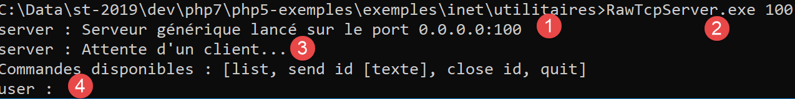
- In [1] befinden wir uns im Ordner „Utilities“;
- in [2] starten wir den TCP-Server auf Port 100;
- in [3] wartet der Server auf einen TCP-Client;
- in [4] wartet der Server auf einen Befehl, den der Benutzer über die Tastatur eingibt;
Im anderen Befehlsfenster starten wir den TCP-Client:

- In [5] befinden wir uns im Ordner „Utilities“;
- in [6] starten wir den TCP-Client: Wir weisen ihn an, eine Verbindung zu Port 100 auf dem lokalen Rechner (dem, an dem Sie gerade arbeiten) herzustellen;
- in [7] hat der Client erfolgreich eine Verbindung zum Server hergestellt. Die Details des Clients werden angezeigt: Er befindet sich auf dem Rechner [DESKTOP-528I5CU] (in diesem Beispiel der lokale Rechner) und nutzt Port [50405] für die Kommunikation mit dem Server:
- In [8] wartet der Client auf einen Befehl, den der Benutzer über die Tastatur eingibt;
Kehren wir zum Serverfenster zurück. Sein Inhalt hat sich geändert:
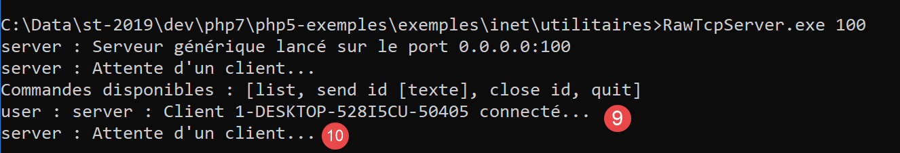
- In [9] wurde ein Client erkannt. Der Server hat ihm die Nummer 1 zugewiesen. Der Server hat den Remote-Client (Rechner und Port) korrekt identifiziert;
- In [10] wartet der Server wieder auf einen neuen Client;
Kehren wir zum Client-Fenster zurück und senden wir einen Befehl an den Server:

- in [11] der an den Server gesendete Befehl;
Kehren wir zum Serverfenster zurück. Sein Inhalt hat sich geändert:
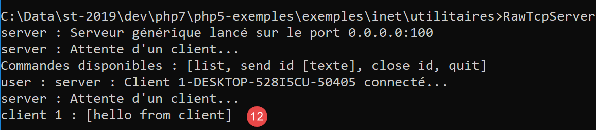
- in [12], in eckigen Klammern, die vom Server empfangene Nachricht;
Senden wir eine Antwort an den Client:

- in [13] die an Client 1 gesendete Antwort. Es wird nur der Text zwischen den Klammern gesendet, nicht die Klammern selbst;
Kehren wir zum Client-Fenster zurück:

- in [14] die vom Client empfangene Antwort. Der empfangene Text ist der zwischen eckigen Klammern;
Kehren wir zum Serverfenster zurück, um weitere Befehle zu sehen:

- in [15] fordern wir die Liste der Clients an;
- in [16] die Antwort;
- in [17] schließen wir die Verbindung mit Client Nr. 1;
- in [18] die Bestätigung des Servers;
- in [19] fahren wir den Server herunter;
- in [20] die Bestätigung des Servers;
Kehren wir zum Client-Fenster zurück:

- in [21] hat der Client das Ende des Dienstes erkannt;
Es wurden zwei Protokolldateien erstellt, eine für den Server und eine für den Client:

- In [25] protokolliert der Server: Der Dateiname lautet „Clientname [Rechner-Port]“;
- in [26] protokolliert der Client: Der Dateiname lautet „Servername [Rechner-Port]“;
Die Serverprotokolle lauten wie folgt:
Die Client-Protokolle lauten wie folgt:
16.3. So finden Sie den Namen oder die IP-Adresse eines Computers im Internet

Computer im Internet werden durch eine IP-Adresse (IPv4 oder IPv6) und meist auch durch einen Namen identifiziert. Letztendlich wird jedoch nur die IP-Adresse verwendet. Daher ist es manchmal notwendig, die IP-Adresse eines Computers zu kennen, der durch seinen Namen identifiziert wird.
Das Skript [ip-01.php] lautet wie folgt:
<?php
// strict adherence to declared function parameter types
declare (strict_types=1);
//
// error management
error_reporting(E_ALL & E_STRICT);
ini_set("display_errors", "on");
//
// constants
$HOTES = array("istia.univ-angers.fr", "www.univ-angers.fr", "www.ibm.com", "localhost", "", "xx");
// IP addresses and $HOTES machine names
for ($i = 0; $i < count($HOTES); $i++) {
getIPandName($HOTES[$i]);
}
// end
print "Terminé\n";
exit;
//------------------------------------------------
function getIPandName(string $nomMachine): void {
//$nomMachine: name of the machine whose address is required IP: name of the machine whose address is required IP: name of the machine whose address is required
//
// nomMachine-->adresse IP
$ip = gethostbyname($nomMachine);
print "---------------\n";
if ($ip !== $nomMachine) {
print "ip[$nomMachine]=$ip\n";
// address IP --> nomMachine
$name = gethostbyaddr($ip);
if ($name !== $ip) {
print "name[$ip]=$name\n";
} else {
print "Erreur, machine[$ip] non trouvée\n";
}
} else {
print "Erreur, machine[$nomMachine] non trouvée\n";
}
}
Kommentare
- Zeilen 7–8: Wir weisen PHP an, alle Fehler (E_ALL & E_STRICT) zu melden und anzuzeigen. Dieser Modus wird nur im Entwicklungsmodus empfohlen, um den Code mithilfe von PHP-Warnungen zu verbessern. Im Produktionsmodus, Zeile 8, würden wir ihn auf „off“ setzen. Seit PHP 5.4 ist die Stufe E_STRICT in E_ALL enthalten;
- Zeile 11: Die Liste der Rechner, für die wir den Namen und die IP-Adresse benötigen;
Die Netzwerkfunktionen von PHP werden in der Funktion getIpandName in Zeile 21 verwendet.
- Zeile 25: Die Funktion `gethostbyname($name)` ruft die IP-Adresse „ip3.ip2.ip1.ip0“ des Rechners mit dem Namen $name ab. Falls der Rechner $name nicht existiert, gibt die Funktion $name als Ergebnis zurück;
- Zeile 30: Die Funktion gethostbyaddr($ip) ruft den mit der IP-Adresse $ip verbundenen Rechnernamen im Format „ip3.ip2.ip1.ip0“ ab. Wenn der Rechner $ip nicht existiert, gibt die Funktion $ip als Ergebnis zurück;
Ergebnisse:
---------------
ip[istia.univ-angers.fr]=193.49.144.41
name[193.49.144.41]=ametys-fo-2.univ-angers.fr
---------------
ip[www.univ-angers.fr]=193.49.144.41
name[193.49.144.41]=ametys-fo-2.univ-angers.fr
---------------
ip[www.ibm.com]=2.18.220.211
name[2.18.220.211]=a2-18-220-211.deploy.static.akamaitechnologies.com
---------------
ip[localhost]=127.0.0.1
name[127.0.0.1]=DESKTOP-528I5CU
---------------
ip[]=192.168.1.38
name[192.168.1.38]=DESKTOP-528I5CU.home
---------------
Erreur, machine[xx] non trouvée
Terminé
16.4. Das HTTP (HyperText Transfer Protocol)
16.4.1. Beispiel 1

Wenn ein Browser eine URL anzeigt, fungiert er als Client eines Webservers, oder anders gesagt, eines HTTP-Servers. Er ergreift die Initiative und sendet zunächst eine Reihe von Befehlen an den Server. Für dieses erste Beispiel:
- ist der Server das Dienstprogramm [RawTcpServer];
- der Client ist ein Browser;
Zunächst starten wir den Server auf Port 100:

Anschließend rufen wir über einen Browser die URL [localhost:100] auf, d. h. wir geben an, dass der HTTP-Server, den wir abfragen, auf Port 100 des lokalen Rechners läuft:

Kehren wir zum Serverfenster zurück:

- in [3] der Client, der eine Verbindung hergestellt hat;
- in [4-7] die Reihe von Textzeilen, die er gesendet hat:
- bei [4]: Diese Zeile hat das Format [GET URL HTTP/1.1]. Sie fordert die URL / an und weist den Server an, das HTTP-1.1-Protokoll zu verwenden;
- in [5]: Diese Zeile hat das Format [Host: server:port]. Die Groß-/Kleinschreibung des Befehls [Host] spielt keine Rolle. Beachten Sie, dass der Client einen lokalen Server abfragt, der auf Port 100 läuft;
- Der Befehl [User-Agent] identifiziert den Client;
- Der Befehl [Accept] gibt an, welche Dokumenttypen vom Client akzeptiert werden;
- Der Befehl [Accept-Language] gibt die Sprache an, in der die angeforderten Dokumente gewünscht werden, falls diese in mehreren Sprachen vorliegen;
- Der Befehl [Connection] gibt den gewünschten Verbindungsmodus an: [keep-alive] bedeutet, dass die Verbindung bis zum Abschluss des Datenaustauschs aufrechterhalten werden muss;
- in [7]: Der Client beendet seine Befehle mit einer Leerzeile;
Wir beenden die Verbindung, indem wir den Server herunterfahren:

16.4.2. Beispiel 2
Da wir nun die Befehle kennen, die ein Browser sendet, um eine URL anzufordern, werden wir diese URL mit unserem TCP-Client [RawTcpClient] anfordern. Der Apache-Server von Laragon wird unser Webserver sein.
Starten wir Laragon und anschließend den Apache-Webserver:


Rufen wir nun mit einem Browser die URL [http://localhost:80] auf. Hier geben wir nur den Server [localhost:80] an, keine Dokument-URL. In diesem Fall wird die URL / aufgerufen, d. h. das Stammverzeichnis des Webservers:

- in [1] die angeforderte URL. Wir haben ursprünglich [http://localhost:80] eingegeben, und der Browser (hier Firefox) hat dies einfach in [localhost] umgewandelt, da das Protokoll [http] impliziert wird, wenn kein Protokoll angegeben ist, und der Port [80] impliziert wird, wenn der Port nicht angegeben ist;
- in [2] die Startseite / des abgefragten Webservers;
Sehen wir uns nun den vom Browser empfangenen Text an:

- Klicken Sie mit der rechten Maustaste auf die Seite und wählen Sie Option [2]. Sie sehen den folgenden Quellcode:
<!DOCTYPE HTML>
<HTML>
<head>
<title>Laragon</title>
<link href="https://fonts.googleapis.com/css?family=Karla:400" rel="stylesheet" type="text/css">
<style>
HTML, body {
height: 100%;
}
body {
margin: 0;
padding: 0;
width: 100%;
display: table;
font-weight: 100;
font-family: 'Karla';
}
.container {
text-align: center;
display: table-cell;
vertical-align: middle;
}
.content {
text-align: center;
display: inline-block;
}
.title {
font-size: 96px;
}
.opt {
margin-top: 30px;
}
.opt a {
text-decoration: none;
font-size: 150%;
}
a:hover {
color: red;
}
</style>
</head>
<body>
<div class="container">
<div class="content">
<div class="title" title="Laragon">Laragon</div>
<div class="info"><br />
Apache/2.4.35 (Win64) OpenSSL/1.1.0i PHP/7.2.11<br />
PHP version: 7.2.11 <span><a title="phpinfo()" href="/?q=info">info</a></span><br />
Document Root: C:/myprograms/laragon-lite/www<br />
</div>
<div class="opt">
<div><a title="Getting Started" href="https://laragon.org/docs">Getting Started</a></div>
</div>
</div>
</div>
</body>
</HTML>
Nun rufen wir die URL [http://localhost:80] mit unserem TCP-Client auf:
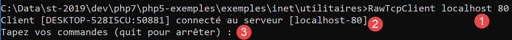
- In [1] stellen wir eine Verbindung zu Port 80 auf dem Localhost-Server her. Dort läuft der Laragon-Webserver;
Nun geben wir die Befehle ein, die wir im vorigen Absatz entdeckt haben:

- in [1] den Befehl [GET]. Wir fragen das Stammverzeichnis / des Webservers ab;
- in [2] den Befehl [Host];
- das sind die einzigen beiden wesentlichen Befehle. Für die anderen Befehle verwendet der Webserver Standardwerte;
- in [3] die Leerzeile, die die Client-Befehle beenden muss;
- unterhalb von Zeile 3 folgt die Antwort des Webservers;
- in [4] bis zur Leerzeile [5] stehen die HTTP-Header der Serverantwort;
- nach Zeile [5] folgt das angeforderte HTML-Dokument [6];
Wir geben [quit] ein, um den Client zu beenden und die Protokolldatei [localhost-80.txt] herunterzuladen:
- Zeilen 11–79: das empfangene HTML-Dokument. Im vorherigen Beispiel hat Firefox dasselbe Dokument empfangen;
Wir verfügen nun über die Grundlagen, um einen TCP-Client zu programmieren, der eine URL anfordert.
16.4.3. Beispiel 3

Das Skript [http-01.php] ist ein HTTP-Client, der über die JSON-Datei [config-http-01.json] konfiguriert wird. Der Inhalt der Datei lautet wie folgt:
- Zeile 2: der Name des Rechners, auf dem der zu erreichende Webserver gehostet wird;
- Zeile 3: der Port, auf dem dieser Webserver läuft;
- Zeile 4: die URL des gewünschten Dokuments;
- Zeile 5: der Zielrechner im Format Rechner:Port;
- Zeile 6: die Identifikation des HTTP-Clients: Sie können hier beliebige Angaben machen;
- Zeile 7: der vom Client akzeptierte Dokumenttyp, in diesem Fall HTML-Text;
- Zeile 8: die gewünschte Sprache für das angeforderte Dokument;
- Zeile 9: das Zeilenendezeichen für vom Client gesendete Befehle: Dies kann je nachdem, ob der Server auf einem Unix-Rechner (\n) oder einem Windows-Rechner (\r\n) läuft, unterschiedlich sein;
Das Skript [http-01.php] lautet wie folgt:
<?php
// strict adherence to declared types of function parameters
declare (strict_types=1);
//
// error management
// error_reporting(E_ALL & E_STRICT);
// ini_set("display_errors", "on");
//
// constants
const CONFIG_FILE_NAME = "config-http-01.json";
//
// we retrieve the configuration
$config = \json_decode(\file_get_contents(CONFIG_FILE_NAME), true);
// otain the HTML text from the URL configuration file
foreach ($config as $site => $protocole) {
// read site index page $ite
$résultat = getURL($site, $protocole);
// result display
print "$résultat\n";
}//for
// end
exit;
//-----------------------------------------------------------------------
function getURL(string $site, array $protocole, $suivi = TRUE): string {
// reads the URL $site["GET"] and stores it in the $site.HTML file
// client/server dialog is based on the $protocole protocol
//
// open a connection on the $site port
$erreurNumber = 0;
$erreur = "";
$connexion = fsockopen($site, $protocole["port"], $erreurNumber, $erreur);
// return if error
if ($connexion === FALSE) {
return "Echec de la connexion au site (" . $site . " ," . $protocole["port"] . " : $erreur";
}
// $connexion represents a bidirectional communication flow
// between the client (this program) and the contacted web server
// this channel is used for the exchange of orders and information
// the dialog protocol is HTTP
//
// creation of the $site.HTML file
$HTML = fopen("output/$site.HTML", "w");
if ($HTML === FALSE) {
// close client/server connection
fclose($connexion);
// error return
return "Erreur lors de la création du fichier $site.HTML";
}
// the client will start the HTTP dialog with the server
if ($suivi) {
print "Client : début de la communication avec le serveur [$site] ----------------------------\n";
}
// depending on the server, client lines must end with \nor \r\n
$endOfLine = $protocole["endOfLine"];
// for simplicity's sake, we don't test for errors in client/server communication
// the customer sends the GET command to request the URL $protocole["GET"]
// syntax GET URL HTTP/1.1
$commande = "GET " . $protocole["GET"] . " HTTP/1.1$endOfLine";
// followed?
if ($suivi) {
print "--> $commande";
}
// send the command to the server
fputs($connexion, $commande);
// issue other headers HTTP
foreach ($protocole as $verb => $value) {
if ($verb !== "GET" && $verb != "port"" && $verb !="endOfLine") {
// we build the
$commande = "$verb: $value$endOfLine";
// followed?
if ($suivi) {
print "--> $commande";
}
// send the command to the server
fputs($connexion, $commande);
}
}
// protocol HTTP headers must end with an empty line
fputs($connexion, $endOfLine);
//
// the server will now respond on channel $connexion. It will send all
// then close the channel. The client therefore reads everything that arrives from $connexion
// until the channel closes
//
// we first read the HTTP headers sent by the server
// they also end with an empty line
if ($suivi) {
print "Réponse du serveur [$site] ----------------------------\n";
}
$fini = FALSE;
while (!$fini && $ligne = fgets($connexion, 1000)) {
// is there an empty line?
$champs = [];
preg_match("/^(.*?)\s+$/", $ligne, $champs);
if ($champs[1] !== "") {
if ($suivi) {
// header HTTP is displayed
print "<-- " . $champs[1] . "\n";
}
} else {
// this was the empty line - HTTP headers are finished
$fini = TRUE;
}
}
// we read the HTML document that will follow the empty line
while ($ligne = fgets($connexion, 1000)) {
// we save the line in the HTML file on the site
fputs($HTML, $ligne);
}
// the server has closed the connection - the client closes it in turn
fclose($connexion);
// close file $HTML
fclose($HTML);
// return
return "Fin de la communication avec le site [$site]. Vérifiez le fichier [$site.HTML]";
}
Code-Kommentare:
- Zeile 14: Die Konfigurationsdatei wird verwendet, um ein Wörterbuch zu erstellen:
- Die Schlüssel des Wörterbuchs sind die abzufragenden Webserver;
- die Werte geben das zu verwendende HTTP-Protokoll an;
- Zeilen 16–21: Wir durchlaufen die Liste der Webserver in der Konfiguration;
- Zeile 26: Die Funktion getURL($site, $protocol, $log) ruft ein Dokument von der Website $site ab und speichert es in der Textdatei $site.HTML. Standardmäßig werden Client-Server-Interaktionen in der Konsole protokolliert ($log=TRUE);
- Zeile 33: Die Funktion fsockopen($site,$port,$errNumber,$error) stellt eine Verbindung zu einem TCP/IP-Dienst her, der auf dem Port $port auf dem Rechner $site läuft. Wenn die Verbindung fehlschlägt, ist [$errNumber] ein Fehlercode und [$error] die zugehörige Fehlermeldung. Sobald die Client-Server-Verbindung hergestellt ist, tauschen viele TCP/IP-Dienste Textzeilen aus. Dies ist hier beim HTTP (HyperText Transfer Protocol) der Fall. Der Datenstrom vom Server zum Client kann dann als Textdatei behandelt werden, die mit [fgets] gelesen wird. Dasselbe gilt für den Datenstrom vom Client zum Server, der mit [fputs] geschrieben werden kann;
- Zeilen 44–50: Erstellung der Datei [$site.HTML], in der das empfangene HTML-Dokument gespeichert wird;
- Zeile 60: Der erste Befehl des Clients muss [GET URL HTTP/1.1] lauten;
- Zeile 66: Die Funktion fputs ermöglicht es dem Client, Daten an den Server zu senden. Die gesendete Textzeile hat hier folgende Bedeutung: „Ich möchte (GET) die Seite [URL] der Website, mit der ich verbunden bin. Ich verwende HTTP Version 1.1“;
- Zeilen 68–79: Die anderen Zeilen des HTTP-Protokolls [Host, User-Agent, Accept, Accept-Language] werden gesendet. Ihre Reihenfolge spielt keine Rolle;
- Zeile 81: Eine Leerzeile wird an den Server gesendet, um anzuzeigen, dass der Client das Senden seiner HTTP-Header abgeschlossen hat und nun auf das angeforderte Dokument wartet;
- Zeilen 92–106: Der Server sendet zunächst eine Reihe von HTTP-Headern, die verschiedene Details zum angeforderten Dokument enthalten. Diese Header enden mit einer Leerzeile;
- Zeile 93: Eine vom Server gesendete Zeile wird mit der PHP-Funktion [fgets] gelesen;
- Zeile 96: Wir extrahieren den Hauptteil der Zeile ohne die Leerzeichen (Leerzeichen, Zeilenendezeichen) am Ende der Zeile;
- Zeile 97: Wir prüfen, ob wir die Leerzeile erhalten haben, die das Ende der vom Server gesendeten HTTP-Header markiert;
- Zeilen 98–101: Im [trace]-Modus wird der empfangene HTTP-Header in der Konsole angezeigt;
- Zeilen 108–111: Die Textzeilen der Serverantwort können mithilfe einer while-Schleife Zeile für Zeile gelesen und in der Textdatei [output/$site.HTML] gespeichert werden. Wenn der Webserver die gesamte angeforderte Seite gesendet hat, schließt er seine Verbindung zum Client. Auf der Clientseite wird dies als Dateiende erkannt;
Ergebnisse:
Die Konsole zeigt die folgenden Protokolle an:
Client : début de la communication avec le serveur [localhost] ----------------------------
--> GET / HTTP/1.1
--> Host: localhost:80
--> User-Agent: client PHP
--> Accept: text/HTML
--> Accept-Language: fr
Réponse du serveur [localhost] ----------------------------
<-- HTTP/1.1 200 OK
<-- Date: Thu, 16 May 2019 15:43:18 GMT
<-- Server: Apache/2.4.35 (Win64) OpenSSL/1.1.0i PHP/7.2.11
<-- X-Powered-By: PHP/7.2.11
<-- Content-Length: 1781
<-- Content-Type: text/HTML; charset=UTF-8
Fin de la communication avec le site [localhost]. Vérifiez le fichier [localhost.HTML]
In unserem Beispiel sieht die empfangene Datei [output/localhost.HTML] wie folgt aus:
<!DOCTYPE HTML>
<HTML>
<head>
<title>Laragon</title>
<link href="https://fonts.googleapis.com/css?family=Karla:400" rel="stylesheet" type="text/css">
<style>
HTML, body {
height: 100%;
}
body {
margin: 0;
padding: 0;
width: 100%;
display: table;
font-weight: 100;
font-family: 'Karla';
}
.container {
text-align: center;
display: table-cell;
vertical-align: middle;
}
.content {
text-align: center;
display: inline-block;
}
.title {
font-size: 96px;
}
.opt {
margin-top: 30px;
}
.opt a {
text-decoration: none;
font-size: 150%;
}
a:hover {
color: red;
}
</style>
</head>
<body>
<div class="container">
<div class="content">
<div class="title" title="Laragon">Laragon</div>
<div class="info"><br />
Apache/2.4.35 (Win64) OpenSSL/1.1.0i PHP/7.2.11<br />
PHP version: 7.2.11 <span><a title="phpinfo()" href="/?q=info">info</a></span><br />
Document Root: C:/myprograms/laragon-lite/www<br />
</div>
<div class="opt">
<div><a title="Getting Started" href="https://laragon.org/docs">Getting Started</a></div>
</div>
</div>
</div>
</body>
</HTML>
Wir haben tatsächlich dasselbe Dokument erhalten wie mit dem Firefox-Browser.
16.4.4. Beispiel 4
In diesem Beispiel werden wir zeigen, dass der von uns geschriebene HTTP-Client unzureichend ist. Ändern Sie die Konfigurationsdatei [config-http-01.json] wie folgt:
Hier werden wir die URL [http://tahe.developpez.com:443/] aufrufen. Port 443 auf dem Rechner [tahe.developpez.com] ist ein Port, der für das sichere HTTP-Protokoll, bekannt als HTTPS, verwendet wird. Bei diesem Protokoll beginnt die Client-Server-Interaktion mit einem Informationsaustausch, der die Verbindung sichert. Der Client muss daher das [HTTPS]-Protokoll anstelle des [HTTP]-Protokolls verwenden, was unser Client jedoch nicht tut.
Mit dieser Konfigurationsdatei sieht die Konsolenausgabe wie folgt aus:
Client : début de la communication avec le serveur [tahe.developpez.com] ----------------------------
--> GET / HTTP/1.1
--> Host: sergetahe.com:443
--> User-Agent: script PHP 7
--> Accept: text/HTML
--> Accept-Language: fr
Réponse du serveur [tahe.developpez.com] ----------------------------
<-- HTTP/1.1 400 Bad Request
<-- Date: Fri, 17 May 2019 13:02:26 GMT
<-- Server: Apache/2.4.25 (Debian)
<-- Content-Length: 454
<-- Connection: close
<-- Content-Type: text/HTML; charset=iso-8859-1
Fin de la communication avec le site [tahe.developpez.com]. Vérifiez le fichier [output/tahe.developpez.com.HTML]
- Zeile 8: Der Server [tahe.developpez.com] hat geantwortet, dass die Anfrage des Clients fehlerhaft war;
Der Inhalt der Datei [output/tahe.developpez.com.HTML] lautet wie folgt:
<!DOCTYPE HTML PUBLIC "-//IETF//DTD HTML 2.0//EN">
<HTML><head>
<title>400 Bad Request</title>
</head><body>
<h1>Bad Request</h1>
<p>Your browser sent a request that this server could not understand.<br />
Reason: You're speaking plain HTTP to an SSL-enabled server port.<br />
Instead use the HTTPS scheme to access this URL, please.<br />
</p>
<hr>
<address>Apache/2.4.25 (Debian) Server at 2eurocents.developpez.com Port 443</address>
</body></HTML>
Der Server weist eindeutig darauf hin, dass wir nicht das richtige Protokoll verwendet haben.
Verwenden wir nun die folgende Konfigurationsdatei:
Die Konsolenausgabe lautet wie folgt:
Client : début de la communication avec le serveur [sergetahe.com] ----------------------------
--> GET /cours-tutoriels-de-programmation/ HTTP/1.1
--> Host: sergetahe.com:80
--> User-Agent: script PHP 7
--> Accept: text/HTML
--> Accept-Language: fr
Réponse du serveur [sergetahe.com] ----------------------------
<-- HTTP/1.1 200 OK
<-- Date: Fri, 17 May 2019 13:36:06 GMT
<-- Content-Type: text/HTML; charset=UTF-8
<-- Transfer-Encoding: chunked
<-- Server: Apache
<-- X-Powered-By: PHP/7.0
<-- Vary: Accept-Encoding
<-- Set-Cookie: SERVERID68971=2621207|XN64y|XN64y; path=/
<-- Cache-control: private
<-- X-IPLB-Instance: 17106
Fin de la communication avec le site [sergetahe.com]. Vérifiez le fichier [output/sergetahe.com.HTML]
- Zeile 11 zeigt an, dass der Server das Dokument in Blöcken sendet;
Dies führt dazu, dass im an den Client gesendeten Datenstrom Zahlen erscheinen: Jede Zahl teilt dem Client die Anzahl der Zeichen im nächsten vom Server gesendeten Datenblock mit. So sieht das in der Datei [output/sergetahe.com.HTML] aus:

- [1] und [2] stehen für die hexadezimale Größe der Blöcke 1 und 2 des Dokuments;
Ein ordnungsgemäßer HTTP-Client sollte diese Zahlen nicht im endgültigen HTML-Dokument belassen.
Hier ist ein weiteres Beispiel:
Es ähnelt dem vorherigen Beispiel, aber die in Zeile 4 angeforderte URL endet nicht mit einem /. Es handelt sich nicht um dieselben URLs. Die Ausführung des HTTP-Clients erzeugt dann die folgende Konsolenausgabe:
Client : début de la communication avec le serveur [sergetahe.com] ----------------------------
--> GET /cours-tutoriels-de-programmation HTTP/1.1
--> Host: sergetahe.com:80
--> User-Agent: script PHP 7
--> Accept: text/HTML
--> Accept-Language: fr
Réponse du serveur [sergetahe.com] ----------------------------
<-- HTTP/1.1 301 Moved Permanently
<-- Date: Fri, 17 May 2019 13:47:00 GMT
<-- Content-Type: text/HTML; charset=iso-8859-1
<-- Content-Length: 262
<-- Server: Apache
<-- Location: http://sergetahe.com:80/cours-tutoriels-de-programmation/
<-- Set-Cookie: SERVERID68971=2621207|XN67V|XN67V; path=/
<-- Cache-control: private
<-- X-IPLB-Instance: 17095
Fin de la communication avec le site [sergetahe.com]. Vérifiez le fichier [output/sergetahe.com.HTML]
- Zeile 8 zeigt an, dass sich die URL des angeforderten Dokuments geändert hat. Die neue URL ist in Zeile 13 angegeben. Beachten Sie diesmal das Zeichen / am Ende der neuen URL;
Die Datei [output/serge.tahe.com.HTML] sieht dann wie folgt aus:
<!DOCTYPE HTML PUBLIC "-//IETF//DTD HTML 2.0//EN">
<HTML><head>
<title>301 Moved Permanently</title>
</head><body>
<h1>Moved Permanently</h1>
<p>The document has moved <a href="http://sergetahe.com/cours-tutoriels-de-programmation/">here</a>.</p>
</body></HTML>
Ein HTTP-Client sollte in der Lage sein, Weiterleitungen zu verfolgen. In diesem Fall sollte er automatisch die neue URL [http://sergetahe.com/cours-tutoriels-de-programmation/] anfordern.
16.4.5. Beispiel 5
Die vorherigen Beispiele haben uns gezeigt, dass unser HTTP-Client unzureichend war. Wir stellen nun ein Tool namens [curl] vor, mit dem Sie Webdokumente abrufen und gleichzeitig die genannten Herausforderungen bewältigen können: HTTPS-Protokoll, in Chunks gesendete Dokumente, Weiterleitungen… Das [curl]-Tool wurde mit Laragon installiert:

Öffnen wir ein Laragon-Terminal [1]:

Geben Sie im Terminal den folgenden Befehl ein:

- in [1] den Konsolentyp;
- in [2] das aktuelle Verzeichnis. Dieses Verzeichnis ist etwas Besonderes: Hier ruft der Apache-Server von Laragon die angeforderten Dokumente ab. Wir sollten daher vermeiden, dieses Verzeichnis zu überladen;
- in [3] den eingegebenen Befehl;
Der Befehl [curl --help] kann einen Fehler auslösen. Die wahrscheinlichste Ursache ist, dass Sie nicht den richtigen Terminaltyp verwenden. Öffnen Sie in diesem Fall ein weiteres Terminal mit den Befehlen [4-6];
Der Befehl [curl --help] zeigt alle Konfigurationsoptionen von [curl] an. Es gibt Dutzende davon. Wir werden nur sehr wenige davon verwenden. Um eine URL abzufragen, geben Sie einfach den Befehl [curl URL] ein. Dieser Befehl zeigt das angeforderte Dokument auf der Konsole an. Wenn Sie auch den HTTP-Datenaustausch zwischen dem Client und dem Server sehen möchten, geben Sie [curl --verbose URL] ein. Um schließlich das angeforderte HTML-Dokument in einer Datei zu speichern, geben Sie [curl --verbose --output file URL] ein.
Um den [www]-Ordner von Laragon nicht zu überladen, wechseln wir an einen anderen Ort im Dateisystem:

- Navigieren Sie in [1] zum Ordner [c:\temp]. Falls dieser Ordner nicht existiert, können Sie ihn erstellen oder einen anderen wählen;
- Erstellen Sie in [2] einen Ordner mit dem Namen [curl];
- in [3] navigieren Sie dorthin;
- in [4] listen Sie dessen Inhalt auf. Er ist leer;
Stellen Sie sicher, dass der Laragon-Apache-Server läuft, und rufen Sie mit [curl] die URL [http://localhost/] mit dem Befehl [curl –verbose –output localhost.HTML http://localhost/] auf. Sie erhalten folgende Ergebnisse:
c:\Temp\curl
λ curl --verbose --output localhost.HTML http://localhost/
% Total % Received % Xferd Average Speed Time Time Time Current
Dload Upload Total Spent Left Speed
0 0 0 0 0 0 0 0 --:--:-- --:--:-- --:--:-- 0* Trying ::1…
* TCP_NODELAY set
* Connected to localhost (::1) port 80 (#0)
> GET / HTTP/1.1
> Host: localhost
> User-Agent: curl/7.63.0
> Accept: */*
>
< HTTP/1.1 200 OK
< Date: Fri, 17 May 2019 14:32:47 GMT
< Server: Apache/2.4.35 (Win64) OpenSSL/1.1.0i PHP/7.2.11
< X-Powered-By: PHP/7.2.11
< Content-Length: 1781
< Content-Type: text/HTML; charset=UTF-8
<
{ [1781 bytes data]
100 1781 100 1781 0 0 14248 0 --:--:-- --:--:-- --:--:-- 14248
* Connection #0 to host localhost left intact
- Zeilen 8–12: von [curl] an den [localhost]-Server gesendete Zeilen. Das HTTP-Protokoll wird erkannt;
- Zeilen 13–19: vom Server als Antwort gesendete Zeilen;
- Zeile 13: zeigt an, dass das angeforderte Dokument erfolgreich empfangen wurde;
Die Datei [localhost.HTML] enthält das angeforderte Dokument. Sie können dies überprüfen, indem Sie die Datei in einem Texteditor öffnen.
Rufen wir nun die URL [https://tahe.developpez.com:443/] auf. Um diese URL abzurufen, muss der HTTP-Client HTTPS unterstützen. Dies ist beim [curl]-Client der Fall.
Die Konsolenausgabe sieht wie folgt aus:
c:\Temp\curl
λ curl --verbose --output tahe.developpez.com.HTML https://tahe.developpez.com:443/
% Total % Received % Xferd Average Speed Time Time Time Current
Dload Upload Total Spent Left Speed
0 0 0 0 0 0 0 0 --:--:-- --:--:-- --:--:-- 0* Trying 87.98.130.52…
* TCP_NODELAY set
* Connected to tahe.developpez.com (87.98.130.52) port 443 (#0)
* ALPN, offering h2
* ALPN, offering http/1.1
* successfully set certificate verify locations:
* CAfile: C:\myprograms\laragon-lite\bin\laragon\utils\curl-ca-bundle.crt
CApath: none
} [5 bytes data]
* TLSv1.3 (OUT), TLS handshake, Client hello (1):
} [512 bytes data]
* TLSv1.3 (IN), TLS handshake, Server hello (2):
{ [108 bytes data]
* TLSv1.2 (IN), TLS handshake, Certificate (11):
{ [2558 bytes data]
* TLSv1.2 (IN), TLS handshake, Server key exchange (12):
{ [333 bytes data]
* TLSv1.2 (IN), TLS handshake, Server finished (14):
{ [4 bytes data]
* TLSv1.2 (OUT), TLS handshake, Client key exchange (16):
} [70 bytes data]
* TLSv1.2 (OUT), TLS change cipher, Change cipher spec (1):
} [1 bytes data]
* TLSv1.2 (OUT), TLS handshake, Finished (20):
} [16 bytes data]
* TLSv1.2 (IN), TLS handshake, Finished (20):
{ [16 bytes data]
* SSL connection using TLSv1.2 / ECDHE-RSA-AES128-GCM-SHA256
* ALPN, server accepted to use http/1.1
* Server certificate:
* subject: CN=*.developpez.com
* start date: Apr 4 08:25:09 2019 GMT
* expire date: Jul 3 08:25:09 2019 GMT
* subjectAltName: host "tahe.developpez.com" matched cert's "*.developpez.com"
* issuer: C=US; O=Let's Encrypt; CN=Let's Encrypt Authority X3
* SSL certificate verify ok.
} [5 bytes data]
> GET / HTTP/1.1
> Host: tahe.developpez.com
> User-Agent: curl/7.63.0
> Accept: */*
>
{ [5 bytes data]
< HTTP/1.1 200 OK
< Date: Fri, 17 May 2019 14:39:41 GMT
< Server: Apache/2.4.25 (Debian)
< X-Powered-By: PHP/5.3.29
< Vary: Accept-Encoding
< Transfer-Encoding: chunked
< Content-Type: text/HTML
<
{ [6 bytes data]
100 96559 0 96559 0 0 163k 0 --:--:-- --:--:-- --:--:-- 163k
* Connection #0 to host tahe.developpez.com left intact
- Zeilen 10–40: Client-Server-Kommunikation zur Sicherung der Verbindung: Diese wird verschlüsselt;
- Zeilen 42–45: die vom Client [curl] an den Server gesendeten HTTP-Header;
- Zeile 48: Das angeforderte Dokument wurde gefunden;
- Zeile 53: Das Dokument wird in Blöcken gesendet;
[curl] verarbeitet sowohl das sichere HTTPS-Protokoll als auch die Tatsache, dass das Dokument in Blöcken gesendet wird, korrekt. Das gesendete Dokument ist hier in der Datei [tahe.developpez.com.HTML] zu finden.
Rufen wir nun die URL [http://sergetahe.com/cours-tutoriels-de-programmation] auf. Wir haben gesehen, dass es für diese URL eine Weiterleitung zur URL [http://sergetahe.com/cours-tutoriels-de-programmation/] gab (mit einem / am Ende).
Die Konsolenausgabe lautet wie folgt:
c:\Temp\curl
λ curl --verbose --output sergetahe.com.HTML --location http://sergetahe.com/cours-tutoriels-de-programmation
% Total % Received % Xferd Average Speed Time Time Time Current
Dload Upload Total Spent Left Speed
0 0 0 0 0 0 0 0 --:--:-- --:--:-- --:--:-- 0* Trying 87.98.154.146…
* TCP_NODELAY set
* Connected to sergetahe.com (87.98.154.146) port 80 (#0)
> GET /cours-tutoriels-de-programmation HTTP/1.1
> Host: sergetahe.com
> User-Agent: curl/7.63.0
> Accept: */*
>
< HTTP/1.1 301 Moved Permanently
< Date: Fri, 17 May 2019 15:13:03 GMT
< Content-Type: text/HTML; charset=iso-8859-1
< Content-Length: 262
< Server: Apache
< Location: http://sergetahe.com/cours-tutoriels-de-programmation/
< Set-Cookie: SERVERID68971=2621207|XN7Pg|XN7Pg; path=/
< Cache-control: private
< X-IPLB-Instance: 17095
<
* Ignoring the response-body
{ [262 bytes data]
100 262 100 262 0 0 1401 0 --:--:-- --:--:-- --:--:-- 1401
* Connection #0 to host sergetahe.com left intact
* Issue another request to this URL: 'http://sergetahe.com/cours-tutoriels-de-programmation/'
* Found bundle for host sergetahe.com: 0x1c88548 [can pipeline]
* Could pipeline, but not asked to!
* Re-using existing connection! (#0) with host sergetahe.com
* Connected to sergetahe.com (87.98.154.146) port 80 (#0)
0 0 0 0 0 0 0 0 --:--:-- --:--:-- --:--:-- 0
> GET /cours-tutoriels-de-programmation/ HTTP/1.1
> Host: sergetahe.com
> User-Agent: curl/7.63.0
> Accept: */*
>
< HTTP/1.1 200 OK
< Date: Fri, 17 May 2019 15:13:04 GMT
< Content-Type: text/HTML; charset=UTF-8
< Transfer-Encoding: chunked
< Server: Apache
< X-Powered-By: PHP/7.0
< Vary: Accept-Encoding
< Set-Cookie: SERVERID68971=2621207|XN7Pg|XN7Pg; path=/
< Cache-control: private
< X-IPLB-Instance: 17095
<
{ [14205 bytes data]
100 43101 0 43101 0 0 78795 0 --:--:-- --:--:-- --:--:-- 168k
* Connection #0 to host sergetahe.com left intact
- Zeile 2: Die Option [--location] wird verwendet, um anzugeben, dass wir den vom Server gesendeten Weiterleitungen folgen wollen;
- Zeile 13: Der Server gibt an, dass sich die URL des angeforderten Dokuments geändert hat;
- Zeile 18: Er gibt die neue URL des angeforderten Dokuments an;
- Zeile 27: [curl] sendet eine neue Anfrage an die neue URL;
- Zeile 33: Die neue URL wird verwendet;
- Zeile 38: Der Server antwortet, dass er das angeforderte Dokument gefunden hat;
- Zeile 41: Er sendet es in Blöcken;
Das angeforderte Dokument befindet sich in der Datei [sergetahe.com.HTML].
16.4.6. Beispiel 6
PHP verfügt über eine Erweiterung namens [libcurl], mit der Sie die Funktionen des Tools [curl] in einem PHP-Programm nutzen können. Stellen Sie zunächst sicher, dass diese Erweiterung in der im Abschnitt „Links“ beschriebenen Datei [php.ini] aktiviert ist:

Stellen Sie sicher, dass die Zeile 889 oben nicht auskommentiert ist.
Wir werden ein Skript [http-02.php] schreiben, das die folgende JSON-Konfigurationsdatei verwendet:
Jeder [Schlüssel, Wert]-Eintrag im Wörterbuch hat die folgende Struktur:
- Schlüssel: der Name eines Webservers;
- Wert ist ein Wörterbuch mit den folgenden Schlüsseln:
- timeout: maximale Wartezeit auf die Antwort des Servers. Nach Ablauf dieser Zeit trennt der Client die Verbindung;
- url: URL des angeforderten Dokuments;
Der Skriptcode [http-02.php] lautet wie folgt:
<?php
// strict adherence to declared types of function parameters
declare (strict_types=1);
//
// error management
//error_reporting(E_ALL & E_STRICT);
//ini_set("display_errors", "on");
//
// constants
const CONFIG_FILE_NAME = "config-http-02.json";
//
// we retrieve the configuration
$config = \json_decode(\file_get_contents(CONFIG_FILE_NAME), true);
// get the HTML text from the URL in the configuration file
foreach ($config as $site => $infos) {
// reading URL from site $ite
$résultat = getUrl($site, $infos["url"], $infos["timeout"]);
// result display
print "$résultat\n";
}//for
// end
exit;
//-----------------------------------------------------------------------
function getUrl(string $site, string $url, int $timeout, $suivi = TRUE): string {
// reads the URL $url and stores it in the file output/$site.HTML
//
// follow-up
print "Client : début de la communication avec le serveur [$site] ----------------------------\n";
// Session initialization cURL
$curl = curl_init($url);
if ($curl === FALSE) {
// there has been an error
return "Erreur lors de l'initialisation de la session cURL pour le site [$site]";
}
// curl options
$options = [
// verbose mode
CURLOPT_VERBOSE => true,
// new connection - no cache
CURLOPT_FRESH_CONNECT => true,
// request timeout (in seconds)
CURLOPT_TIMEOUT => $timeout,
CURLOPT_CONNECTTIMEOUT => $timeout,
// do not check the validity of SSL certificates
CURLOPT_SSL_VERIFYPEER => false,
// track redirects
CURLOPT_FOLLOWLOCATION => true,
// retrieve the requested document as a character string
CURLOPT_RETURNTRANSFER => true
];
// curl settings
curl_setopt_array($curl, $options);
// Executing the request
$page_content = curl_exec($curl);
// Close session cURL
curl_close($curl);
// income statement
if ($page_content !== FALSE) {
// save result in $site.HTML
$result = file_put_contents("output/$site.HTML", $page_content);
if ($result === FALSE) {
// error return
return "Erreur lors de la création du fichier [output/$site.HTML]";
}
// successful comeback
return "Fin de la communication avec le serveur [$site]. Vérifiez le fichier [output/$site.HTML]";
} else {
// there has been a communication error
return "Erreur de communication avec le serveur [$site]";
}
}
Kommentare
- Zeile 14: Wir verwenden die Konfigurationsdatei, um das Wörterbuch [$config] zu erstellen;
- Zeilen 17–22: Wir durchlaufen die Liste der in der Konfiguration gefundenen Websites;
- Zeile 19: Für jede Website rufen wir die Funktion [getUrl] auf, die die URL $infos["url"] mit einer Zeitüberschreitung von $infos["timeout"] herunterlädt;
- Zeile 34: Wir starten eine [curl]-Sitzung. [curl_init] stellt noch keine Verbindung zum Webserver her. Es gibt eine Ressource [$curl] zurück, die als Parameter für alle nachfolgenden [curl]-Funktionen dient;
- Zeilen 35–38: Wenn die Initialisierung der [curl]-Sitzung fehlschlägt, gibt die Funktion [curl_init] den booleschen Wert FALSE zurück;
- Zeilen 40–54: Das Wörterbuch [$options] konfiguriert die [curl]-Verbindung zum Server;
- Zeile 57: Die Verbindungsoptionen werden an die Ressource [$curl] übergeben;
- Zeile 59: stellt mit den definierten Optionen eine Verbindung zur angeforderten URL her. Aufgrund der Option [CURLOPT_RETURNTRANSFER => true] gibt die Funktion [curl_exec] das vom Server gesendete Dokument als String zurück. Die Funktion [curl_exec] gibt FALSE zurück, wenn die Verbindung fehlschlägt;
- Zeile 64: Wir analysieren das Ergebnis von [curl_exec];
- Zeile 66: Die empfangene Seite wird in einer lokalen Datei gespeichert;
- Zeilen 69, 72, 75: Das Ergebnis der Funktion [getUrl] wird zurückgegeben;
Bei Ausführung des Skripts [http-02.php] wird folgende Konsolenausgabe angezeigt:
* Rebuilt URL to: http://sergetahe.com/
Client : début de la communication avec le serveur [sergetahe.com] ----------------------------
* Trying 87.98.154.146…
* TCP_NODELAY set
* Connected to sergetahe.com (87.98.154.146) port 80 (#0)
> GET / HTTP/1.1
Host: sergetahe.com
Accept: */*
< HTTP/1.1 302 Found
< Date: Sat, 18 May 2019 08:46:38 GMT
< Content-Type: text/HTML; charset=UTF-8
< Transfer-Encoding: chunked
< Server: Apache
< X-Powered-By: PHP/7.0
< Location: http://sergetahe.com/cours-tutoriels-de-programmation
< Set-Cookie: SERVERID68971=2621236|XN/Gc|XN/Gc; path=/
< X-IPLB-Instance: 17097
<
* Ignoring the response-body
* Connection #0 to host sergetahe.com left intact
* Issue another request to this URL: 'http://sergetahe.com/cours-tutoriels-de-programmation'
* Found bundle for host sergetahe.com: 0x1fee4ebe090 [can pipeline]
* Re-using existing connection! (#0) with host sergetahe.com
* Connected to sergetahe.com (87.98.154.146) port 80 (#0)
> GET /cours-tutoriels-de-programmation HTTP/1.1
Host: sergetahe.com
Accept: */*
< HTTP/1.1 301 Moved Permanently
< Date: Sat, 18 May 2019 08:46:38 GMT
< Content-Type: text/HTML; charset=iso-8859-1
< Content-Length: 262
< Server: Apache
< Location: http://sergetahe.com/cours-tutoriels-de-programmation/
< Set-Cookie: SERVERID68971=2621236|XN/Gc|XN/Gc; path=/
< Cache-control: private
< X-IPLB-Instance: 17097
<
* Ignoring the response-body
* Connection #0 to host sergetahe.com left intact
* Issue another request to this URL: 'http://sergetahe.com/cours-tutoriels-de-programmation/'
* Found bundle for host sergetahe.com: 0x1fee4ebe090 [can pipeline]
* Re-using existing connection! (#0) with host sergetahe.com
* Connected to sergetahe.com (87.98.154.146) port 80 (#0)
> GET /cours-tutoriels-de-programmation/ HTTP/1.1
Host: sergetahe.com
Accept: */*
< HTTP/1.1 200 OK
< Date: Sat, 18 May 2019 08:46:39 GMT
< Content-Type: text/HTML; charset=UTF-8
< Transfer-Encoding: chunked
< Server: Apache
< X-Powered-By: PHP/7.0
< Link: <http://sergetahe.com/cours-tutoriels-de-programmation/wp-json/>; rel="https://api.w.org/"
< Link: <http://sergetahe.com/cours-tutoriels-de-programmation/>; rel=shortlink
< Vary: Accept-Encoding
< Set-Cookie: SERVERID68971=2621236|XN/Gc|XN/Gc; path=/
< Cache-control: private
< X-IPLB-Instance: 17097
<
Fin de la communication avec le serveur [sergetahe.com]. Vérifiez le fichier [output/sergetahe.com.HTML]
Client : début de la communication avec le serveur [tahe.developpez.com] ----------------------------
* Connection #0 to host sergetahe.com left intact
* Rebuilt URL to: https://tahe.developpez.com/
* Trying 87.98.130.52…
* TCP_NODELAY set
* Connected to tahe.developpez.com (87.98.130.52) port 443 (#0)
* ALPN, offering http/1.1
* successfully set certificate verify locations:
* CAfile: C:\myprograms\laragon-lite\etc\ssl\cacert.pem
CApath: none
* SSL connection using TLSv1.2 / ECDHE-RSA-AES128-GCM-SHA256
* ALPN, server accepted to use http/1.1
* Server certificate:
* subject: CN=*.developpez.com
* start date: Apr 4 08:25:09 2019 GMT
* expire date: Jul 3 08:25:09 2019 GMT
* subjectAltName: host "tahe.developpez.com" matched cert's "*.developpez.com"
* issuer: C=US; O=Let's Encrypt; CN=Let's Encrypt Authority X3
* SSL certificate verify ok.
> GET / HTTP/1.1
Host: tahe.developpez.com
Accept: */*
< HTTP/1.1 200 OK
< Date: Sat, 18 May 2019 08:46:42 GMT
< Server: Apache/2.4.25 (Debian)
< X-Powered-By: PHP/5.3.29
< Vary: Accept-Encoding
< Transfer-Encoding: chunked
< Content-Type: text/HTML
<
Fin de la communication avec le serveur [tahe.developpez.com]. Vérifiez le fichier [output/tahe.developpez.com.HTML]
Client : début de la communication avec le serveur [www.polytech-angers.fr] ----------------------------
* Connection #0 to host tahe.developpez.com left intact
* Rebuilt URL to: http://www.polytech-angers.fr/
* Trying 193.49.144.41…
* TCP_NODELAY set
* Connected to www.polytech-angers.fr (193.49.144.41) port 80 (#0)
> GET / HTTP/1.1
Host: www.polytech-angers.fr
Accept: */*
< HTTP/1.1 301 Moved Permanently
< Date: Sat, 18 May 2019 08:46:45 GMT
< Server: Apache/2.4.29 (Ubuntu)
< Location: http://www.polytech-angers.fr/fr/index.HTML
< Cache-Control: max-age=1
< Expires: Sat, 18 May 2019 08:46:46 GMT
< Content-Length: 339
< Content-Type: text/HTML; charset=iso-8859-1
<
* Ignoring the response-body
* Connection #0 to host www.polytech-angers.fr left intact
* Issue another request to this URL: 'http://www.polytech-angers.fr/fr/index.HTML'
* Found bundle for host www.polytech-angers.fr: 0x1fee4ebe390 [can pipeline]
* Re-using existing connection! (#0) with host www.polytech-angers.fr
* Connected to www.polytech-angers.fr (193.49.144.41) port 80 (#0)
> GET /fr/index.HTML HTTP/1.1
Host: www.polytech-angers.fr
Accept: */*
< HTTP/1.1 200
< Date: Sat, 18 May 2019 08:46:46 GMT
< Server: Apache/2.4.29 (Ubuntu)
< X-Cocoon-Version: 2.1.13-dev
< Accept-Ranges: bytes
< Last-Modified: Sat, 18 May 2019 08:01:36 GMT
< Content-Type: text/HTML; charset=UTF-8
< Content-Length: 47372
< Vary: Accept-Encoding
< Cache-Control: max-age=1
< Expires: Sat, 18 May 2019 08:46:47 GMT
< Content-Language: fr
<
* Connection #0 to host www.polytech-angers.fr left intact
Fin de la communication avec le serveur [www.polytech-angers.fr]. Vérifiez le fichier [output/www.polytech-angers.fr.HTML]
Client : début de la communication avec le serveur [localhost] ----------------------------
* Rebuilt URL to: http://localhost/
* Trying ::1…
* TCP_NODELAY set
* Connected to localhost (::1) port 80 (#0)
> GET / HTTP/1.1
Host: localhost
Accept: */*
< HTTP/1.1 200 OK
< Date: Sat, 18 May 2019 08:46:47 GMT
< Server: Apache/2.4.35 (Win64) OpenSSL/1.1.0i PHP/7.2.11
< X-Powered-By: PHP/7.2.11
< Content-Length: 1781
< Content-Type: text/HTML; charset=UTF-8
<
* Connection #0 to host localhost left intact
Fin de la communication avec le serveur [localhost]. Vérifiez le fichier [output/localhost.HTML]
Kommentare
- Wir erhalten denselben Datenaustausch wie mit dem [curl]-Tool;
- in Grün die Skriptprotokolle;
- in Blau die an den Server gesendeten Befehle;
- gelb: die vom Client als Antwort empfangenen Befehle;
16.4.7. Fazit
In diesem Abschnitt haben wir das HTTP-Protokoll untersucht und ein Skript [http-02.php] geschrieben, das eine URL aus dem Internet herunterladen kann.
16.5. Das SMTP (Simple Mail Transfer Protocol)
16.5.1. Einführung

In diesem Kapitel:
- [Server B] ist ein lokaler SMTP-Server, den wir installieren werden;
- [Client A] ist ein SMTP-Client in verschiedenen Formen:
- den [RawTcpClient]-Client, um das SMTP-Protokoll zu untersuchen;
- ein PHP-Skript, das das SMTP-Protokoll des [RawTcpClient]-Clients emuliert;
- ein PHP-Skript, das die [SwiftMailServer]-Bibliothek nutzt, um alle Arten von E-Mails zu versenden;
16.5.2. Erstellen einer [Gmail]-Adresse
Um unsere SMTP-Tests durchzuführen, benötigen wir eine E-Mail-Adresse, an die wir senden können. Dazu erstellen wir eine Adresse bei Gmail:

- In [5] erstellen wir den Benutzer [php7parlexemple] (wählen Sie einen anderen Namen);
- in [6] lautet das Passwort [PHP7parlexemple] (wählen Sie etwas anderes);
- In [7] bestätigen wir diese Angaben;

- Füllen Sie die Felder [9–10] aus und bestätigen Sie anschließend (11);
- Akzeptieren Sie die Nutzungsbedingungen von Google (12–13) und bestätigen Sie anschließend (14);

- in [15] der Posteingang des Benutzers [PHP7] (16);
- in [17] hat dieser Nutzer einen leeren Posteingang;
- in [18-19], melden Sie sich beim Google-Konto des Benutzers an [php7parlexemple@gmail.com]. Wir werden die Sicherheit des Kontos konfigurieren;

- in [21] den Zugriff auf das Konto für andere Anwendungen als die von Google zulassen [php7parlexemple]. Wenn Sie dies nicht tun, kann unser lokaler Mailserver [hMailServer] nicht mit dem SMTP-Server von Gmail kommunizieren;

16.5.3. Einrichten eines SMTP-Servers
Für unsere Tests installieren wir den Mailserver [hMailServer], der als SMTP-Server zum Versenden von E-Mails, als POP3-Server (Post Office Protocol) zum Abrufen von auf dem Server gespeicherten E-Mails und als IMAP-Server (Internet Message Access Protocol) dient, mit dem Sie ebenfalls auf dem Server gespeicherte E-Mails abrufen können, der jedoch zusätzliche Funktionen bietet. Insbesondere ermöglicht er Ihnen die Verwaltung des E-Mail-Speichers auf dem Server.
Der [hMailServer]-Mailserver ist unter der URL [https://www.hmailserver.com/] (Stand: Mai 2019) verfügbar.

Während der Installation werden Sie nach bestimmten Informationen gefragt:

- Wählen Sie in [1-2] sowohl den Mailserver als auch die Tools zu dessen Verwaltung aus;
- Während der Installation werden Sie nach dem Administratorkennwort gefragt: Notieren Sie es sich, da Sie es benötigen werden;
[hMailServer] wird als Windows-Dienst installiert, der beim Hochfahren des Computers automatisch gestartet wird. Es ist empfehlenswert, einen manuellen Start zu wählen:
- Geben Sie in [3] in das Suchfeld der Taskleiste [Dienste] ein;

- Stellen Sie in [4-8] den Dienst auf den Modus [Manuell] (6) ein und starten Sie ihn anschließend (7);
Nach dem Start muss der [hMailServer] konfiguriert werden. Der Server wurde mit einem Verwaltungsprogramm [hMailServer Administrator] installiert:

- Geben Sie in [2] in das Eingabefeld der Statusleiste [hmailserver] ein;
- Starten Sie in [3] den Administrator;
- Verbinden Sie in [4] den Administrator mit dem [hMailServer]-Server;
- Geben Sie in [5] das bei der Installation von [hMailServer] festgelegte Passwort ein;
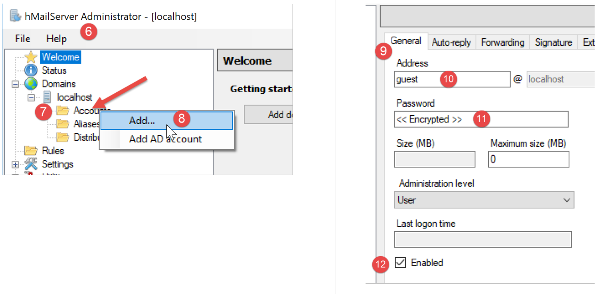
Wir erstellen nun ein Benutzerkonto:
- Klicken Sie mit der rechten Maustaste auf [Konten] (7) und dann auf (8), um einen neuen Benutzer hinzuzufügen;
- Auf der Registerkarte [Allgemein] (9) definieren wir einen Benutzer namens [guest] (10) mit dem Passwort [guest] (11). Dieser Benutzer erhält die E-Mail-Adresse [guest@localhost] (10);
- In [12] ist der Benutzer [guest] aktiviert;


- In [15] konfigurieren wir das SMTP-Protokoll des Mail-Servers;
- in [16] konfigurieren wir die E-Mail-Zustellung;
- in [17] die Konfiguration für die E-Mail-Zustellung an den Host-Rechner (localhost);
- in [18] den Namen des lokalen Rechners (localhost). Mit dem Skript im Link-Bereich können Sie diesen Namen ermitteln;
- in [19] konfigurieren wir einen SMTP-Relay-Server: Dies ist der Server, der die Verteilung von E-Mails übernimmt, die nicht für den lokalen Rechner (localhost) bestimmt sind;
- in [20] den Gmail-SMTP-Server. Wir verwenden Gmail, da wir dort im Link-Abschnitt ein Konto erstellt haben;
- In [21] den SMTP-Port von Gmail;
- in [22] ist der SMTP-Dienst von Gmail ein sicherer Dienst: Sie benötigen ein Gmail-Konto, um darauf zugreifen zu können;
- in [23] den im Abschnitt „Link“ erstellten Benutzer [php7parlexemple];
- in [24] das Passwort dieses Benutzers: [PHP7parlexemple], das im Abschnitt „link“ erstellt wurde;
- in [25] geben Sie die Art des von Gmail verwendeten Sicherheitsprotokolls an;

- in [27] den Port des SMTP-Dienstes;
- in [28] erfordert dieser Dienst keine Authentifizierung;
- Geben Sie in [30] die Begrüßungsnachricht ein, die der SMTP-Server an seine Clients sendet;
16.5.4. Das SMTP-Protokoll

Wir werden das SMTP-Protokoll unter Verwendung der folgenden Umgebung untersuchen:
- Client A ist der generische TCP-Client [RawTcpClient];
- Server B ist der Mailserver [hMailServer];
- Client A wird Server B bitten, eine E-Mail an den Benutzer [php7parlexemple@gmail.com] zuzustellen;
- wir werden überprüfen, ob dieser Benutzer die gesendete E-Mail tatsächlich erhalten hat;
Wir starten den Client wie folgt:

- In [1] stellen wir eine Verbindung zu Port 25 auf dem lokalen Rechner her, auf dem der SMTP-Dienst von [hMailServer] läuft. Das Argument [--quit bye] gibt an, dass der Benutzer das Programm durch Eingabe des Befehls [bye] beendet. Ohne dieses Argument lautet der Befehl zum Beenden des Programms [quit]. Allerdings ist [quit] auch ein Befehl des SMTP-Protokolls. Wir müssen daher diese Mehrdeutigkeit vermeiden;
- in [2] ist der Client erfolgreich verbunden;
- in [3] wartet der Client auf Befehle, die über die Tastatur eingegeben werden;
- in [4] sendet der Server dem Client seine Begrüßungsnachricht;

- in [5] sendet der Client den Befehl [EHLO client-machine-name]. Der Server antwortet mit einer Reihe von Nachrichten in der Form [250-xx] (6). Der Code [250] zeigt an, dass der vom Client gesendete Befehl erfolgreich war;
- in [7] gibt der Client den Absender der Nachricht an, hier [guest@localhost]. Dieser Benutzer muss auf dem Mailserver [hMailServer] vorhanden sein. Dies ist hier der Fall, da wir diesen Benutzer zuvor angelegt haben;
- in [8] die Antwort des Servers;
- in [9] wird der Empfänger der Nachricht angegeben, hier der Gmail-Benutzer [php7parlexemple@gmail.com];
- in [10] die Antwort des Servers;
- in [11] teilt der Befehl [DATA] dem Server mit, dass der Client im Begriff ist, den Inhalt der Nachricht zu senden;
- in [12] die Antwort des Servers;
- in [13-16] muss der Client eine Liste von Textzeilen senden, die mit einer Zeile endet, die nur einen einzigen Punkt enthält. Die Nachricht kann [Subject:, From:, To:]-Zeilen (13) enthalten, um den Betreff, den Absender bzw. den Empfänger der Nachricht zu definieren;
- in [14] muss auf die vorangehenden Kopfzeilen eine Leerzeile folgen;
- in [15] der Nachrichtentext;
- in [16] die Zeile, die nur einen einzigen Punkt enthält und das Ende der Nachricht anzeigt;
- In [17] stellt der Server die Nachricht in die Warteschlange, sobald er die Zeile mit dem einzelnen Punkt empfangen hat;
- in [18] teilt der Client dem Server mit, dass er fertig ist;
- in [19] die Antwort des Servers;
- in [20] sehen wir, dass der Server die Verbindung zum Client geschlossen hat;
Nun wollen wir überprüfen, ob der Benutzer [php7parlexemple@gmail.com] die Nachricht tatsächlich erhalten hat:

- In [2] sehen wir, dass der Benutzer [php7parlexemple@gmail.com] die Nachricht tatsächlich erhalten hat;


- in [7] den Absender der E-Mail. Wir sehen, dass es sich nicht um [guest@localhost] handelt. Das liegt daran, dass der in der [hMailServer]-Konfiguration definierte Relay-Server die Nachricht zugestellt hat. Dieser Relay-Server ist jedoch [smtp.gmail.com], der mit den Anmeldedaten des Gmail-Nutzers [php7parlexemple@gmail.com] verknüpft ist. Jede E-Mail, die von [hMailServer] stammt, erscheint so, als käme sie vom Benutzer [php7parlexemple@gmail.com]. Das ist hier nicht das, was wir wollten, aber wenn wir diesen Relay-Server nicht verwenden, lehnt der SMTP-Dienst von Gmail E-Mails ab, die von [hMailServer] gesendet werden, da Gmails SMTP eine Authentifizierung erfordert, die [hMailServer] nicht bereitstellt. Es gibt wahrscheinlich eine Möglichkeit, dieses Problem zu umgehen, aber ich habe sie noch nicht gefunden;
- in [8] sehen wir, dass die E-Mail von dem Rechner [DESKTOP-528I5CU] empfangen wurde, auf dem der [hMailServer]-Mailserver gehostet wird;
- in [9] den Absender der Nachricht. Wir können sehen, dass es sich nicht um [guest@localhost] handelt;
- in [10] der ursprüngliche Absender der Nachricht. Diesmal ist es tatsächlich [guest@localhost];
- in [11] der Betreff;
- in [12] der Empfänger;
- in [13] die Nachricht;
Schließlich hat unser [RawTcpClient] die Nachricht erfolgreich gesendet, obwohl wir ein Problem mit dem Absender hatten. Wir verfügen nun über die Grundlagen, um einen in PHP geschriebenen SMTP-Client zu erstellen.
16.5.5. Ein einfacher SMTP-Client in PHP
Wir werden das, was wir zuvor über das SMTP-Protokoll gelernt haben, in PHP umsetzen.
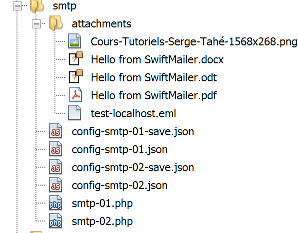
Das Skript [smtp-01.php] wird durch die folgende JSON-Datei [config-smtp-01.json] konfiguriert:
{
"mail to localhost via localhost": {
"smtp-server": "localhost",
"smtp-port": "25",
"from": "guest@localhost",
"to": "guest@localhost",
"subject": "to localhost via localhost",
"message": "ligne 1\nligne 2\nligne 3"
},
"mail to gmail via localhost": {
"smtp-server": "localhost",
"smtp-port": "25",
"from": "guest@localhost",
"to": "php7parlexemple@gmail.com",
"subject": "to gmail via localhost",
"message": "ligne 1\nligne 2\nligne 3"
},
"mail to gmail via gmail": {
"smtp-server": "smtp.gmail.com",
"smtp-port": "587",
"from": "guest@localhost",
"to": "php7parlexemple@gmail.com",
"subject": "to gmail via gmail",
"message": "ligne 1\nligne 2\nligne 3"
}
}
[config-smtp-01.json] ist ein Array, in dem jedes Element ein Wörterbuch vom Typ [name=>info] ist. Der Wert [info] ist selbst ein Wörterbuch mit den folgenden Schlüsseln und Werten:
- [smtp-server]: der Name des zu verwendenden SMTP-Servers;
- [smtp-port]: die Portnummer des SMTP-Dienstes;
- [from]: der Absender der Nachricht;
- [to]: der Empfänger der Nachricht;
- [subject]: der Betreff der Nachricht;
- [message]: die zu versendende Nachricht;
- Das erste Element verwendet den SMTP-Server [localhost], um eine E-Mail an einen Benutzer auf [localhost] zu senden;
- das zweite Element verwendet den SMTP-Server [localhost], um eine E-Mail an einen Benutzer auf [Gmail] zu senden;
- Das dritte Element verwendet den SMTP-Server [Gmail], um eine E-Mail an einen Benutzer auf [Gmail] zu senden;
Der Code [smtp-01.php] für den SMTP-Client lautet wie folgt:
<?php
// client SMTP (SendMail Transfer Protocol) for sending a message
// communication protocol SMTP client-server
// -> client connects to smtp server port 25
// <- server sends him a welcome message
// -> customer sends command EHLO machine name
// <- server responds OK or not
// -> customer sends order MAIL FROM: <sender>
// <- server responds OK or not
// -> customer sends command RCPT TO: <recipient>
// <- server responds OK or not
// -> customer sends DATA command
// <- server responds OK or not
// -> client sends all the lines of its message and ends with a line containing the
// single character .
// <- server responds OK or not
// -> customer sends QUIT command
// <- server responds OK or not
// server responses have the form xxx text where xxx is a 3-digit number. All
// number xxx >=500 indicates an error.
// The answer may consist of several lines all beginning with xxx except the last one
// of the form xxx(space)
// text lines exchanged must end with the characters RC(#13) and LF(#10)
//
// client SMTP (SendMail Transfer Protocol) for sending a message
//
// error management
//ini_set("error_reporting", E_ALL & ~ E_WARNING & ~E_DEPRECATED & ~E_NOTICE);
//ini_set("display_errors", "off");
//
// strict adherence to declared types of function parameters
declare (strict_types=1);
//
// mail settings
const CONFIG_FILE_NAME = "config-smtp-01.json";
// we retrieve the configuration
$mails = \json_decode(\file_get_contents(CONFIG_FILE_NAME), true);
// mail dispatch
foreach ($mails as $name => $infos) {
// follow-up
print "Envoi du mail [$name]\n";
// mail dispatch
$résultat = sendmail($name, $infos, TRUE);
// result display
print "$résultat\n";
}//for
// end
exit;
//sendmail
//-----------------------------------------------------------------------
function sendmail(string $name, array $infos, bool $verbose = TRUE): string {
// envoie message[$name,$infos]. If $verbose=TRUE , tracks client-server exchanges
// retrieve the customer's name
$client = gethostbyaddr(gethostbyname(""));
// open a connection with the SMTP server
$connexion = fsockopen($infos["smtp-server"], (int) $infos["smtp-port"]);
// return if error
if ($connexion === FALSE) {
return sprintf("Echec de la connexion au site (%s,%s) : %s", $infos["smtp-server"], $infos["smtp-port"]);
}
// $connexion represents a bidirectional communication flow
// between the client (this program) and the smtp server contacted
// this channel is used for the exchange of orders and information
// after connection, the server sends a welcome message which is read as follows
$erreur = sendCommand($connexion, "", $verbose, TRUE);
if ($erreur !== "") {
// closing the connection
fclose($connexion);
// return
return $erreur;
}
// cmde EHLO
$erreur = sendCommand($connexion, "EHLO $client", $verbose, TRUE);
if ($erreur !== "") {
// closing the connection
fclose($connexion);
// return
return $erreur;
}
// cmde MAIL FROM:
$erreur = sendCommand($connexion, sprintf("MAIL FROM: <%s>", $infos["from"]), $verbose, TRUE);
if ($erreur !== "") {
// closing the connection
fclose($connexion);
// return
return $erreur;
}
// cmde RCPT TO:
$erreur = sendCommand($connexion, sprintf("RCPT TO: <%s>", $infos["to"]), $verbose, TRUE);
if ($erreur !== "") {
// closing the connection
fclose($connexion);
// return
return $erreur;
}
// cmde DATA
$erreur = sendCommand($connexion, "DATA", $verbose, TRUE);
if ($erreur !== "") {
// closing the connection
fclose($connexion);
// return
return $erreur;
}
// prepare message to send
// it must contain the lines
// From: expéditeur
// To: recipient
// Subject:
// blank line
// Message
// .
$data = sprintf("From: %s\r\nTo: %s\r\nSubject: %s\r\n\r\n%s\r\n.\r\n", $infos["from"], $infos["to"], $infos["subject"], $infos["message"]);
$erreur = sendCommand($connexion, $data, $verbose, FALSE);
if ($erreur !== "") {
// closing the connection
fclose($connexion);
// return
return $erreur;
}
// cmde quit
$erreur = sendCommand($connexion, "QUIT", $verbose, TRUE);
if ($erreur !== "") {
// closing the connection
fclose($connexion);
// return
return $erreur;
}
// end
fclose($connexion);
return "Message envoyé";
}
// --------------------------------------------------------------------------
function sendCommand($connexion, string $commande, bool $verbose, bool $withRCLF): string {
// sends $commande to the $connexion channel
// verbose mode if $verbose=1
// if $withRCLF=1, adds sequence RCLF to exchange
// data
if ($withRCLF) {
$RCLF = "\r\n";
} else {
$RCLF = "";
}
// send cmde if $commande not empty
if ($commande!=="") {
fputs($connexion, "$commande$RCLF");
// possible echo
if ($verbose) {
affiche($commande, 1);
}
}//if
// reading response
$réponse = fgets($connexion, 1000);
// possible echo
if ($verbose) {
affiche($réponse, 2);
}
// error code recovery
$codeErreur = (int) substr($réponse, 0, 3);
// last line of the answer?
while (substr($réponse, 3, 1) === "-") {
// reading response
$réponse = fgets($connexion, 1000);
// possible echo
if ($verbose) {
affiche($réponse, 2);
}
}//while
// answer completed
// error returned by the server?
if ($codeErreur >= 500) {
return substr($réponse, 4);
}
// error-free return
return "";
}
// --------------------------------------------------------------------------
function affiche($échange, $sens) {
// displays $échange on screen
// if $sens=1 displays -->$echange
// if $sens=2 displays <-- $échange without the last 2 characters RCLF
switch ($sens) {
case 1:
print "--> [$échange]\n";
break;
case 2:
$L = strlen($échange);
print "<-- [" . substr($échange, 0, $L - 2) . "]\n";
break;
}//switch
}
Kommentare
- Zeile 39: Die Konfigurationsdatei wird verarbeitet;
- Zeile 42: Wir durchlaufen die Elemente des Arrays [mails]. Jedes Element ist ein Wörterbuch [name=>infos], wobei [name] ein beliebiger Name ist und [infos] ein Wörterbuch, das die zum Versenden einer E-Mail erforderlichen Informationen enthält;
- Zeile 46: Die E-Mail wird mit der Funktion [sendmail] versendet, die drei Parameter benötigt:
- $name: der Name, der dieser E-Mail gegeben wurde;
- $infos: das Wörterbuch, das die zum Versenden der E-Mail erforderlichen Informationen enthält;
- verbose: Ein Boolescher Wert, der angibt, ob der Austausch zwischen Client und Server auf der Konsole protokolliert werden soll;
- Zeile 46: Die Funktion [sendmail] gibt eine Fehlermeldung zurück, die leer ist, wenn kein Fehler aufgetreten ist;
- Zeile 56: Die Funktion [sendmail] sendet die verschiedenen Befehle, die ein SMTP-Client senden muss:
- Zeilen 77–84: der Befehl EHLO;
- Zeilen 85–92: der Befehl MAIL FROM:;
- Zeilen 93–100: der Befehl RCPT TO:;
- Zeilen 101–108: der Befehl DATA;
- Zeilen 117–124: Senden der Nachricht (Von, An, Betreff, Text);
- Zeilen 125–132: der Befehl QUIT;
- Zeile 140: Die Funktion [sendCommand] ist für das Senden der Befehle des Clients an den SMTP-Server zuständig. Sie akzeptiert vier Parameter:
- [$connection]: die Verbindung zwischen dem Client und dem Server;
- [$command]: der zu sendende Befehl;
- [$verbose]: Wenn TRUE, wird der Austausch zwischen Client und Server in der Konsole protokolliert;
- [$withRCLF]: Wenn TRUE, wird der Befehl mit der Sequenz \r\n abgeschlossen gesendet. Dies ist für alle Befehle des SMTP-Protokolls erforderlich, aber [sendCommand] wird auch zum Senden der Nachricht verwendet. In diesem Fall wird die Sequenz \r\n nicht hinzugefügt;
- Zeilen 150–157: Der Befehl wird an den Server gesendet;
- Zeilen 158–163: Liest die erste Zeile der Antwort. Die Antwort kann aus mehreren Zeilen bestehen. Jede Zeile hat die Form XXX-YYY, wobei XXX ein numerischer Code ist, mit Ausnahme der letzten Zeile der Antwort, die die Form XXX YYY (ohne Bindestrich) hat;
- Zeilen 167–174: Lesen aller Zeilen der Antwort;
- Zeile 177: Wenn der numerische Code XXX größer als 500 ist, hat der Server einen Fehler zurückgegeben;
Ergebnisse
Die Ausführung des Skripts erzeugt die folgende Konsolenausgabe:
Envoi du mail [mail to localhost via localhost]
<-- [220 Bienvenue sur sergetahe@localhost]
--> [EHLO DESKTOP-528I5CU.home]
<-- [250-DESKTOP-528I5CU]
<-- [250-SIZE 20480000]
<-- [250-AUTH LOGIN]
<-- [250 HELP]
--> [MAIL FROM: <guest@localhost>]
<-- [250 OK]
--> [RCPT TO: <guest@localhost>]
<-- [250 OK]
--> [DATA]
<-- [354 OK, send.]
--> [From: guest@localhost
To: guest@localhost
Subject: to localhost via localhost
ligne 1
ligne 2
ligne 3
.
]
<-- [250 Queued (0.016 seconds)]
--> [QUIT]
<-- [221 goodbye]
Message envoyé
Envoi du mail [mail to gmail via localhost]
<-- [220 Bienvenue sur sergetahe@localhost]
--> [EHLO DESKTOP-528I5CU.home]
<-- [250-DESKTOP-528I5CU]
<-- [250-SIZE 20480000]
<-- [250-AUTH LOGIN]
<-- [250 HELP]
--> [MAIL FROM: <guest@localhost>]
<-- [250 OK]
--> [RCPT TO: <php7parlexemple@gmail.com>]
<-- [250 OK]
--> [DATA]
<-- [354 OK, send.]
--> [From: guest@localhost
To: php7parlexemple@gmail.com
Subject: to gmail via localhost
ligne 1
ligne 2
ligne 3
.
]
<-- [250 Queued (0.000 seconds)]
--> [QUIT]
<-- [221 goodbye]
Message envoyé
Envoi du mail [mail to gmail via gmail]
<-- [220 smtp.gmail.com ESMTP d9sm21623375wro.26 - gsmtp]
--> [EHLO DESKTOP-528I5CU.home]
<-- [250-smtp.gmail.com at your service, [90.93.230.110]]
<-- [250-SIZE 35882577]
<-- [250-8BITMIME]
<-- [250-STARTTLS]
<-- [250-ENHANCEDSTATUSCODES]
<-- [250-PIPELINING]
<-- [250-CHUNKING]
<-- [250 SMTPUTF8]
--> [MAIL FROM: <guest@localhost>]
<-- [530 5.7.0 Must issue a STARTTLS command first. d9sm21623375wro.26 - gsmtp]
5.7.0 Must issue a STARTTLS command first. d9sm21623375wro.26 - gsmtp
Done.
- Zeilen 1–26: Das Senden einer E-Mail an [guest@localhost] über den SMTP-Server [hMailServer] funktioniert einwandfrei;
- Zeilen 27–52: Das Versenden einer E-Mail an [php7parlexemple@gmail.com] über den SMTP-Server [hMailServer] funktioniert einwandfrei;
- Zeilen 53–65: Der Versand einer E-Mail an [php7parlexemple@gmail.com] über den SMTP-Server [Gmail] funktioniert nicht: In Zeile 65 gibt der SMTP-Server den Fehlercode 530 mit der Fehlermeldung zurück. Dies bedeutet, dass sich der SMTP-Client zunächst über eine sichere Verbindung authentifizieren muss. Unser Client hat dies nicht getan und wird daher abgelehnt;
16.5.6. Ein zweiter SMTP-Client, der mit der [SwiftMailer]-Bibliothek geschrieben wurde
Der vorherige Client weist mindestens zwei Mängel auf:
- Er kann keine sichere Verbindung verwenden, wenn der Server eine solche verlangt;
- er kann keine Dateien an die Nachricht anhängen;
In unserem neuen Skript werden wir die [SwiftMailer]-Bibliothek [https://swiftmailer.symfony.com/] (Mai 2019) verwenden. Die Installationsanleitung für [SwiftMailer] ist unter der URL [https://swiftmailer.symfony.com/docs/introduction.HTML] (Mai 2019) beschrieben.
Starten Sie zunächst Laragon:
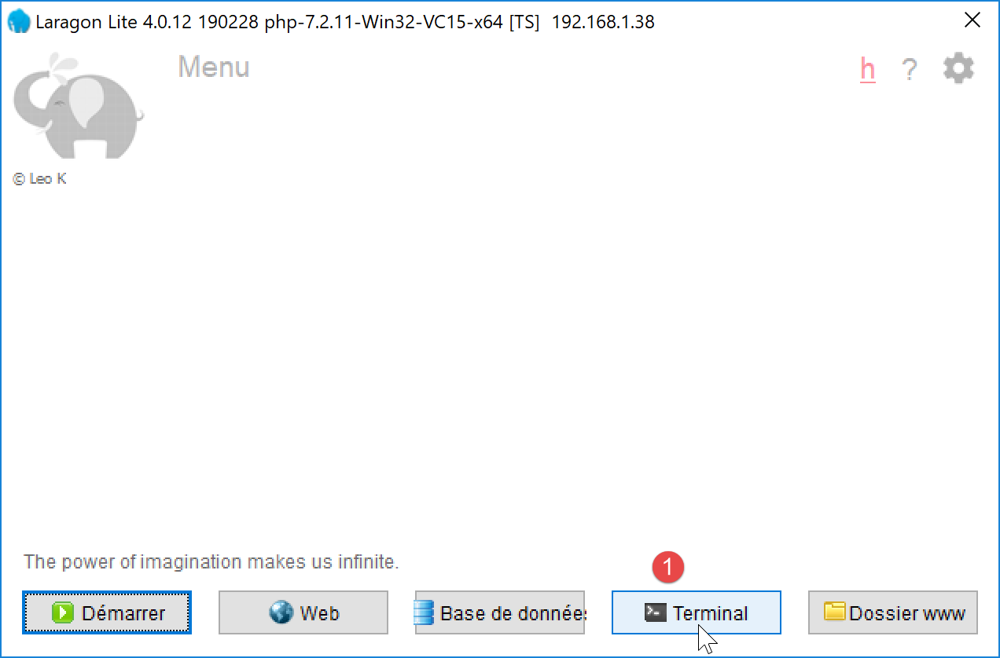
- Öffnen Sie in [1] ein Terminal;
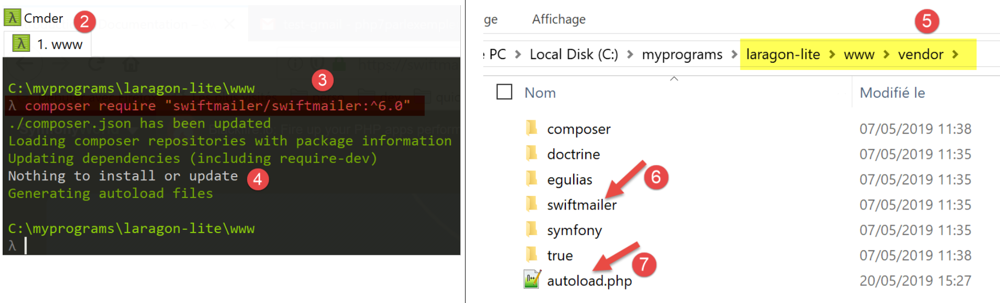
- Wechseln Sie in [3] in den Ordner [<laragon>/www], wobei <laragon> der Laragon-Installationsordner ist;
- Geben Sie in [3] den angezeigten Befehl ein (Mai 2019). Den genauen Befehl finden Sie unter der URL [https://swiftmailer.symfony.com/docs/introduction.HTML];
- in [4] wird angezeigt, dass keine Installation oder Aktualisierung durchgeführt wurde. Dies liegt daran, dass die Bibliothek auf diesem Rechner bereits installiert war;
- in [5] das Installationsverzeichnis für [swiftmailer] [6];
- in [7] eine Datei, die wir in unserem Skript benötigen;
Überprüfen Sie anschließend, ob der Ordner [<laragon>/www/vendor] [5] im NetBeans-[Include Path] enthalten ist (siehe verlinkten Abschnitt).
Schließlich erfordert die [SwiftMailer]-Bibliothek, dass die PHP-Erweiterung [mbstring] aktiviert ist. Überprüfen Sie dazu die Datei [php.ini] (siehe verlinkten Abschnitt):

Das Skript [smtp-02.php] verwendet die folgende JSON-Konfigurationsdatei [config-smtp-02.json]:
Es sind dieselben Felder vorhanden wie in der Datei [config-smtp-01.json], mit zwei zusätzlichen Feldern:
- [tls]: Wenn auf TRUE gesetzt, muss eine sichere Verbindung zum SMTP-Server verwendet werden. Wenn [tls] auf TRUE gesetzt ist, müssen zwei zusätzliche Felder hinzugefügt werden:
- [user]: der Benutzername, der zur Authentifizierung der Verbindung verwendet wird;
- [password]: das Passwort;
In unserem Beispiel haben wir die Anmeldedaten des Benutzers [php7parlexemple@gmail.com] verwendet, um eine Verbindung zum Gmail-Server herzustellen. Verwenden Sie Ihre eigenen;
- [attachments]: gibt die Namen der Dateien an, die an die E-Mail angehängt werden sollen;
Der Code für das Skript [smtp-02.php] lautet wie folgt:
<?php
// client SMTP (SendMail Transfer Protocol) for sending a message
//
// error management
//ini_set("error_reporting", E_ALL & ~ E_WARNING & ~E_DEPRECATED & ~E_NOTICE);
//ini_set("display_errors", "off");
//
// dependencies
require_once 'C:/myprograms/laragon-lite/www/vendor/autoload.php';
//
// mail settings
const CONFIG_FILE_NAME = "config-smtp-02.json";
// we retrieve the configuration
$mails = \json_decode(\file_get_contents(CONFIG_FILE_NAME), true);
// mail dispatch
foreach ($mails as $name => $infos) {
// follow-up
print "Envoi du mail [$name]\n";
// mail dispatch
$résultat = sendmail($name, $infos);
// result display
print "$résultat\n";
}//for
// end
exit;
//-----------------------------------------------------------------------
function sendmail($name, $infos) {
// sends $infos[message] to smtp server $infos[smtp-server] on port $infos[smt-port]
// if $infos[tls] is true, support TLS will be used
// the mail is sent from $infos[from]
// for the recipient $infos['to']
// Document $info[attachment] is attached to the message
// message has subject $infos[subject]
//
// message in HTML format
$messageHTML = str_replace("\n", "<br/>", $infos["message"]);
try {
// message creation
$message = (new \Swift_Message())
// message subject
->setSubject($infos["subject"])
// sender
->setFrom($infos["from"])
// recipients with a dictionary (setTo/setCc/setBcc)
->setTo($infos["to"])
// message text
->setBody($infos["message"])
// html variant
->addPart("<b>$messageHTML</b>", 'text/html')
;
// attachments
foreach ($infos["attachments"] as $attachment) {
// path of attachment
$fileName = __DIR__ . $attachment;
// check that the file exists
if (file_exists($fileName)) {
// attach the document to the message
$message->attach(\Swift_Attachment::fromPath($fileName));
} else {
// error
print "L'attachement [$fileName] n'existe pas\n";
}
}
// protocol TLS ?
if ($infos["tls"] === "TRUE") {
// TLS
$transport = (new \Swift_SmtpTransport($infos["smtp-server"], $infos["smtp-port"], 'tls'))
->setUsername($infos["user"])
->setPassword($infos["password"]);
} else {
// no TLS
$transport = (new \Swift_SmtpTransport($infos["smtp-server"], $infos["smtp-port"]));
}
// the shipment manager
$mailer = new \Swift_Mailer($transport);
// sending the message
$result = $mailer->send($message);
// end
return "Message [$name] envoyé";
} catch (\Throwable $ex) {
// error
return "Erreur lors de l'envoi du message [$name] : " . $ex->getMessage();
}
}
Kommentare
- Zeile 10: Wir laden die Datei [autoload.php] aus dem Ordner [<laragon>/www/vendor], wobei <laragon> der Laragon-Installationsordner ist. Diese Datei lädt die Klassendefinitionsdateien von SwiftMailer automatisch, sobald diese Klassen zum ersten Mal verwendet werden. Dadurch müssen wir nicht für jede SwiftMailer-Klasse und jedes SwiftMailer-Interface, die bzw. das wir verwenden, eine eigene [require]-Anweisung einfügen;
- Zeile 32: Die neue Funktion [sendmail], die zwei Parameter hat:
- [$name], der zur Unterscheidung zwischen Nachrichten dient;
- [$infos]: die Informationen, die zum Versenden der Nachricht an den Empfänger benötigt werden;
- Zeile 42: Wir werden zwei Versionen der Nachricht haben: eine im Klartext und die andere im HTML-Format. Hier ersetzen wir die Zeilenumbrüche durch den HTML-Code <br/>;
- Zeilen 45–69: Wir definieren die Nachricht mithilfe der Klasse [\SwiftMessage];
- Zeile 47: Die Methode [SwiftMessage→setSubject] wird verwendet, um den Betreff der Nachricht festzulegen;
- Zeile 49: Die Methode [SwiftMessage→setFrom] wird verwendet, um den Absender der Nachricht festzulegen;
- Zeile 51: Mit der Methode [SwiftMessage→setTo] wird der Empfänger der Nachricht festgelegt;
- Zeile 53: Die Methode [SwiftMessage→setBody] wird verwendet, um den Nachrichtentext festzulegen;
- Zeile 55: Die Methode [SwiftMessage→addPart] wird verwendet, um verschiedene Versionen der Nachricht festzulegen, in diesem Fall die Nachricht im HTML-Format. Wenn die Nachricht Varianten enthält, zeigen E-Mail-Clients die vom Benutzer bevorzugte Variante an;
- Zeilen 58–69: Mit der Methode [SwiftMessage→addAttachment] (64) können Sie der Nachricht eine Datei anhängen;
- Zeilen 70–79: Sobald die zu versendende Nachricht definiert wurde, müssen Sie festlegen, wie sie versendet werden soll. Der Nachrichtenübertragungsmodus wird durch die Klasse [\Swift_SmtpTransport] definiert. Es müssen mindestens zwei Informationen angegeben werden: der Name und der Port des SMTP-Servers. Hinzu kommt eine dritte: Erfordert der SMTP-Server eine sichere Authentifizierung?
- Zeilen 73–75: die Instanz [\Swift_SmtpTransport] für eine sichere Verbindung zum SMTP-Server;
- Zeile 78: die [\Swift_SmtpTransport]-Instanz für eine ungesicherte Verbindung zum SMTP-Server;
- Zeile 81: Die Klasse [\SwiftMailer] versendet die Nachrichten. Du musst ihr den gewählten Transportmodus übergeben;
- Zeile 83: Die [\SwiftMessage]-Nachricht wird über den ausgewählten [\Swift_SmtpTransport] gesendet. Die Methode [SwiftMailer→send] gibt FALSE zurück, wenn die Nachricht nicht gesendet werden konnte;
- Zeilen 86–89: Die [SwiftMailer]-Bibliothek löst eine Ausnahme aus, sobald ein Fehler auftritt;
Hinweis: Beachten Sie, dass der Namespace für die Klassen in der [SwiftMailer]-Bibliothek die Wurzel \ ist. Wir haben die Klassen [\SwiftMessage, \Swift_SmtpTransport, \SwiftMailer] ausdrücklich hervorgehoben, um Sie daran zu erinnern;
Ergebnisse
Beim Ausführen des Skripts [smtp-02.php] wird die folgende Konsolenausgabe angezeigt:
Wenn wir das Gmail-Konto des Benutzers [php7parlexemple] überprüfen, sehen wir Folgendes:

- in [1] den Betreff;
- in [2] den Absender;
- in [3] den Empfänger;
- in [4] die Nachricht;
- in [5–10] die Anhänge;
Wenn Sie die Originalnachricht anzeigen lassen, erhalten Sie das folgende Dokument:
Return-Path: <php7parlexemple@gmail.com>
Received: from [127.0.0.1] (lfbn-1-11924-110.w90-93.abo.wanadoo.fr. [90.93.230.110])
by smtp.gmail.com with ESMTPSA id e14sm7773816wma.41.2019.05.26.03.11.53
for <php7parlexemple@gmail.com>
(version=TLS1_2 cipher=ECDHE-RSA-AES128-GCM-SHA256 bits=128/128);
Sun, 26 May 2019 03:11:54 -0700 (PDT)
Message-ID: <e613c47a421a66e2cf7f8e319616ec49@swift.generated>
Date: Sun, 26 May 2019 10:11:53 +0000
Subject: test-gmail-via-gmail
From: php7parlexemple@gmail.com
To: php7parlexemple@gmail.com
MIME-Version: 1.0
Content-Type: multipart/mixed; boundary="_=_swift_1558865513_a3a939017128a4cfb867e968bce5df49_=_"
--_=_swift_1558865513_a3a939017128a4cfb867e968bce5df49_=_
Content-Type: multipart/alternative; boundary="_=_swift_1558865513_43c6d2a54065e4917fb06e3327f8d927_=_"
--_=_swift_1558865513_43c6d2a54065e4917fb06e3327f8d927_=_
Content-Type: text/plain; charset=utf-8
Content-Transfer-Encoding: quoted-printable
ligne 1
ligne 2
ligne 3
--_=_swift_1558865513_43c6d2a54065e4917fb06e3327f8d927_=_
Content-Type: text/HTML; charset=utf-8
Content-Transfer-Encoding: quoted-printable
<b>ligne 1<br/>ligne 2<br/>ligne 3</b>
--_=_swift_1558865513_43c6d2a54065e4917fb06e3327f8d927_=_--
--_=_swift_1558865513_a3a939017128a4cfb867e968bce5df49_=_
Content-Type: application/vnd.openxmlformats-officedocument.wordprocessingml.document; name="Hello from SwiftMailer.docx"
Content-Transfer-Encoding: base64
Content-Disposition: attachment; filename="Hello from SwiftMailer.docx"
--_=_swift_1558865513_a3a939017128a4cfb867e968bce5df49_=_
Content-Type: application/pdf; name="Hello from SwiftMailer.pdf"
Content-Transfer-Encoding: base64
Content-Disposition: attachment; filename="Hello from SwiftMailer.pdf"
--_=_swift_1558865513_a3a939017128a4cfb867e968bce5df49_=_
Content-Type: application/vnd.oasis.opendocument.text; name="Hello from SwiftMailer.odt"
Content-Transfer-Encoding: base64
Content-Disposition: attachment; filename="Hello from SwiftMailer.odt"
--_=_swift_1558865513_a3a939017128a4cfb867e968bce5df49_=_
Content-Type: image/png; name="Cours-Tutoriels-Serge-Tahé-1568x268.png"
Content-Transfer-Encoding: base64
Content-Disposition: attachment; filename="Cours-Tutoriels-Serge-Tahé-1568x268.png"
--_=_swift_1558865513_a3a939017128a4cfb867e968bce5df49_=_
Content-Type: message/rfc822; name=test-localhost.eml
Content-Transfer-Encoding: base64
Content-Disposition: attachment; filename=test-localhost.eml
Return-Path: guest@localhost
Received: from [127.0.0.1] (localhost [127.0.0.1]) by DESKTOP-528I5CU with ESMTP ; Sat, 25 May 2019 09:48:23 +0200
Message-ID: <620f4628882b011feebe4faa30b45092@swift.generated>
Date: Sat, 25 May 2019 07:48:22 +0000
Subject: test-localhost
From: guest@localhost
To: guest@localhost
MIME-Version: 1.0
Content-Type: multipart/mixed; boundary="_=_swift_1558770502_c4b808c99c27ded04595bd11f4bad11b_=_"
--_=_swift_1558770502_c4b808c99c27ded04595bd11f4bad11b_=_
Content-Type: multipart/alternative; boundary="_=_swift_1558770503_3561ca315f33bd15ef6556e98db4a5b8_=_"
--_=_swift_1558770503_3561ca315f33bd15ef6556e98db4a5b8_=_
Content-Type: text/plain; charset=utf-8
Content-Transfer-Encoding: quoted-printable
j'ai =C3=A9t=C3=A9 invit=C3=A9 =C3=A0 d=C3=A9je=C3=BBner
--_=_swift_1558770503_3561ca315f33bd15ef6556e98db4a5b8_=_
Content-Type: text/HTML; charset=utf-8
Content-Transfer-Encoding: quoted-printable
<b>j'ai =C3=A9t=C3=A9 invit=C3=A9 =C3=A0 d=C3=A9je=C3=BBner</b>
--_=_swift_1558770503_3561ca315f33bd15ef6556e98db4a5b8_=_--
--_=_swift_1558770502_c4b808c99c27ded04595bd11f4bad11b_=_
Content-Type: application/vnd.openxmlformats-officedocument.wordprocessingml.document; name="Hello from SwiftMailer.docx"
Content-Transfer-Encoding: base64
Content-Disposition: attachment; filename="Hello from SwiftMailer.docx"
--_=_swift_1558770502_c4b808c99c27ded04595bd11f4bad11b_=_
Content-Type: application/pdf; name="Hello from SwiftMailer.pdf"
Content-Transfer-Encoding: base64
Content-Disposition: attachment; filename="Hello from SwiftMailer.pdf"
--_=_swift_1558770502_c4b808c99c27ded04595bd11f4bad11b_=_
Content-Type: application/vnd.oasis.opendocument.text; name="Hello from SwiftMailer.odt"
Content-Transfer-Encoding: base64
Content-Disposition: attachment; filename="Hello from SwiftMailer.odt"
--_=_swift_1558770502_c4b808c99c27ded04595bd11f4bad11b_=_
Content-Type: image/png; name="Cours-Tutoriels-Serge-Tahé-1568x268.png"
Content-Transfer-Encoding: base64
Content-Disposition: attachment; filename="Cours-Tutoriels-Serge-Tahé-1568x268.png"
--_=_swift_1558770502_c4b808c99c27ded04595bd11f4bad11b_=_--
--_=_swift_1558865513_a3a939017128a4cfb867e968bce5df49_=_--
- Zeile 9: der Betreff;
- Zeile 10: der Absender;
- Zeile 11: der Empfänger;
- Zeile 13: Die Nachricht enthält mehrere Abschnitte, die durch [--_=_swift_xx]-Tags abgegrenzt sind;
- Zeilen 19–24: die Nachricht im Klartext;
- Zeilen 27–30: die Nachricht im HTML-Format;
- Zeilen 34–36: die angehängte Datei [Hello from SwiftMailer.docx];
- Zeilen 40–42: die angehängte Datei [Hello from SwiftMailer.pdf];
- Zeilen 46–48: die angehängte Datei [Hello from SwiftMailer.odt];
- Zeilen 58–60: die angehängte Datei [Cours-Tutoriels-Serge-Tahé-1568x268.png];
- Zeilen 58–60: die angehängte Datei [test-localhost.eml];
- Zeilen 62–114: Die angehängte Datei [test-localhost.eml] ist selbst eine Nachricht, deren Inhalt in den Zeilen 62–114 angezeigt wird. Beachten Sie, dass diese Nachricht selbst Anhänge enthält;
16.6. Die Protokolle POP3 (Post Office Protocol) und IMAP (Internet Message Access Protocol)
16.6.1. Einführung
Um auf einem Mailserver gespeicherte E-Mails zu lesen, gibt es zwei Protokolle:
- das POP3-Protokoll (Post Office Protocol), historisch gesehen das erste Protokoll, das heute jedoch nur noch selten verwendet wird;
- das IMAP-Protokoll (Internet Message Access Protocol), das neuer als POP3 ist und derzeit am weitesten verbreitet ist;
Um das POP3-Protokoll zu untersuchen, verwenden wir die folgende Architektur:

- [Server B] ist ein lokaler POP3/IMAP-Server, der vom Mailserver [hMailServer] bereitgestellt wird;
- [Client A] ist ein POP3/IMAP-Client in verschiedenen Formen:
- der [RawTcpClient]-Client zur Erkundung des POP3-Protokolls;
- ein PHP-Skript, das das POP3-Protokoll des [RawTcpClient]-Clients emuliert;
- ein PHP-Skript, das die PHP-IMAP-Bibliothek nutzt, welche die Implementierung sowohl von IMAP- als auch von POP3-Clients ermöglicht;
16.6.2. Das POP3-Protokoll erkunden
Zunächst verwenden wir das Skript [smtp-01.php], um eine E-Mail an den Benutzer [guest@localhost] zu senden. Wenn Sie die mit dem Skript verbundenen Tests durchgeführt haben, sollte dieser Benutzer E-Mails erhalten haben, was wir jedoch nicht überprüfen konnten. Um ihm eine neue E-Mail zu senden, verwenden Sie beispielsweise die folgende Konfigurationsdatei [config-smtp-01.json]:
Schauen wir uns nun an, wie wir die Mailbox des Benutzers [guest@localhost] mit dem [RawTcpClient]-Client auslesen können:
C:\Data\st-2019\dev\php7\php5-exemples\exemples\inet\utilitaires>RawTcpClient --quit bye localhost 110
Client [DESKTOP-528I5CU:55593] connecté au serveur [localhost-110]
Tapez vos commandes (bye pour arrêter) :
<-- [+OK Bienvenue sur sergetahe@localhost]
USER guest@localhost
<-- [+OK Send your password]
PASS guest
<-- [+OK Mailbox locked and ready]
LIST
<-- [+OK 2 messages (610 octets)]
<-- [1 305]
<-- [2 305]
<-- [.]
RETR 1
<-- [+OK 305 octets]
<-- [Return-Path: guest@localhost]
<-- [Received: from DESKTOP-528I5CU.home (localhost [127.0.0.1])]
<-- [ by DESKTOP-528I5CU with ESMTP]
<-- [ ; Tue, 21 May 2019 12:59:11 +0200]
<-- [Message-ID: <1356373A-33C9-4F31-BA43-2B119E128CE3@DESKTOP-528I5CU>]
<-- [From: guest@localhost]
<-- [To: guest@localhost]
<-- [Subject: to localhost via localhost]
<-- []
<-- [ligne 1]
<-- [ligne 2]
<-- [ligne 3]
<-- [.]
DELE 1
<-- [+OK msg deleted]
LIST
<-- [+OK 1 messages (305 octets)]
<-- [2 305]
<-- [.]
DELE 2
<-- [+OK msg deleted]
LIST
<-- [+OK 0 messages (0 octets)]
<-- [.]
QUIT
<-- [+OK POP3 server saying goodbye…]
Perte de la connexion avec le serveur…
- Zeile 1: Der POP3-Server verwendet in der Regel Port 110. Das ist hier der Fall;
- Zeile 5: Mit dem Befehl [USER] wird der Benutzer angegeben, dessen Postfach Sie lesen möchten;
- Zeile 7: Mit dem Befehl [PASS] wird das Passwort angegeben;
- Zeile 9: Der Befehl [LIST] fordert eine Liste der Nachrichten im Postfach des Benutzers an;
- Zeile 14: Der Befehl [RETR] fordert die durch die Nummer angegebene Nachricht an;
- Zeile 29: Der Befehl [DELE] löscht die Nachricht mit der angegebenen Nummer;
- Zeile 40: Der Befehl [QUIT] teilt dem Server mit, dass Sie fertig sind;
Die Antwort des Servers kann verschiedene Formen annehmen:
- eine einzelne Zeile, die mit [+OK] beginnt, um anzuzeigen, dass der vorherige Befehl des Clients erfolgreich war;
- eine einzelne Zeile, die mit [-ERR] beginnt, um anzuzeigen, dass der vorherige Befehl des Clients fehlgeschlagen ist;
- mehrere Zeilen, wobei:
- die erste Zeile mit [+OK] beginnt;
- die letzte Zeile aus einem einzelnen Punkt besteht;
16.6.3. Ein einfaches Skript zur Implementierung des POP3-Protokolls

Da das POP3-Protokoll die gleiche Struktur wie das SMTP-Protokoll hat, ist das Skript [pop3-01.php] eine Portierung des Skripts [smtp-01.php]. Es verfügt über die folgende Konfigurationsdatei [config-pop3-01.json]:
- Zeilen 3–4: Der abgefragte POP3-Server ist der lokale Server [hMailServer];
- Zeilen 5–6: Wir möchten das Postfach des Benutzers [guest@localhost] lesen;
- Zeile 7: Wir lesen bis zu 5 E-Mails;
Das Skript [pop3-01.php] lautet wie folgt:
<?php
// client POP3 (Post Office Protocol) for reading mailbox messages
// POP3 client-server communication protocol
// -> client connects to smtp server port 110
// <- server sends him a welcome message
// -> customer sends command USER user
// <- server responds OK or not
// -> customer sends PASS mot_de_passe order
// <- server responds OK or not
// -> customer sends LIST command
// <- server responds OK or not
// -> customer sends command RETR n° for each email
// <- server responds OK or not. If OK sends the requested mail content
// -> server sends all the mail lines and ends with a line containing the
// single character .
// -> customer sends command DELE n° to delete an e-mail
// <- server responds OK or not
// // -> client sends QUIT command to end dialog with server
// <- server responds OK or not
// server responses have the form +OK text where -ERR text
// The answer may consist of several lines. In this case, the last line consists of a single dot
// text lines exchanged must end with the characters RC(#13) and LF(#10)
//
// POP3 client (SendMail Transfer Protocol) for reading e-mails
//
// error management
//ini_set("error_reporting", E_ALL & ~ E_WARNING & ~E_DEPRECATED & ~E_NOTICE);
//ini_set("display_errors", "off");
//
// strict adherence to declared types of function parameters
declare (strict_types=1);
//
// mail settings
const CONFIG_FILE_NAME = "config-pop3-01.json";
// we retrieve the configuration
$mailboxes = \json_decode(\file_get_contents(CONFIG_FILE_NAME), true);
// letterbox reading
foreach ($mailboxes as $name => $infos) {
// follow-up
print "Lecture de la boîte à lettres [$name]\n";
// letterbox reading
$résultat = readmail($name, $infos, TRUE);
// result display
print "$résultat\n";
}//for
// end
exit;
//readmail
//-----------------------------------------------------------------------
function readmail(string $name, array $infos, bool $verbose = TRUE): string {
// reads the contents of the mailbox [$name]
// import all messages
// each message is deleted afterb being read
// If $verbose=1, tracks client-server exchanges
//
// open a connection with the SMTP server
$connexion = fsockopen($infos["server"], (int) $infos["port"]);
// return if error
if ($connexion === FALSE) {
return sprintf("Echec de la connexion au site (%s,%s) : %s", $infos["smtp-server"], $infos["smtp-port"]);
}
// $connexion represents a bidirectional communication flow
// between the client (this program) and the pop3 server contacted
// this channel is used for the exchange of orders and information
// after connection, the server sends a welcome message which is read as follows
$erreur = sendCommand($connexion, "", $verbose, TRUE);
if ($erreur !== "") {
// closing the connection
fclose($connexion);
// return
return $erreur;
}
// cmde USER
$erreur = sendCommand($connexion, "USER {$infos["user"]}", $verbose, TRUE);
if ($erreur !== "") {
// closing the connection
fclose($connexion);
// return
return $erreur;
}
// cmde PASS
$erreur = sendCommand($connexion, "PASS {$infos["password"]}", $verbose, TRUE);
if ($erreur !== "") {
// closing the connection
fclose($connexion);
// return
return $erreur;
}
// cmde LIST
$premièreLigne = "";
$erreur = sendCommand($connexion, "LIST", $verbose, TRUE, $premièreLigne);
if ($erreur !== "") {
// closing the connection
fclose($connexion);
// return
return $erreur;
}
// analyze 1st line to determine number of messages
$champs = [];
preg_match("/^\+OK (\d+)/", $premièreLigne, $champs);
$nbMessages = (int) $champs[1];
// we loop on the messages
$iMessage = 0;
while ($iMessage < $nbMessages && $iMessage < $infos["maxmails"]) {
// cmde RETR
$erreur = sendCommand($connexion, "RETR " . ($iMessage + 1), $verbose, TRUE);
if ($erreur !== "") {
// closing the connection
fclose($connexion);
// return
return $erreur;
}
// cmde DELE
$erreur = sendCommand($connexion, "DELE " . ($iMessage + 1), $verbose, TRUE);
if ($erreur !== "") {
// closing the connection
fclose($connexion);
// return
return $erreur;
}
// next msg
$iMessage++;
}
// cmde QUIT
$erreur = sendCommand($connexion, "QUIT", $verbose, TRUE);
if ($erreur !== "") {
// closing the connection
fclose($connexion);
// return
return $erreur;
}
// end
fclose($connexion);
return "Terminé";
}
// --------------------------------------------------------------------------
function sendCommand($connexion, string $commande, bool $verbose, bool $withRCLF, string &$premièreLigne = ""): string {
// sends $commande to the $connexion channel
// verbose mode if $verbose=1
// if $withRCLF=1, adds sequence RCLF to exchange
// puts the 1st line of the answer in [$premièreLigne]
// ]
// data
if ($withRCLF) {
$RCLF = "\r\n";
} else {
$RCLF = "";
}
// send cmde if $commande not empty
if ($commande !== "") {
fputs($connexion, "$commande$RCLF");
// possible echo
if ($verbose) {
affiche($commande, 1);
}
}//if
// reading response
$réponse = fgets($connexion, 1000);
// memorize the 1st line
$premièreLigne = $réponse;
// possible echo
if ($verbose) {
affiche($réponse, 2);
}
// error code recovery
$codeErreur = substr($réponse, 0, 1);
if ($codeErreur === "-") {
// there has been an error
return substr($réponse, 5);
}
// special cases of cmdes RETR and LIST with multi-line responses
$commande = substr(strtolower($commande), 0, 4);
if ($commande === "list" || $commande === "retr") {
// last line of the answer?
$champs = [];
$match = preg_match("/^\.\s+$/", $réponse, $champs);
while (!$match) {
// reading response
$réponse = fgets($connexion, 1000);
// possible echo
if ($verbose) {
affiche($réponse, 2);
}
// response analysis
$champs = [];
$match = preg_match("/^\.\s+$/", $réponse, $champs);
}//while
}
// error-free return
return "";
}
// --------------------------------------------------------------------------
function affiche($échange, $sens) {
// displays $échange on screen
// if $sens=1 displays -->$echange
// if $sens=2 displays <-- $échange without last 2 characters RCLF
switch ($sens) {
case 1:
print "--> [$échange]\n";
break;
case 2:
$L = strlen($échange);
print "<-- [" . substr($échange, 0, $L - 2) . "]\n";
break;
}//switch
}
Kommentare
Wie bereits erwähnt, ist [pop3-01.php] eine Portierung des Skripts [smtp-01.php], das wir bereits besprochen haben. Wir werden nur auf die wichtigsten Unterschiede eingehen:
- Zeile 55: Die Funktion [readmail] ist für das Abrufen von E-Mails aus dem Postfach zuständig. Die Anmeldedaten für dieses Postfach sind im Wörterbuch [$infos] gespeichert;
- Zeilen 61–66: Aufbau einer Verbindung zum POP3-Server;
- Zeilen 71–77: Lesen der vom Server gesendeten Begrüßungsnachricht;
- Zeilen 78–85: Der Befehl [USER] wird gesendet, um den Benutzer zu identifizieren, dessen E-Mails abgerufen werden sollen;
- Zeilen 86–93: Senden des Befehls [PASS], um das Passwort des Benutzers anzugeben;
- Zeilen 94–102: Senden des Befehls [LIST], um festzustellen, wie viele E-Mails sich im Postfach dieses Benutzers befinden.
- Zeile 96: Fügt den Parameter [$firstLine] zu den Parametern der Funktion [readmail] hinzu. In der ersten Zeile seiner Antwort auf den Befehl LIST gibt der Server an, wie viele Nachrichten sich im Postfach befinden;
- Zeilen 104–106: Rufen Sie die Anzahl der Nachrichten aus der ersten Zeile der Antwort ab;
- Zeilen 109–128: Wir durchlaufen jede Nachricht in einer Schleife. Für jede davon geben wir zwei Befehle ein:
- RETR i: um Nachricht Nr. i abzurufen (Zeilen 111–117);
- DELE i: um sie nach dem Lesen zu löschen (Zeilen 118–125);
- Zeilen 129–136: Der Befehl [QUIT] wird gesendet, um dem Server mitzuteilen, dass wir fertig sind;
- Zeilen 178–194: Bei den Befehlen [LIST] und [RETR] erstreckt sich die Antwort des Servers über mehrere Zeilen, wobei die letzte Zeile aus einem einzelnen Punkt besteht;
Ergebnisse
Bei der Ausführung werden die folgenden Ergebnisse erzielt:
Lecture de la boîte à lettres [localhost:110]
<-- [+OK Bienvenue sur sergetahe@localhost]
--> [USER guest@localhost]
<-- [+OK Send your password]
--> [PASS guest]
<-- [+OK Mailbox locked and ready]
--> [LIST]
<-- [+OK 1 messages (305 octets)]
<-- [1 305]
<-- [.]
--> [RETR 1]
<-- [+OK 305 octets]
<-- [Return-Path: guest@localhost]
<-- [Received: from DESKTOP-528I5CU.home (localhost [127.0.0.1])]
<-- [ by DESKTOP-528I5CU with ESMTP]
<-- [ ; Tue, 21 May 2019 14:25:39 +0200]
<-- [Message-ID: <5F912826-F9C4-41B6-BDA7-4A29537781C9@DESKTOP-528I5CU>]
<-- [From: guest@localhost]
<-- [To: guest@localhost]
<-- [Subject: to localhost via localhost]
<-- []
<-- [ligne ]
<-- [ligne ]
<-- [ligne 3]
<-- [.]
--> [DELE 1]
<-- [+OK msg deleted]
--> [QUIT]
<-- [+OK POP3 server saying goodbye…]
Terminé
Done.
Hier haben wir einen einfachen POP3-Client, dem bestimmte Funktionen fehlen:
- die Fähigkeit, mit einem sicheren POP3-Server zu kommunizieren;
- die Möglichkeit, Anhänge in einer Nachricht zu lesen;
Wir werden die erste Funktion mithilfe der [imap]-Funktionen von PHP implementieren.
16.6.4. Mit den [imap]-Funktionen von PHP implementierter POP3/IMAP-Client
Zunächst müssen wir überprüfen, ob die [imap]-Funktionen in der von uns verwendeten PHP-Version verfügbar sind. Wir öffnen die im verlinkten Abschnitt beschriebene [php.ini]-Datei und suchen nach den Zeilen, in denen [imap] erwähnt wird:

Zeile 895: Überprüfen Sie, ob die [imap]-Erweiterung aktiviert ist.
Das Skript [imap-01.php] verwendet die folgende JSON-Datei [config-imap-01.json]:
Die Datei [config-imap-01.json] definiert ein Array von IMAP/POP3-Servern, die kontaktiert werden sollen. Jedes Element ist eine [Schlüssel:Wert]-Struktur, wobei:
- [Schlüssel]: der zu kontaktierende Server ist. Wir haben hier zwei:
- [{imap.gmail.com:993/imap/ssl/novalidate-cert}INBOX]: bezieht sich auf den Server [imap.gmail.com], der auf Port 993 lauscht. Das Client-Server-Protokoll ist IMAP. Der Parameter /ssl weist darauf hin, dass die Client-Server-Kommunikation sicher ist ( ). Der Parameter /novalidate-cert weist den Client an, das vom Server gesendete Sicherheitszertifikat nicht zu überprüfen. Schließlich verwaltet ein IMAP-Server eine Reihe von Postfächern für einen einzelnen Benutzer. Durch die Angabe von INBOX in der IMAP-Server-URL geben wir an, dass wir an dem Postfach namens INBOX interessiert sind, in dem normalerweise neue Nachrichten eintreffen;
- [{localhost:110/pop3}INBOX]: bezieht sich auf den [localhost]-Server, der auf Port 110 lauscht. Das Client-Server-Protokoll ist hier POP3;
- [value]: ist ein Wörterbuch, das folgende Punkte angibt:
- [imap-server]: der Name des IMAP- oder POP3-Servers;
- [imap-port]: der Port des IMAP- oder POP3-Servers;
- [user]: der Besitzer, dessen Postfach Sie lesen möchten;
- [Passwort]: ihr Passwort;
- [output-dir]: der Ordner, in dem die Nachrichten gespeichert werden sollen;
- [prefix]: das Dateinamenpräfix für die Nachrichten, das die Form prefixN hat, wobei N die Nachrichtennummer ist;
- [pop3]: ein boolescher Wert, der auf TRUE gesetzt wird, um anzugeben, dass das verwendete Protokoll POP3 ist. In diesem Fall wird eine Nachricht nach dem Lesen gelöscht. So funktionieren POP3-Server in der Regel: Eine gelesene Nachricht wird nicht auf dem Server zurückbehalten;
Das Skript [imap-01.php] lautet wie folgt:
<?php
// IMAP (Internet Message Access Protocol) client for reading e-mails
//
// strict adherence to declared types of function parameters
declare (strict_types=1);
// error management
error_reporting(E_ALL & ~ E_WARNING & ~E_DEPRECATED & ~E_NOTICE);
//ini_set("display_errors", "off");
//
//
// mail reading parameters
const CONFIG_FILE_NAME = "config-imap-01.json";
// we retrieve the configuration
$mailboxes = \json_decode(\file_get_contents(CONFIG_FILE_NAME), true);
// reading mailboxes
foreach ($mailboxes as $name => $infos) {
// follow-up
print "------------Lecture de la boîte à lettres [$name]\n";
// reading the mailbox
readmailbox($name, $infos);
}
// end
exit;
//-----------------------------------------------------------------------
function readmailbox(string $name, array $infos): void {
// Connection attempt
$imapResource = imap_open($name, $infos["user"], $infos["password"]);
// Test on the return of the imap_open() function
if (!$imapResource) {
// Failure
print "La connexion au serveur [$name] a échoué : " . imap_last_error() . "\n";
} else {
// Connection established
print "Connexion établie avec le serveur [$name].\n";
// total messages in mailbox
$nbmsg = imap_num_msg($imapResource);
print "Il y a [$nbmsg] messages dans la boîte à lettres [$name]\n";
// unread messages in current mailbox
if ($nbmsg > 0) {
print "Récupération de la liste des messages non lus de la boîte à lettres [$name]\n";
$msgNumbers = imap_search($imapResource, 'UNSEEN');
if ($msgNumbers === FALSE) {
print "Il n'y a pas de nouveaux messages dans la boîte à lettres [$name]\n";
} else {
foreach ($msgNumbers as $msgNumber) {
// we retrieve information on message n° $msgNumber
$infosMail = imap_headerinfo($imapResource, $msgNumber);
if ($infosMail === FALSE) {
print "Statut du message n° [$msgNumber] de la boîte à lettres [$name] non récupéré : " . imap_last_error() . "\n";
} else {
print "Statut du message n° [$msgNumber] de la boîte à lettres [$name]\n";
print_r($infosMail);
}
// we retrieve the body of message n° $msgNumber
getMailBody($imapResource, $msgNumber, $infos);
// if the protocol is POP3, we delete the message
$pop3 = $infos["pop3"];
if ($pop3 !== NULL) {
// delete the message in two steps
imap_delete($imapResource, $msgNumber);
imap_expunge($imapResource);
}
}
}
}
}
// closing the connection
$imapClose = imap_close($imapResource);
if (!$imapClose) {
// Failure
print "La fermeture de la connexion a échoué : " . imap_last_error() . "\n";
} else {
// success
print "Fermeture de la connexion réussie.\n";
}
}
function getMailBody($imapResource, int $msgNumber, array $infos): void {
// we retrieve the body of message n° $msgNumber
$corpsMail = imap_body($imapResource, $msgNumber);
print "Enregistrement du message dans le fichier {$infos["output-dir"]}/{$infos["prefix"]}$msgNumber\n";
// create the folder if necessary
if (!file_exists($infos["output-dir"])) {
mkdir($infos["output-dir"]);
}
// record the message
if (!file_put_contents($infos["output-dir"] . "/" . $infos["prefix"] . $msgNumber, $corpsMail)) {
print "Echec de l'enregistrement\n";
}
}
Kommentare
- Zeilen 19–24: Durchläuft alle in der Konfigurationsdatei gefundenen Server;
- Zeile 32: Die Funktion [readmailbox] liest das in [$name] angegebene Postfach;
- Zeile 32: öffnet eine IMAP-Verbindung;
- der erste Parameter ist die IMAP-URL des zu lesenden Postfachs;
- der zweite Parameter ist der Benutzername des Postfachbesitzers;
- der dritte Parameter ist dessen Passwort;
Die Funktion [imap_open] stellt eine sichere Verbindung her, wenn die IMAP-URL des Postfachs den Parameter /ssl enthält;
- Zeile 41: Die Funktion [imap_num_msg] gibt die Gesamtzahl der Nachrichten im Postfach zurück;
- Zeile 46: Die Funktion [imap_search] ermöglicht die Suche nach bestimmten Nachrichten. Hier suchen wir nach Nachrichten, die noch nicht gelesen wurden (UNSEEN). Der zweite Parameter ist ein Auswahlkriterium. Davon gibt es etwa zwanzig. Die Funktion [imap_search] gibt ein Array mit Nachrichten-IDs zurück. Diese können zwei Formen annehmen: Sequenznummern oder Nachrichten-UIDs. Standardmäßig gibt die Funktion [imap_search] ein Array mit Sequenznummern zurück. Wenn wir einen dritten Parameter [SE_UID] hinzufügen, erhalten wir die Nachrichten-UIDs;
- Zeile 47: Die Funktion [imap_search] gibt den booleschen Wert FALSE zurück, wenn sie keine Nachrichten gefunden hat;
- Zeile 50: Wir durchlaufen alle ungelesenen Nachrichten;
- Zeile 52: Eine Nachricht verfügt über Header, die mit der Funktion [imap_headerinfo] abgerufen werden können. Ihr zweiter Parameter ist normalerweise eine Nachrichten-Sequenznummer. Wenn Sie eine Nachrichten-UID verwenden möchten, setzen Sie den dritten Parameter auf [FT_UID];
- Zeile 53: Die Funktion [imap_headerinfo] gibt FALSE zurück, wenn sie ihre Aufgabe nicht ausführen konnte. Andernfalls gibt sie ein komplexes Objekt zurück, das wir mit der Funktion [print_r] in Zeile 57 anzeigen;
- Zeile 60: Nach dem Abrufen der Kopfzeilen rufen wir nun den Nachrichtentext mit der Funktion [imap_body] ab. Diese Funktion gibt NULL zurück, wenn sie ihre Aufgabe nicht ausführen konnte;
- Zeilen 84–87: Wir speichern den Nachrichtentext in einer lokalen Datei;
- Zeilen 63–68: Wenn das verwendete Protokoll POP3 war, löschen wir die soeben gelesene Nachricht:
- Die Funktion [imap_delete] markiert die Nachricht als „zu löschen“, löscht sie jedoch nicht;
- Die Funktion [imap_expunge] löscht alle zum Löschen markierten Nachrichten physisch;
- Zeile 74: Wir schließen die Verbindung zum IMAP-Server. Dazu verwenden wir die Funktion [imap_close];
- Zeile 86: Die Funktion [imap_body] ruft den Textkörper einer Nachricht ab, die durch ihre ID identifiziert wird;
Führen wir das Skript [smtp-02.json] aus, damit der Gmail-Benutzer [php7parlexemple] und der [localhost]-Benutzer [guest] neue Nachrichten erhalten. Sobald dies erledigt ist, führen wir das Skript [imap-01.php] aus, um ihre Postfächer auszulesen.
Die Konsolenausgabe sieht wie folgt aus:
------------Lecture de la boîte à lettres [{imap.gmail.com:993/imap/ssl/novalidate-cert}INBOX]
Connexion établie avec le serveur [{imap.gmail.com:993/imap/ssl/novalidate-cert}INBOX].
Il y a [27] messages dans la boîte à lettres [{imap.gmail.com:993/imap/ssl/novalidate-cert}INBOX]
Récupération de la liste des messages non lus de la boîte à lettres [{imap.gmail.com:993/imap/ssl/novalidate-cert}INBOX]
Statut du message n° [26] de la boîte à lettres [{imap.gmail.com:993/imap/ssl/novalidate-cert}INBOX]
stdClass Object
(
[date] => Wed, 22 May 2019 10:08:24 +0000
[Date] => Wed, 22 May 2019 10:08:24 +0000
[subject] => test-gmail-via-gmail
[Subject] => test-gmail-via-gmail
[message_id] => <d8405cac62d57bd9c531ea79c146c72d@swift.generated>
[toaddress] => php7parlexemple@gmail.com
[to] => Array
(
[0] => stdClass Object
(
[mailbox] => php7parlexemple
[host] => gmail.com
)
)
[fromaddress] => php7parlexemple@gmail.com
[from] => Array
(
[0] => stdClass Object
(
[mailbox] => php7parlexemple
[host] => gmail.com
)
)
[reply_toaddress] => php7parlexemple@gmail.com
[reply_to] => Array
(
[0] => stdClass Object
(
[mailbox] => php7parlexemple
[host] => gmail.com
)
)
[senderaddress] => php7parlexemple@gmail.com
[sender] => Array
(
[0] => stdClass Object
(
[mailbox] => php7parlexemple
[host] => gmail.com
)
)
[Recent] =>
[Unseen] => U
[Flagged] =>
[Answered] =>
[Deleted] =>
[Draft] =>
[Msgno] => 26
[MailDate] => 22-May-2019 10:08:29 +0000
[Size] => 19086
[udate] => 1558519709
)
Enregistrement du message dans le fichier output/gmail-imap/message-26
Statut du message n° [27] de la boîte à lettres [{imap.gmail.com:993/imap/ssl/novalidate-cert}INBOX]
stdClass Object
(
…
)
Enregistrement du message dans le fichier output/gmail-imap/message-27
Fermeture de la connexion réussie.
------------Lecture de la boîte à lettres [{localhost:110/pop3}]
Connexion établie avec le serveur [{localhost:110/pop3}].
Il y a [1] messages dans la boîte à lettres [{localhost:110/pop3}]
Récupération de la liste des messages non lus de la boîte à lettres [{localhost:110/pop3}]
Statut du message n° [1] de la boîte à lettres [{localhost:110/pop3}]
stdClass Object
(
…
)
Enregistrement du message dans le fichier output/localhost-pop3/message-1
Fermeture de la connexion réussie.
Done.
Wenn wir das Skript [imap-01.php] unmittelbar nach diesen Ergebnissen erneut ausführen, lauten die Ergebnisse wie folgt:
------------Lecture de la boîte à lettres [{imap.gmail.com:993/imap/ssl/novalidate-cert}INBOX]
Connexion établie avec le serveur [{imap.gmail.com:993/imap/ssl/novalidate-cert}INBOX].
Il y a [27] messages dans la boîte à lettres [{imap.gmail.com:993/imap/ssl/novalidate-cert}INBOX]
Récupération de la liste des messages non lus de la boîte à lettres [{imap.gmail.com:993/imap/ssl/novalidate-cert}INBOX]
Il n'y a pas de nouveaux messages dans la boîte à lettres [{imap.gmail.com:993/imap/ssl/novalidate-cert}INBOX]
Fermeture de la connexion réussie.
------------Lecture de la boîte à lettres [{localhost:110/pop3}]
Connexion établie avec le serveur [{localhost:110/pop3}].
Il y a [0] messages dans la boîte à lettres [{localhost:110/pop3}]
Fermeture de la connexion réussie.
- Zeile 3: Es befinden sich immer noch dieselbe Anzahl an Nachrichten im Gmail-Postfach, aber es gibt keine neuen ungelesenen Nachrichten mehr (Zeile 5). Dies zeigt, dass die vorherige Ausführung den Status der gelesenen Nachrichten von „ungelesen“ auf „gelesen“ geändert hat;
- Zeile 9: Es befinden sich keine Nachrichten mehr im Postfach des Benutzers [guest@localhost]. Dies liegt daran, dass bei der vorherigen Ausführung die auf [localhost] gelesenen Nachrichten anschließend gelöscht wurden;
Die Nachrichten wurden lokal gespeichert:

Wenn wir uns beispielsweise den Inhalt der Nachricht Nr. 26 in Gmail ansehen, sehen wir Folgendes:
--_=_swift_1558519704_f31b373d6e416dc88eb4db0e45fb3a95_=_
Content-Type: multipart/alternative;
boundary="_=_swift_1558519706_9bffb48891232e50ab645383ca62242d_=_"
--_=_swift_1558519706_9bffb48891232e50ab645383ca62242d_=_
Content-Type: text/plain; charset=utf-8
Content-Transfer-Encoding: quoted-printable
ligne 1
ligne 2
ligne 3
--_=_swift_1558519706_9bffb48891232e50ab645383ca62242d_=_
Content-Type: text/HTML; charset=utf-8
Content-Transfer-Encoding: quoted-printable
<b>ligne 1<br/>ligne 2<br/>ligne 3</b>
--_=_swift_1558519706_9bffb48891232e50ab645383ca62242d_=_--
--_=_swift_1558519704_f31b373d6e416dc88eb4db0e45fb3a95_=_
Content-Type: application/pdf; name=Hello.pdf
Content-Transfer-Encoding: base64
Content-Disposition: attachment; filename=Hello.pdf
JVBERi0xLjUKJcOkw7zDtsOfCjIgMCBvYmoKPDwvTGVuZ3RoIDMgMCBSL0ZpbHRlci9GbGF0ZURl
Y29kZT4+CnN0cmVhbQp4nHWPuQoCQQyG+3mK1MKMyThHFoaAq7uF3cKAhdh5gIXgNr6+swcWshII
……………………………….…
OTQwODU4RDUzRDVENjU0QzJCNTM3Mjc+IF0KL0RvY0NoZWNrc3VtIC9DMjU3MUY1MUNDRjgwQ0Ex
ODU0OUI0RTQ4NDkwMDM3OAo+PgpzdGFydHhyZWYKMTIzMjYKJSVFT0YK
--_=_swift_1558519704_f31b373d6e416dc88eb4db0e45fb3a95_=_--
- Zeilen 11–13: die Klartextnachricht;
- Zeile 19: die HTML-Nachricht;
- Zeile 25: der Anhang;
Versuchen wir, dieses Skript so zu verbessern, dass die verschiedenen Nachrichtentypen und die Anhänge in separaten Dateien gespeichert werden.
16.6.5. Verbesserter POP3/IMAP-Client
Im Skript [imap-01.php] zeigen wir den Textkörper der Nachricht #i als Textdatei an, die sowohl die verschiedenen Nachrichtentypen als auch den kodierten Inhalt der verschiedenen Anhänge enthält. Es ist möglich, die Nachrichtenstruktur zu ermitteln, um diese verschiedenen Teile zu identifizieren. Im Skript [imap-02.php] ändern wir die Funktion [getMailBody] wie folgt:
function getMailBody($imapResource, int $msgNumber, array $infos): void {
// we retrieve the message structure
$structure=imap_fetchstructure($imapResource, $msgNumber);
// we display it
print_r($structure);
}
- Zeile 3: Wir rufen die Nachrichtenstruktur ab;
- Zeile 5: Wir zeigen sie an;
Das Ziel ist es, die in der Struktur einer Nachricht enthaltenen Informationen zu verstehen, um zu sehen, wie wir ihre verschiedenen Teile extrahieren können. In unserem Beispiel wird die Nachricht vom Skript [smtp-02.php] mit der folgenden Konfiguration [config-smtp-02.json] gesendet:
Es wird also eine Nachricht mit fünf Anhängen an [guest@localhost] gesendet (Zeilen 11–15). Das Skript [imap-02.php] wird mit der folgenden Konfiguration [config-imap-01.json] ausgeführt:
Daher wird das Postfach für [guest@localhost] verwendet (Zeile 5). Das Skript [imap-02.php] zeigt dann die Struktur der von [smtp-02.php] gesendeten Nachricht an. Diese Struktur, die auf der Konsole angezeigt wird, sieht wie folgt aus:
stdClass Object
(
[type] => 1
[encoding] => 0
[ifsubtype] => 1
[subtype] => MIXED
[ifdescription] => 0
[ifid] => 0
[bytes] => 253599
[ifdisposition] => 0
[ifdparameters] => 0
[ifparameters] => 1
[parameters] => Array
(
[0] => stdClass Object
(
[attribute] => BOUNDARY
[value] => _=_swift_1558872295_5bc8ee2ca8b3723c0b39ca8bbfbebdeb_=_
)
)
[parts] => Array
(
[0] => stdClass Object
(
[type] => 1
[encoding] => 0
[ifsubtype] => 1
[subtype] => ALTERNATIVE
[ifdescription] => 0
[ifid] => 0
[bytes] => 429
[ifdisposition] => 0
[ifdparameters] => 0
[ifparameters] => 1
[parameters] => Array
(
[0] => stdClass Object
(
[attribute] => BOUNDARY
[value] => _=_swift_1558872296_1e51aae79dfca4e7e0af112489fe8734_=_
)
)
[parts] => Array
(
[0] => stdClass Object
(
[type] => 0
[encoding] => 4
[ifsubtype] => 1
[subtype] => PLAIN
[ifdescription] => 0
[ifid] => 0
[lines] => 3
[bytes] => 27
[ifdisposition] => 0
[ifdparameters] => 0
[ifparameters] => 1
[parameters] => Array
(
[0] => stdClass Object
(
[attribute] => CHARSET
[value] => utf-8
)
)
)
[1] => stdClass Object
(
[type] => 0
[encoding] => 4
[ifsubtype] => 1
[subtype] => HTML
[ifdescription] => 0
[ifid] => 0
[lines] => 1
[bytes] => 40
[ifdisposition] => 0
[ifdparameters] => 0
[ifparameters] => 1
[parameters] => Array
(
[0] => stdClass Object
(
[attribute] => CHARSET
[value] => utf-8
)
)
)
)
)
[1] => stdClass Object
(
[type] => 3
[encoding] => 3
[ifsubtype] => 1
[subtype] => VND.OPENXMLFORMATS-OFFICEDOCUMENT.WORDPROCESSINGML.DOCUMENT
[ifdescription] => 0
[ifid] => 0
[bytes] => 16302
[ifdisposition] => 1
[disposition] => ATTACHMENT
[ifdparameters] => 1
[dparameters] => Array
(
[0] => stdClass Object
(
[attribute] => FILENAME
[value] => Hello from SwiftMailer.docx
)
)
[ifparameters] => 1
[parameters] => Array
(
[0] => stdClass Object
(
[attribute] => NAME
[value] => Hello from SwiftMailer.docx
)
)
)
[2] => stdClass Object
(
[type] => 3
[encoding] => 3
[ifsubtype] => 1
[subtype] => PDF
[ifdescription] => 0
[ifid] => 0
[bytes] => 17514
[ifdisposition] => 1
[disposition] => ATTACHMENT
[ifdparameters] => 1
[dparameters] => Array
(
[0] => stdClass Object
(
[attribute] => FILENAME
[value] => Hello from SwiftMailer.pdf
)
)
[ifparameters] => 1
[parameters] => Array
(
[0] => stdClass Object
(
[attribute] => NAME
[value] => Hello from SwiftMailer.pdf
)
)
)
[3] => stdClass Object
(
…
)
[4] => stdClass Object
(
…
)
[5] => stdClass Object
(
[type] => 2
[encoding] => 3
[ifsubtype] => 1
[subtype] => RFC822
[ifdescription] => 0
[ifid] => 0
[lines] => 1881
[bytes] => 146682
[ifdisposition] => 1
[disposition] => ATTACHMENT
[ifdparameters] => 1
[dparameters] => Array
(
[0] => stdClass Object
(
[attribute] => FILENAME
[value] => test-localhost.eml
)
)
[ifparameters] => 1
[parameters] => Array
(
[0] => stdClass Object
(
[attribute] => NAME
[value] => test-localhost.eml
)
)
[parts] => Array
(
…
)
)
)
)
Kommentare
- Die PHP-Dokumentation zur Funktion [imap_fetch_structure] erläutert die Bedeutung der verschiedenen Felder in dem von der Funktion zurückgegebenen Objekt:

Die numerischen Werte des Feldes [type] haben folgende Bedeutungen:

Die numerischen Werte des Feldes [encoding] haben folgende Bedeutung:
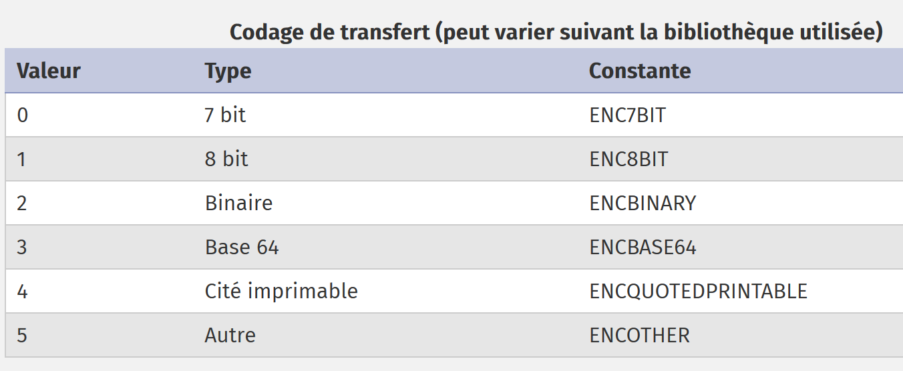
Die von [imap-01.php] aufgezeichnete Nachricht begann mit folgendem Text:
Return-Path: <php7parlexemple@gmail.com>
Received: from [127.0.0.1] (lfbn-1-11924-110.w90-93.abo.wanadoo.fr. [90.93.230.110])
by smtp.gmail.com with ESMTPSA id e14sm7773816wma.41.2019.05.26.03.11.53
for <php7parlexemple@gmail.com>
(version=TLS1_2 cipher=ECDHE-RSA-AES128-GCM-SHA256 bits=128/128);
Sun, 26 May 2019 03:11:54 -0700 (PDT)
Message-ID: <e613c47a421a66e2cf7f8e319616ec49@swift.generated>
Date: Sun, 26 May 2019 10:11:53 +0000
Subject: test-gmail-via-gmail
From: php7parlexemple@gmail.com
To: php7parlexemple@gmail.com
MIME-Version: 1.0
Content-Type: multipart/mixed; boundary="_=_swift_1558865513_a3a939017128a4cfb867e968bce5df49_=_"
--_=_swift_1558865513_a3a939017128a4cfb867e968bce5df49_=_
Content-Type: multipart/alternative; boundary="_=_swift_1558865513_43c6d2a54065e4917fb06e3327f8d927_=_"
--_=_swift_1558865513_43c6d2a54065e4917fb06e3327f8d927_=_
Content-Type: text/plain; charset=utf-8
Content-Transfer-Encoding: quoted-printable
ligne 1
ligne 2
ligne 3
--_=_swift_1558865513_43c6d2a54065e4917fb06e3327f8d927_=_
Content-Type: text/HTML; charset=utf-8
Content-Transfer-Encoding: quoted-printable
<b>ligne 1<br/>ligne 2<br/>ligne 3</b>
--_=_swift_1558865513_43c6d2a54065e4917fb06e3327f8d927_=_--
--_=_swift_1558865513_a3a939017128a4cfb867e968bce5df49_=_
- Die Zeilen 15) und 33) begrenzen die [multipart/mixed]-Nachricht (Zeile m);
- Die Zeilen 18) und 16) begrenzen den ersten Teil der Nachricht: die Klartextnachricht;
- Die Zeilen 26) und 32) begrenzen den zweiten Teil der Nachricht: die HTML-Nachricht;
Die verschiedenen Informationen aus der obigen Nachricht finden wir in dem von [imap_fetchstructure] zurückgegebenen Objekt:
stdClass Object
(
[type] => 1
[encoding] => 0
[ifsubtype] => 1
[subtype] => MIXED
[ifdescription] => 0
[ifid] => 0
[bytes] => 253599
[ifdisposition] => 0
[ifdparameters] => 0
[ifparameters] => 1
[parameters] => Array
(
[0] => stdClass Object
(
[attribute] => BOUNDARY
[value] => _=_swift_1558872295_5bc8ee2ca8b3723c0b39ca8bbfbebdeb_=_
)
)
[parts] => Array
(
[0] => stdClass Object
(
[type] => 1
[encoding] => 0
[ifsubtype] => 1
[subtype] => ALTERNATIVE
[ifdescription] => 0
[ifid] => 0
[bytes] => 429
[ifdisposition] => 0
[ifdparameters] => 0
[ifparameters] => 1
[parameters] => Array
(
[0] => stdClass Object
(
[attribute] => BOUNDARY
[value] => _=_swift_1558872296_1e51aae79dfca4e7e0af112489fe8734_=_
)
)
[parts] => Array
(
[0] => stdClass Object
(
[type] => 0
[encoding] => 4
[ifsubtype] => 1
[subtype] => PLAIN
[ifdescription] => 0
[ifid] => 0
[lines] => 3
[bytes] => 27
[ifdisposition] => 0
[ifdparameters] => 0
[ifparameters] => 1
[parameters] => Array
(
[0] => stdClass Object
(
[attribute] => CHARSET
[value] => utf-8
)
)
)
[1] => stdClass Object
(
[type] => 0
[encoding] => 4
[ifsubtype] => 1
[subtype] => HTML
[ifdescription] => 0
[ifid] => 0
[lines] => 1
[bytes] => 40
[ifdisposition] => 0
[ifdparameters] => 0
[ifparameters] => 1
[parameters] => Array
(
[0] => stdClass Object
(
[attribute] => CHARSET
[value] => utf-8
)
)
)
)
)
- Zeile 3: Die Nachricht ist vom Typ MIME (Multipurpose Internet Mail Extensions) [multipart];
- Zeile 4: Die Nachricht ist in 7 Bit kodiert;
- Zeile 5: [ifsubtype]=1 gibt an, dass die Struktur ein [subtype]-Feld enthält;
- Zeile 6: Das Feld [subtype] bezeichnet einen MIME-Subtyp, in diesem Fall den Typ [mixed]. Insgesamt lautet der MIME-Typ des Dokuments [multipart/mixed];
- Zeile 7: [ifdescription]=0 gibt an, dass in der Struktur kein [description]-Feld vorhanden ist;
- Zeile 8: [ifid]=0 gibt an, dass in der Struktur kein [id]-Feld vorhanden ist;
- Zeile 10: [ifdisposition]=0 gibt an, dass in der Struktur kein [disposition]-Feld vorhanden ist;
- Zeile 11: [ifdparameters]=0 gibt an, dass kein [dparameters]-Feld in der Struktur vorhanden ist;
- Zeile 12: [ifparameters]=1 bedeutet, dass in der Struktur ein Feld [parameters] vorhanden ist;
- Zeile 13: Das Feld [parameters] beschreibt die Nachrichtenparameter. Hier gibt es nur einen;
- Zeilen 15–19: Dieses Objekt beschreibt die nächste Zeile der Textnachricht:
Diese Zeilen dienen zur Abgrenzung der Nachricht. In der von [imap-01.php] abgerufenen Nachricht entspricht der soeben beschriebene Teil der Nachricht der Zeile m). Das Attribut [boundary] ist nicht identisch, da die Screenshots zwar derselben Nachricht entsprechen, aber zu unterschiedlichen Zeitpunkten gesendet wurden;
- Zeile 23: Hier beginnt die Struktur der verschiedenen Teile der Nachricht;
- Zeilen 25–45: Dieser erste Teil ist vom Typ [multipart/alternative]. Er entspricht Zeile p) des Nachrichtentextes;
- Zeile 47: Dieser erste Teil selbst hat Unterteile;
- Zeilen 47–70: Dieser erste Unterteil ist vom Typ [text/plain] (Zeilen 51, 54), ist als [QUOTED-PRINTABLE] kodiert (Zeile 52) und hat einen [charset=utf-8]-Parameter (Zeilen 66–67);
- Die Zeilen 49–72 beschreiben die Zeilen s–x der Textnachricht;
- Zeilen 74–99: beschreiben den zweiten Unterteil des [multipart/alternative]-Teils;
- Zeilen 74–99: Dieser zweite Unterteil ist vom Typ [text/HTML] (Zeilen 76, 79), ist in [ENCQUOTEDPRINTABLE] kodiert (Zeile 77) und hat einen Parameter [charset=utf-8] (Zeilen 89–93);
- Zeilen 74–99 beschreiben die Zeilen aa–ad der Textnachricht;
Der Abschnitt [multipart/alternative] ist nun vollständig. Der Abschnitt [application/vnd.openxmlformats-officedocument.wordprocessingml.document] beginnt und wird durch den folgenden Text beschrieben:
Auch diese Informationen finden sich in dem Objekt, das von der Funktion [imap_fetchstructure] zurückgegeben wird:
[1] => stdClass Object
(
[type] => 3
[encoding] => 3
[ifsubtype] => 1
[subtype] => VND.OPENXMLFORMATS-OFFICEDOCUMENT.WORDPROCESSINGML.DOCUMENT
[ifdescription] => 0
[ifid] => 0
[bytes] => 16302
[ifdisposition] => 1
[disposition] => ATTACHMENT
[ifdparameters] => 1
[dparameters] => Array
(
[0] => stdClass Object
(
[attribute] => FILENAME
[value] => Hello from SwiftMailer.docx
)
)
[ifparameters] => 1
[parameters] => Array
(
[0] => stdClass Object
(
[attribute] => NAME
[value] => Hello from SwiftMailer.docx
)
)
)
- Zeile 1: Dies ist der zweite Teil der Gesamtnachricht. Zur Erinnerung: Der erste Teil war vom Typ [multipart/alternative];
- Zeilen 3–6: Dieser zweite Teil ist vom Typ [application/vnd.openxmlformats-officedocument.wordprocessingml.document] (Zeilen 3 und 6) und in Base64 kodiert (Zeile 4);
- Zeile 11: Dieser zweite Teil ist ein Anhang (Zeile 11) und enthält zwei Parameter: [filename=Hello from SwiftMailer.docx] (Zeilen 15–21) und [name=Hello from SwiftMailer.docx] (Zeilen 26–32). Beachten Sie, dass dieser letzte Parameter in der Textnachricht nicht vorhanden ist. Er wurde daher in der Funktion [imap_fetchstructure] hinzugefügt;
Die Zeilen 1–36 werden für jeden der fünf Anhänge der Nachricht wiederholt.
Die Funktion [imap_fetch_structure] ermöglicht es uns somit, die Struktur einer Nachricht abzurufen. Diese Struktur definiert Teile, die ihrerseits Unterteile haben können. Um den Text eines Teils oder Unterteils abzurufen, verwenden wir die Funktion [imap_fetchbody].
Wir ändern die Funktion [getMailBody], mit der wir den Textkörper einer Nachricht abrufen können, wie folgt:
function getMailBody($imapResource, int $msgNumber, array $infos, object $infosMail): void {
// on récupère la structure du message
$structure = imap_fetchstructure($imapResource, $msgNumber);
if ($structure !== FALSE) {
// on récupère ces différentes parties
getParts($imapResource, $msgNumber, $infos, $infosMail, $structure);
}
}
function getParts($imapResource, int $msgNumber, array $infos, object $infosMail, stdclass $part, string $sectionNumber = "0"): void {
// calcul du n° de section
if (substr($sectionNumber, 0, 2) === "0.") {
$sectionNumber = substr($sectionNumber, 2);
}
print "-----contenu de la partie n° [$sectionNumber]\n";
// type de contenu
print "Content-Type: ";
switch ($part->type) {
case TYPETEXT:
print "TEXT/{$part->subtype}\n";
break;
case TYPEMULTIPART:
print "MULTIPART/{$part->subtype}\n";
break;
case TYPEAPPLICATION:
print "APPLICATION/{$part->subtype}\n";
break;
case TYPEMESSAGE:
print "MESSAGE/{$part->subtype}\n";
break;
default:
print "UNKNOWN/{$part->subtype}\n";
break;
}
// type de codage
$encodings=["7 bits", "8 bits", "binaire", "base 64", "quoted-printable", "autre"];
print "Transfer-Encoding : ".$encodings[$part->encoding]."\n";
// on passe aux sous-parties éventuelles
if (isset($part->parts)) {
for ($i = 1; $i <= count($part->parts); $i++) {
// une nouvelle partie du message
$subpart = $part->parts[$i - 1];
// appel récursif - on demande le corps de la partie [$subpart]
getParts($imapResource, $msgNumber, $infos, $infosMail, $subpart, "$sectionNumber.$i");
}
}
}
Kommentare
- Zeile 3: Wir rufen die Nachrichtenstruktur ab;
- Zeile 6: Wir fordern die verschiedenen Teile an, die sich im Array [parts] der Struktur befinden;
- Zeile 10: Die Funktion [getParts] erhält die folgenden Parameter:
- [$imapResource]: die Verbindung zum IMAP-Server;
- [$msgNumber]: die Sequenznummer der Nachricht, deren Teile wir benötigen;
- [$infos]: Informationen darüber, wo die Teile im lokalen Dateisystem gespeichert werden sollen;
- [$infosMail]: allgemeine Informationen zur E-Mail (Absender, Empfänger, Betreff usw.);
- [$part]: ein Objekt, das einen Teil der Nachricht darstellt;
- [$sectionNumber]: eine Abschnitts- (oder Teil-)Nummer der Nachricht;
- Zeilen 17–34: Zeigt den Inhaltstyp des Abschnitts [$section] der Nachricht an. Dazu verwenden wir die Felder [$part→type] und [$part→subtype] des Abschnitts [$part];
- Zeilen 36–37: Der Kodierungstyp des Teils [$sectionNumber] wird angezeigt;
- Zeilen 40–47: Möglicherweise hat der Teil, für den gerade Informationen angezeigt wurden, eigene Unterteile;
- Zeilen 41–46: Ist dies der Fall, fragen wir den Inhaltstyp der verschiedenen Unterabschnitte des soeben angezeigten Abschnitts ab. Hier führen wir einen rekursiven Aufruf der Funktion [getParts] durch;
Wir senden erneut eine E-Mail an den Gmail-Nutzer [php7parlexemple@gmail.com] mithilfe des Skripts [smtp-02.php] und lesen sie mit dem vorherigen Skript [imap-02.php] aus. Dies führt zu folgender Konsolenausgabe:
------------Lecture de la boîte à lettres [{localhost:110/pop3}]
Connexion établie avec le serveur [{localhost:110/pop3}].
Il y a [1] messages dans la boîte à lettres [{localhost:110/pop3}]
Récupération de la liste des messages non lus de la boîte à lettres [{localhost:110/pop3}]
-----contenu de la partie n° [0]
Content-Type: MULTIPART/MIXED
Transfer-Encoding : 7 bits
-----contenu de la partie n° [1]
Content-Type: MULTIPART/ALTERNATIVE
Transfer-Encoding : 7 bits
-----contenu de la partie n° [1.1]
Content-Type: TEXT/PLAIN
Transfer-Encoding : quoted-printable
-----contenu de la partie n° [1.2]
Content-Type: TEXT/HTML
Transfer-Encoding : quoted-printable
-----contenu de la partie n° [2]
Content-Type: APPLICATION/VND.OPENXMLFORMATS-OFFICEDOCUMENT.WORDPROCESSINGML.DOCUMENT
Transfer-Encoding : base 64
-----contenu de la partie n° [3]
Content-Type: APPLICATION/PDF
Transfer-Encoding : base 64
-----contenu de la partie n° [4]
Content-Type: APPLICATION/VND.OASIS.OPENDOCUMENT.TEXT
Transfer-Encoding : base 64
-----contenu de la partie n° [5]
Content-Type: UNKNOWN/PNG
Transfer-Encoding : base 64
-----contenu de la partie n° [6]
Content-Type: MESSAGE/RFC822
Transfer-Encoding : base 64
-----contenu de la partie n° [6.1]
Content-Type: TEXT/PLAIN
Transfer-Encoding : 7 bits
Fermeture de la connexion réussie.
Wir können die verschiedenen Arten von Nachrichteninhalten sowie deren Kodierungsarten abrufen. Die Nummerierung der Teile folgt dieser Regel:
- Zeilen 6–7: Der Teil [multipart/mixed], der die gesamte Nachricht darstellt, erhält die Nummer 0. Die verschiedenen Teile dieses Objekts werden dann mit 1, 2 … nummeriert.
Die Nachricht besteht aus insgesamt fünf Teilen:
- Zeilen 9–10: der Teil [multipart/alternative], nummeriert mit 1;
- Zeilen 17–18: der Teil [APPLICATION/VND.OPENXMLFORMATS-OFFICEDOCUMENT.WORDPROCESSINGML.DOCUMENT], der mit 2 nummeriert ist. Dies ist ein Word-Dateianhang;
- Zeilen 20–21: der Abschnitt [APPLICATION/PDF], nummeriert mit 3. Dies ist der Anhang einer PDF-Datei;
- Zeilen 23–24: der Abschnitt [APPLICATION/VND.OASIS.OPENDOCUMENT.TEXT] mit der Nummer 4. Dies ist ein OpenOffice-Dateianhang;
- Zeilen 26–27: der Abschnitt [UNKNOWN/PNG] mit der Nummer 5. Dies ist ein Bilddateianhang;
- Zeilen 30–31: der Abschnitt [MESSAGE/RFC822] mit der Nummer 6. Dies ist ein E-Mail-Anhang;
Wenn ein Teil Unterteile enthält, werden diese mit x.1, x.2… nummeriert, wobei x die Nummer des übergeordneten Teils ist. Somit:
- Zeilen 11–12: Der erste Teil des [multipart/alternative]-Abschnitts ist mit 1.1 nummeriert. Es handelt sich um [text/plain]-Inhalt: die E-Mail-Nachricht;
- Zeilen 14–15: Der zweite Teil des [multipart/alternative]-Teils ist mit 1.2 nummeriert. Er ist vom Typ [text/HTML]: die E-Mail-Nachricht im HTML-Format;
- Zeilen 32–33: Der erste Teil des Anhangs [MESSAGE/RFC822] trägt die Nummer 6.1. Er ist vom Typ [text/plain]. Tatsächlich weicht die Nummerierung der Teile eines E-Mail-Anhangs vom Typ [MESSAGE/RFC822] gemäß dem MIME-Standard von der oben beschriebenen Regel ab. Daher ist der erste Teil des Anhangs vom Typ [MESSAGE/RFC822] nicht mit 6.1 nummeriert, sondern hat eine andere Nummer;
Nachdem wir nun wissen, wie man die verschiedenen Teile und Unterteile einer E-Mail identifiziert, müssen wir deren Inhalt abrufen.
Der Skriptcode entwickelt sich wie folgt:
function getParts($imapResource, int $msgNumber, array $infos, object $infosMail, stdclass $part, string $sectionNumber = "0"): void {
// calcul du n° de section
if (substr($sectionNumber, 0, 2) === "0.") {
$sectionNumber = substr($sectionNumber, 2);
}
print "-----contenu de la partie n° [$sectionNumber]\n";
// type de contenu
print "Content-Type: ";
switch ($part->type) {
case TYPETEXT:
print "TEXT/{$part->subtype}\n";
break;
case TYPEMULTIPART:
print "MULTIPART/{$part->subtype}\n";
break;
case TYPEAPPLICATION:
print "APPLICATION/{$part->subtype}\n";
break;
case TYPEMESSAGE:
print "MESSAGE/{$part->subtype}\n";
break;
default:
print "UNKNOWN/{$part->subtype}\n";
break;
}
// type de codage
$encodings = ["7 bits", "8 bits", "binaire", "base 64", "quoted-printable", "autre"];
print "Transfer-Encoding : " . $encodings[$part->encoding] . "\n";
// est-ce un message ?
if ($part->type === TYPEMESSAGE) {
// on ne va pas gérer les sous-parties de ce message (mail attaché)
// on affiche le corps du mail attaché
print imap_fetchbody($imapResource, $msgNumber, $sectionNumber);
} else {
// on passe aux sous-parties éventuelles
if (isset($part->parts)) {
for ($i = 1; $i <= count($part->parts); $i++) {
// une nouvelle partie du message
$subpart = $part->parts[$i - 1];
// appel récursif - on demande le corps de la partie [$subpart]
getParts($imapResource, $msgNumber, $infos, $infosMail, $subpart, "$sectionNumber.$i");
}
} else {
// il n'y a pas de sous-parties - on affiche alors le corps du message
print imap_fetchbody($imapResource, $msgNumber, $sectionNumber);
}
}
}
Kommentare
- Zeile 46: Die Funktion [imap_fetchbody] ruft den Textkörper des Teils #[$sectionNumber] der Nachricht ab. Die Nummerierung der Nachrichtenteile folgt der zuvor erläuterten Regel;
- Zeile 1: Wir beginnen mit Abschnitt „0“;
- Zeile 41: Die Unterabschnitte dieses Abschnitts werden dann mit „0.1“, „0.2“ nummeriert, während sie eigentlich mit „1“, „2“ nummeriert werden sollten…
- Zeilen 3–5: Wir korrigieren diese Anomalie;
- Zeilen 37–43: Wenn der aktuelle Abschnitt Unterabschnitte hat, durchlaufen wir jeden einzelnen davon (Zeilen 38–43). Ihre Abschnittsnummer lautet [$sectionNumber.$i];
- Zeilen 44–47: Wenn keine Unterabschnitte mehr vorhanden sind, zeigen wir den Text des aktuellen Abschnitts mithilfe der Funktion [imap_fetchbody] an. In unserem Beispiel sind dies die Abschnitte [text/plain], [text/HTML] und die Anhänge;
Die Ausführung dieses Skripts liefert folgende Ergebnisse:
------------Lecture de la boîte à lettres [{localhost:110/pop3}]
Connexion établie avec le serveur [{localhost:110/pop3}].
Il y a [1] messages dans la boîte à lettres [{localhost:110/pop3}]
Récupération de la liste des messages non lus de la boîte à lettres [{localhost:110/pop3}]
-----contenu de la partie n° [0]
Content-Type: MULTIPART/MIXED
Transfer-Encoding : 7 bits
-----contenu de la partie n° [1]
Content-Type: MULTIPART/ALTERNATIVE
Transfer-Encoding : 7 bits
-----contenu de la partie n° [1.1]
Content-Type: TEXT/PLAIN
Transfer-Encoding : quoted-printable
ligne 1
ligne 2
ligne 3
-----contenu de la partie n° [1.2]
Content-Type: TEXT/HTML
Transfer-Encoding : quoted-printable
<b>ligne 1<br/>ligne 2<br/>ligne 3</b>
-----contenu de la partie n° [2]
Content-Type: APPLICATION/VND.OPENXMLFORMATS-OFFICEDOCUMENT.WORDPROCESSINGML.DOCUMENT
Transfer-Encoding : base 64
UEsDBBQABgAIAAAAIQDfpNJsWgEAACAFAAATAAgCW0NvbnRlbnRfVHlwZXNdLnhtbCCiBAIooAAC
AAAAAAAAAAAAAAAAAAAAAAAAAAAAAAAAAAAAAAAAAAAAAAAAAAAAAAAAAAAAAAAAAAAAAAAAAAAA
…
AAAAAAAAAF0mAABkb2NQcm9wcy9jb3JlLnhtbFBLAQItABQABgAIAAAAIQCdxkmwcgEAAMcCAAAQ
AAAAAAAAAAAAAAAAAAgpAABkb2NQcm9wcy9hcHAueG1sUEsFBgAAAAALAAsAwQIAALArAAAAAA==
-----contenu de la partie n° [3]
Content-Type: APPLICATION/PDF
Transfer-Encoding : base 64
JVBERi0xLjUKJcOkw7zDtsOfCjIgMCBvYmoKPDwvTGVuZ3RoIDMgMCBSL0ZpbHRlci9GbGF0ZURl
Y29kZT4+CnN0cmVhbQp4nHWNvQoCMRCE+zzF1sLF2WSTSyAEPD0Lu4OAhdj5AxaC1/j6Rk4s5GSa
…
PDcxQUJGQ0JGQURGODYxM0NBNUJDODNFMDNDNjI1QkQwPgo8NzFBQkZDQkZBREY4NjEzQ0E1QkM4
M0UwM0M2MjVCRDA+IF0KL0RvY0NoZWNrc3VtIC9DMTRCN0Q5N0YwNUU1OTYxQzhDODg0NEI3NkNF
OEIwRQo+PgpzdGFydHhyZWYKMTIzMTQKJSVFT0YK
-----contenu de la partie n° [4]
Content-Type: APPLICATION/VND.OASIS.OPENDOCUMENT.TEXT
Transfer-Encoding : base 64
UEsDBBQAAAgAAAs9uU5exjIMJwAAACcAAAAIAAAAbWltZXR5cGVhcHBsaWNhdGlvbi92bmQub2Fz
aXMub3BlbmRvY3VtZW50LnRleHRQSwMEFAAACAAACz25TgAAAAAAAAAAAAAAABwAAABDb25maWd1
…
AQIUABQACAgIAAs9uU42l0SORAQAABIRAAALAAAAAAAAAAAAAAAAAI8bAABjb250ZW50LnhtbFBL
AQIUABQACAgIAAs9uU4Uf52+LgEAACUEAAAVAAAAAAAAAAAAAAAAAAwgAABNRVRBLUlORi9tYW5p
ZmVzdC54bWxQSwUGAAAAABEAEQBlBAAAfSEAAAAA
-----contenu de la partie n° [5]
Content-Type: UNKNOWN/PNG
Transfer-Encoding : base 64
iVBORw0KGgoAAAANSUhEUgAABiAAAAEMCAYAAABN1n5OAAAACXBIWXMAAA7EAAAOxAGVKw4bAAAg
AElEQVR4nOy9e5TdV3Xn+Zm7aqprlBq1Rq1Wq7XU6opGrXaMMI6jAcfj9ihu4hAehkAghBASICF0
…
AAAAAAAAAAAAAAAAAAAAAAAAAAAAAAAAAAAAAAAAAAAAAAAAAAAAAAAAAAAAAAAAAAAAAAAAAAAA
AAAAAAAAAAAAAAAAAAAAAAAAAAAAAAAAAAAAAAAAAAAAAAAAAAAAAAAAAAAAAAAAAAAAAAAAAAAA
AAAA2Mb8f9Q5r2ohJn6/AAAAAElFTkSuQmCC
-----contenu de la partie n° [6]
Content-Type: MESSAGE/RFC822
Transfer-Encoding : base 64
UmV0dXJuLVBhdGg6IGd1ZXN0QGxvY2FsaG9zdA0KUmVjZWl2ZWQ6IGZyb20gWzEyNy4wLjAuMV0g
KGxvY2FsaG9zdCBbMTI3LjAuMC4xXSkNCglieSBERVNLVE9QLTUyOEk1Q1Ugd2l0aCBFU01UUA0K
…
cjJvaEpuNi9BQUFBQUVsRlRrU3VRbUNDDQotLV89X3N3aWZ0XzE1NTg3NzA1MDJfYzRiODA4Yzk5
YzI3ZGVkMDQ1OTViZDExZjRiYWQxMWJfPV8tLQ0K
Fermeture de la connexion réussie.
Kommentare
- Zeilen 14–16: Der Inhalt der Textnachricht, kodiert in [quoted-printable] (Zeile 13);
- Zeile 20: Der Inhalt der HTML-Nachricht, kodiert in [quoted-printable] (Zeile 19);
- Zeilen 24–28: der Inhalt der Word-Datei, kodiert in [base64] (Zeile 23);
- Zeilen 32–37: der Inhalt der PDF-Datei, kodiert in [base64] (Zeile 31);
- Zeilen 41–45: der Inhalt der OpenOffice-Datei, kodiert in [base64] (Zeile 40);
- Zeilen 50–55: der Inhalt der Bilddatei, kodiert in [base64] (Zeile 49);
- Zeilen 59–63: der Inhalt der angehängten E-Mail, kodiert in [base64] (Zeile 58);
Da wir nun
- wir wissen, wie man den Text aus den verschiedenen Teilen einer E-Mail extrahiert;
- wir die Kodierung dieser Texte kennen;
können wir diese Texte in Dateien speichern.
Der Code entwickelt sich wie folgt:
function getParts($imapResource, int $msgNumber, array $infos, object $infosMail, stdclass $part, string $sectionNumber = "0"): void {
// calcul du n° de section
if (substr($sectionNumber, 0, 2) === "0.") {
$sectionNumber = substr($sectionNumber, 2);
}
print "-----contenu de la partie n° [$sectionNumber]\n";
// type de contenu
print "Content-Type: ";
switch ($part->type) {
case TYPETEXT:
print "TEXT/{$part->subtype}\n";
break;
case TYPEMULTIPART:
print "MULTIPART/{$part->subtype}\n";
break;
case TYPEAPPLICATION:
print "APPLICATION/{$part->subtype}\n";
break;
case TYPEMESSAGE:
print "MESSAGE/{$part->subtype}\n";
break;
default:
print "UNKNOWN/{$part->subtype}\n";
break;
}
// type de codage
$encodings = ["7 bits", "8 bits", "binaire", "base 64", "quoted-printable", "autre"];
print "Transfer-Encoding : " . $encodings[$part->encoding] . "\n";
// est-ce un message ?
if ($part->type === TYPEMESSAGE) {
// on ne va pas gérer les sous-parties de ce message
savePart($imapResource, $msgNumber, $sectionNumber, $infos, $infosMail);
} else {
// on passe aux sous-parties éventuelles
if (isset($part->parts)) {
for ($i = 1; $i <= count($part->parts); $i++) {
// une nouvelle partie du message
$subpart = $part->parts[$i - 1];
// appel récursif - on demande le corps de la partie [$subpart]
getParts($imapResource, $msgNumber, $infos, $infosMail, $subpart, "$sectionNumber.$i");
}
} else {
// il n'y a pas de sous-parties - on sauvegarde alors le corps du message
savePart($imapResource, $msgNumber, $sectionNumber, $infos, $infosMail);
}
}
}
- Zeilen 33 und 45: Die Anzeige des Textes eines Teils [$imapResource, $msgNumber, $sectionNumber] der E-Mail wird nun durch das Speichern in einer Datei ersetzt;
Die Funktion [savePart] lautet wie folgt:
// sauvegarde d'une partie de message
function savePart($imapResource, int $msgNumber, string $sectionNumber, array $infos, object $infosMail): void {
// dossier de sauvegarde
$outputDir = $infos["output-dir"] . "/message-$msgNumber";
// si le dossier n'existe pas, on le crée
if (!file_exists($outputDir)) {
mkdir($outputDir);
}
// structure de la partie à sauvegarder
$struct = imap_bodystruct($imapResource, $msgNumber, $sectionNumber);
// type de document
$type = $struct->type;
// sous-type de document
$subtype = "";
if (isset($struct->subtype)) {
$subtype = strtolower($struct->subtype);
}
// on analyse le type de la partie
switch ($type) {
case TYPETEXT:
// cas du message texte : text/xxx
switch ($subtype) {
case plain:
saveText("$outputDir/message.txt", 0, imap_fetchBody($imapResource, $msgNumber, $sectionNumber), $infosMail, $struct);
break;
case HTML:
saveText("$outputDir/message.HTML", 1, imap_fetchBody($imapResource, $msgNumber, $sectionNumber), $infosMail, $struct);
break;
}
break;
default:
// autres cas - on ne s'intéresse qu'aux attachements
if (isset($struct->disposition)) {
$disposition = strtolower($struct->disposition);
if ($disposition === "attachment") {
// on a affaire à un attachement - on le sauvegarde
saveAttachment($imapResource, $msgNumber, $sectionNumber, $outputDir, $struct);
}
} else {
// on ne traitera pas cette partie
print "Partie [$sectionNumber] ignorée\n";
}
break;
}
}
- Zeilen 3–8: Erstellung des Sicherungsordners. Dieser Ordner wird nach der Nachrichtennummer benannt, deren Abschnitte analysiert werden;
- Zeile 10: Der zu speichernde Nachrichtenabschnitt wird eindeutig durch die drei Parameter [$imapResource, $msgNumber, $sectionNumber] definiert. Wir rufen die Struktur dieses Abschnitts mit der Funktion [imap_bodystruct] ab;
- Zeile 12: Abrufen des Haupttyps des Nachrichtenabschnitts;
- Zeilen 13–17: Sein Subtyp wird abgerufen;
- Zeilen 20–30: Wir verarbeiten die beiden Inhaltstypen: [text/plain] (Zeilen 23–25) und [text/HTML] (Zeilen 26–28). Andere [text/xx]-Typen werden ignoriert;
- Zeile 24: Der Text aus dem [text/plain]-Teil wird in einer Datei namens [message.txt] gespeichert;
- Zeile 27: Der Text aus dem [text/HTML]-Abschnitt wird in einer Datei namens [message.HTML] gespeichert;
- Zeilen 31–43: Wir behandeln Fälle, in denen der Haupttyp nicht [text] ist;
- Zeile 35: Es werden nur die Anhänge der Nachricht berücksichtigt;
- Zeile 37: Diese werden mithilfe der Funktion [saveAttachment] in einer Datei gespeichert;
Zusammenfassung des vorangegangenen Codes:
- speichert die Teile [text/plain] und [text/HTML] mithilfe der Funktion [saveText]. Diese Teile stellen den Inhalt der E-Mail dar;
- speichert die verschiedenen Anhänge mithilfe der Funktion [saveAttachment];
Die Funktion [saveText] funktioniert wie folgt:
// sauvegarde du texte [$text] du message
function saveText(string $fileName, int $type, string $text, object $infosMail, object $struct) {
// préparation du texte à sauvegarder
// $text est encodé - on le décode
switch ($struct->encoding) {
case ENCBASE64:
$text = base64_decode($text);
break;
case ENCQUOTEDPRINTABLE:
$text = quoted_printable_decode($text);
break;
}
// entêtes du message
// from
$from = "From: ";
foreach ($infosMail->from as $expéditeur) {
$from .= $expéditeur->mailbox . "@" . $expéditeur->host . ";";
}
// to
$to = "To: ";
foreach ($infosMail->to as $destinataire) {
$to .= $destinataire->mailbox . "@" . $destinataire->host . ";";
}
// subject
$subject = "Subject: " . $infosMail->subject;
// création du texte à enregistrer
switch ($type) {
case 0:
// text/plain
$contents = "$from\n$to\n$subject\n\n$text";
break;
case 1:
// text/HTML
$contents = "$from<br/>\n$to<br/>\n$subject<br/>\n<br/>\n$text";
break;
}
// création du fichier
print "sauvegarde d'un message dans [$fileName]\n";
// création du fichier
if (! file_put_contents($fileName, $contents)) {
// échec de la création du fichier
print "Impossible de créer le fichier [$fileName]\n";
}
}
Kommentare
- Zeile 1:
- [$fileName] ist der Name der Datei, in der der Text [$text] gespeichert wird;
- [$type]: ist 0 für eine Textdatei, 1 für eine HTML-Datei;
- [$text]: ist der zu speichernde Text. Er muss jedoch zuerst dekodiert werden, da er kodiert ist;
- [$infosMail]: enthält allgemeine Informationen zur E-Mail. Wir verwenden die Felder [from, to, subject];
- [$struct]: ist die Struktur, die den Teil der E-Mail beschreibt, den wir speichern. Damit können wir den Kodierungstyp des zu speichernden Textes bestimmen;
- Zeilen 4–12: Wir dekodieren den zu speichernden Text;
- Zeilen 13–25: Wir extrahieren die Informationen [from, to, subject] aus der E-Mail;
- Zeilen 27–36: Je nach Typ (0 oder 1) des zu speichernden Textes erstellen wir Klartext (Zeile 30) oder HTML-Text (Zeile 34);
- Zeile 40: Der gesamte Text wird in der Datei [$fileName] gespeichert;
Anhänge werden mit der folgenden Funktion [saveAttachment] gespeichert:
// sauvegarde d'un attachement
function saveAttachment($imapResource, int $msgNumber, string $sectionNumber, string $outputDir, object $struct) {
// on analyse la structure de l'attachement
// on cherche à récupérer le nom du fichier dans lequel sauvegarder l'attachement
// ce nom se trouve dans les [dparameters] de la structure
if (isset($struct->dparameters)) {
// on récupère les [dparameters]
$dparameters = $struct->dparameters;
$fileName = "";
// on parcourt le tableau des [dparameters]
foreach ($dparameters as $dparameter) {
// chaque [dparameter] est un objet avec deux attributs [attribute, value]
$attribute = strtolower($dparameter->attribute);
// l'attribut [filename] correspond au nom du fichier à créer
// dans ce cas le nom du fichier est dans [$dparameter->value]
if ($attribute === "filename") {
$fileName = $dparameter->value;
break;
}
}
// si on n'a pas trouvé de nom de fichier, on regarde dans l'attribut [parameters] de la structure
if ($fileName === "" && isset($struct->parameters)) {
// on récupère les [parameters]
$parameters = $struct->parameters;
foreach ($parameters as $parameter) {
// chaque paramètre est un dictionnaire à deux clés [attribute, value]
$attribute = strtolower($parameter->attribute);
// si l'attribut est [name], alors le [value] est le nom du fichier
if ($attribute === "name") {
$fileName = $parameter->value;
// le nom du fichier peut être encodé
// par exemple =?utf-8?Q?Cours-Tutoriels-Serge-Tah=C3=A9-1568x268=2Ep
// on récupère l'encodage avec une expression régulière
$champs = [];
$match = preg_match("/=\?(.+?)\?/", $fileName, $champs);
// si concordance, alors on décode le nom du fichier
if ($match) {
$fileName = iconv_mime_decode($fileName, 0, $champs[1]);
}
break;
}
}
}
}
// si on a trouvé un nom de fichier, alors on sauvegarde l'attachement
if ($fileName !== "") {
// sauvegarde de l'attachement
$fileName = "$outputDir/$fileName";
print "sauvegarde de l'attachement dans [$fileName]\n";
// création fichier
if ($file = fopen($fileName, "w")) {
// on récupère le texte encodé de l'attachement
$text = imap_fetchbody($imapResource, $msgNumber, $sectionNumber);
// l'attachement est encodé - on le décode
switch ($struct->encoding) {
// base 64
case ENCBASE64:
$text = base64_decode($text);
break;
// quoted printable
case ENCQUOTEDPRINTABLE:
$text = quoted_printable_decode($text);
break;
default:
// on ignore les autres cas
break;
}
// écriture du texte dans le fichier
fputs($file, $text);
// fermeture fichier
fclose($file);
} else {
// échec de la création du fichier
print "L'attachement n'a pu être sauvegardé dans [$fileName]\n";
}
}
}
Kommentare
- Zeile 2: Die Funktion [saveAttachment] akzeptiert die folgenden Parameter:
- [$imapResource, int $msgNumber, string $sectionNumber] identifizieren eindeutig den zu speichernden IMAP-Abschnitt;
- [string $outputDir] ist das Speicherverzeichnis;
- [object $struct] beschreibt die Struktur des zu speichernden Nachrichtenteils;
- Zeilen 6–44: Wir suchen nach dem mit dem Anhang verbundenen Dateinamen. Wir verwenden denselben Dateinamen, um ihn zu speichern. Der Dateiname des Anhangs befindet sich im Array [$struct→dparameters] oder im Array [$struct→parameters] oder in beiden;
- Zeilen 30–40: Wenn der Dateiname Zeichen enthält, die nicht in 7 Bit kodiert sind, wurde er in [quoted-printable] kodiert. In diesem Fall heißt das Attribut in [$struct→dparameters] [fileName*] statt [fileName]. Das bedeutet, dass es die Bedingung in Zeile 16 nicht erfüllt hat. Der Dateiname wird dann im Array [$struct→parameters] gesucht;
- Zeile 32: Ein Beispiel für einen kodierten Dateinamen. Er hat folgende Form: =?original_encoding?current_encoding?encoded_name. So bedeutet der Name [=?utf-8?Q?Cours-Tutoriels-Serge-Tah=C3=A9-1568x268=2Ep], dass der Dateiname ursprünglich in UTF-8 vorlag und derzeit in [quoted-printable] (Q) vorliegt;
- Zeile 38: Der Dateiname wird mit der Funktion [iconv_mime_decode] dekodiert, die hier drei Parameter benötigt:
- die zu dekodierende Zeichenkette;
- standardmäßig auf 0 gesetzt;
- der Zeichensatz, der zur Darstellung der dekodierten Zeichenkette verwendet werden soll. Dieser Parameter ist in der zu dekodierenden Zeichenkette enthalten. Er wird mithilfe eines regulären Ausdrucks in den Zeilen 34–35 ermittelt;
- Zeilen 45–75: Der Anhang wird unter dem gefundenen Namen in einer Datei gespeichert;
Um das Skript [imap-02.php] zu testen, senden Sie zunächst eine E-Mail an [guest@localhost] mit folgender Konfiguration:
Es gibt also fünf Anhänge.
Wir lesen die E-Mail, die mit [imap-02.php] und der folgenden Konfiguration gesendet wurde:
Die Konsolenausgabe lautet wie folgt:
------------Lecture de la boîte à lettres [{localhost:110/pop3}]
Connexion établie avec le serveur [{localhost:110/pop3}].
Il y a [1] messages dans la boîte à lettres [{localhost:110/pop3}]
Récupération de la liste des messages non lus de la boîte à lettres [{localhost:110/pop3}]
-----contenu de la partie n° [0]
Content-Type: MULTIPART/MIXED
Transfer-Encoding : 7 bits
-----contenu de la partie n° [1]
Content-Type: MULTIPART/ALTERNATIVE
Transfer-Encoding : 7 bits
-----contenu de la partie n° [1.1]
Content-Type: TEXT/PLAIN
Transfer-Encoding : quoted-printable
sauvegarde d'un message dans [output/localhost-pop3/message-1/message.txt]
-----contenu de la partie n° [1.2]
Content-Type: TEXT/HTML
Transfer-Encoding : quoted-printable
sauvegarde d'un message dans [output/localhost-pop3/message-1/message.HTML]
-----contenu de la partie n° [2]
Content-Type: APPLICATION/VND.OPENXMLFORMATS-OFFICEDOCUMENT.WORDPROCESSINGML.DOCUMENT
Transfer-Encoding : base 64
sauvegarde de l'attachement dans [output/localhost-pop3/message-1/Hello from SwiftMailer.docx]
-----contenu de la partie n° [3]
Content-Type: APPLICATION/PDF
Transfer-Encoding : base 64
sauvegarde de l'attachement dans [output/localhost-pop3/message-1/Hello from SwiftMailer.pdf]
-----contenu de la partie n° [4]
Content-Type: APPLICATION/VND.OASIS.OPENDOCUMENT.TEXT
Transfer-Encoding : base 64
sauvegarde de l'attachement dans [output/localhost-pop3/message-1/Hello from SwiftMailer.odt]
-----contenu de la partie n° [5]
Content-Type: UNKNOWN/PNG
Transfer-Encoding : base 64
sauvegarde de l'attachement dans [output/localhost-pop3/message-1/Cours-Tutoriels-Serge-Tahé-1568x268.png]
-----contenu de la partie n° [6]
Content-Type: MESSAGE/RFC822
Transfer-Encoding : base 64
sauvegarde de l'attachement dans [output/localhost-pop3/message-1/test-localhost.eml]
Fermeture de la connexion réussie.
Done.
Die gespeicherten Dateien befinden sich im Ordner [output/localhost-pop3/message-N]:

16.6.6. POP3/IMAP-Client unter Verwendung der Bibliothek [php-mime-mail-parser]
Im vorherigen Skript [imap-02.php] konnten wir Folgendes speichern:
- den [text/plain]- und [text/HTML]-Inhalt der E-Mail;
- die E-Mail-Anhänge;
Bei einem Anhang vom Typ [message/rfc822] haben wir auch den Inhalt des Anhangs gespeichert. Dieser Anhangstyp ist jedoch selbst eine E-Mail, die wiederum [text/plain]- und [text/HTML]-Inhalte sowie weitere Anhänge enthält. Wir könnten uns dann in der folgenden Situation wiederfinden:
- eine [E-Mail 1], deren Struktur der eines [message/rfc822]-Anhangs entspricht;
- eine [E-Mail 2], die an E-Mail 1 angehängt ist;
- eine [E-Mail 3], die an E-Mail 2 angehängt ist;
- usw.
Das Skript [imap-02.php] speichert den Inhalt von [E-Mail 1] (Text und Anhänge). Es speichert [E-Mail 2] als angehängtes Dokument, belässt es aber dabei. Es versucht nicht, [E-Mail 2] zu analysieren, um den Text und die Anhänge zu extrahieren. Man könnte meinen, dass es ausreichen würde, einfach das, was für [E-Mail 1] getan wurde, auf [E-Mail 2] anzuwenden. Ein rekursiver Aufruf der Methode, die [E-Mail 1] verarbeitet hat, könnte dann ausreichen, um den Inhalt aller verschachtelten E-Mails zu erhalten. Leider werden die Teile von [E-Mail 2] nach einer anderen Logik nummeriert als bei [E-Mail 1], was die Verwendung desselben Algorithmus in beiden Fällen verhindert, es sei denn, man wendet eine recht komplexe Logik an, um die Teilnummern einer E-Mail zu berechnen, unabhängig von ihrer Position innerhalb der Gruppe verschachtelter E-Mails.
Das Skript [imap-02.php] war bereits komplex. Um zu vermeiden, dass die Verarbeitung der Inhalte verschachtelter E-Mails noch komplexer wird, verwenden wir die Bibliothek [php-mime-mail-parser], die auf GitHub (Stand: Mai 2019) unter der URL [https://github.com/php-mime-mail-parser/php-mime-mail-parser] verfügbar ist und von Vincent Dauce geschrieben wurde.
16.6.6.1. Installation der Bibliothek [php-mime-mail-parser]
Auf der Übersichtsseite der Bibliothek wird erklärt, wie man sie unter Windows installiert:

Unter Windows sind zwei Schritte erforderlich:
télécharger une DLL ;
modifier le fichier [php.ini] qui configure PHP ;
Die [mailparse]-Bibliotheks-DLL ist unter der URL [http://pecl.php.net/package/mailparse] verfügbar (Stand: Mai 2019);

- Wählen Sie in [2] die aktuellste und stabilste Version der Bibliothek aus;

- Wählen Sie unter [3] die von Ihnen verwendete PHP-Version aus (in diesem Dokument ist es PHP 7.2);
- Wählen Sie unter [4] Ihre Windows-Betriebssystemversion aus (hier ist es 64-Bit-Windows). Wählen Sie die [Thread Safe]-Version;
Um herauszufinden, welche PHP-Version mit Laragon heruntergeladen wurde, öffnen Sie ein [Terminal] im Laragon-Fenster und geben Sie den folgenden Befehl ein:
C:\myprograms\laragon-lite\www
λ php -v
PHP 7.2.11 (cli) (built: Oct 10 2018 02:04:07) ( ZTS MSVC15 (Visual C++ 2017) x64 )
Copyright (c) 1997-2018 The PHP Group
Zend Engine v3.2.0, Copyright (c) 1998-2018 Zend Technologies
Die PHP-Version 7.2.11 ist in Zeile 3 aufgeführt. In derselben Zeile wird die für die Kompilierung verwendete Windows-Version (32-Bit oder 64-Bit) angegeben.
Sobald Sie die DLL erhalten haben, müssen Sie sie in den Ordner [<laragon>/bin/php/<php-version>/ext] kopieren [5]:

Anschließend müssen Sie diese Erweiterung in der Datei [php.ini] aktivieren, die PHP konfiguriert (siehe verlinkten Abschnitt):
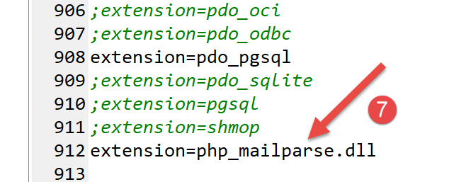
Es ist wahrscheinlich, dass die Zeile [7] nicht vorhanden ist und Sie sie selbst hinzufügen müssen.
Sobald die Erweiterung aktiviert ist, können Sie ihre Gültigkeit überprüfen, indem Sie den folgenden Befehl in ein Laragon-Terminal eingeben:
C:\myprograms\laragon-lite\www
λ php --ini
Configuration File (php.ini) Path: C:\windows
Loaded Configuration File: C:\myprograms\laragon-lite\bin\php\php-7.2.11-Win32-VC15-x64\php.ini
Scan for additional .ini files in: (none)
Additional .ini files parsed: (none)
Der Befehl [php –-ini] lädt die Konfigurationsdatei ab Zeile 4. Anschließend werden die DLLs für alle in [php.ini] aktivierten Erweiterungen geladen. Sollten einige davon fehlerhaft sein, wird dies gemeldet. Somit wird die Gültigkeit der hinzugefügten DLL [php_mailparse.dll] überprüft. Sie kann aus verschiedenen Gründen als fehlerhaft gemeldet werden, wobei die häufigsten Ursachen folgende sind:
- Sie haben eine DLL heruntergeladen, die nicht mit der verwendeten PHP-Version übereinstimmt;
- Sie haben eine 32-Bit-DLL heruntergeladen, obwohl Sie eine 64-Bit-Version von PHP verwenden, oder umgekehrt;
Sobald die Erweiterung aktiviert und überprüft wurde, können Sie mit der Installation der Bibliothek [php-mime-mail-parser] fortfahren:
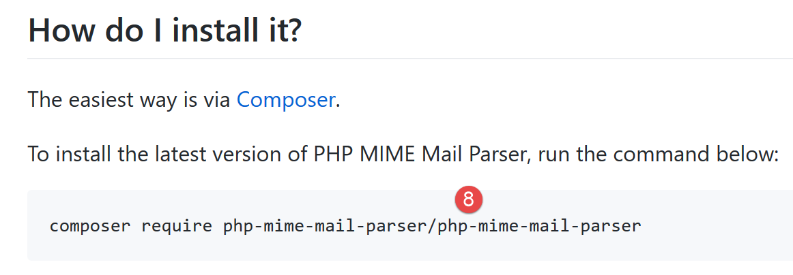
Geben Sie den Befehl [8] in einem Laragon-Terminal ein (siehe Link im Absatz):

- Vergewissern Sie sich in [1], dass Sie sich im Verzeichnis [<laragon>/www] befinden;
- In [2] sehen Sie den Befehl zur Installation der Bibliothek [php-mime-mail-parser];
- In [3] wurde hier nichts installiert, da die Bibliothek [php-mime-mail-parser] bereits installiert war;
Die Bibliothek [php-mime-mail-parser] ist im Ordner [<laragon>/www/vendor] installiert:


- in [2-3], die Quelldateien für die Bibliothek [php-mime-mail-parser];
Nachdem die Arbeitsumgebung nun eingerichtet ist, können wir mit dem Schreiben des Skripts [imap-03.php] fortfahren.
16.6.6.2. Das Skript [imap-03.php]
Das Skript [imap-03.php] verwendet dieselbe Konfigurationsdatei [config-imap-01.json] wie die vorherigen Skripte:
Das Skript [imap-03.php] lautet wie folgt:
<?php
// IMAP (Internet Message Access Protocol) client for reading e-mails
// written with the [php-mime-mail-parser] library
// available at URL [https://github.com/php-mime-mail-parser/php-mime-mail-parser] (May 2019)
//
// strict adherence to declared types of function parameters
declare (strict_types=1);
// error management
error_reporting(E_ALL & ~ E_WARNING & ~E_DEPRECATED & ~E_NOTICE);
//ini_set("display_errors", "off");
//
// dependencies
require_once 'C:/myprograms/laragon-lite/www/vendor/autoload.php';
// mail reading parameters
const CONFIG_FILE_NAME = "config-imap-01.json";
// we retrieve the configuration
if (!file_exists(CONFIG_FILE_NAME)) {
print "Le fichier de configuration " . CONFIG_FILE_NAME . " n'existe pas";
exit;
}
$mailboxes = \json_decode(\file_get_contents(CONFIG_FILE_NAME), true);
// letterbox reading
foreach ($mailboxes as $name => $infos) {
// follow-up
print "------------Lecture de la boîte à lettres [$name]\n";
// reading the mailbox
readmailbox($name, $infos);
}
// end
exit;
Kommentare
- Zeilen 18–23: Der Inhalt der Konfigurationsdatei wird in das [$mailboxes]-Wörterbuch eingefügt;
- Zeilen 26–31: Jede Mailbox wird von der Funktion [readmailbox] gelesen (Zeile 30). Diese Funktion liest tatsächlich die ungelesenen Nachrichten aus der Mailbox. Eine Mailbox entspricht der E-Mail-Adresse eines bestimmten Benutzers;
Die Funktion [readmailbox] sieht wie folgt aus:
function readmailbox(string $name, array $infos): void {
// we connect
$imapResource = imap_open($name, $infos["user"], $infos["password"]);
if (!$imapResource) {
// failure
print "La connexion au serveur [$name] a échoué : " . imap_last_error() . "\n";
exit;
}
// Connection established
print "Connexion établie avec le serveur [$name].\n";
// total messages in mailbox
$nbmsg = imap_num_msg($imapResource);
print "Il y a [$nbmsg] messages dans la boîte à lettres [$name]\n";
// unread messages in current mailbox
if ($nbmsg > 0) {
print "Récupération de la liste des messages non lus de la boîte à lettres [$name]\n";
$msgNumbers = imap_search($imapResource, 'UNSEEN');
if ($msgNumbers === FALSE) {
print "Il n'y a pas de nouveaux messages dans la boîte à lettres [$name]\n";
} else {
// browse the list of unread messages
foreach ($msgNumbers as $msgNumber) {
print "---message n° [$msgNumber]\n";
// we retrieve the body of message n° $msgNumber
getMailBody($imapResource, $msgNumber, $infos);
// if the protocol is POP3, we delete the message after retrieving it
$pop3 = $infos["pop3"];
if ($pop3 !== NULL) {
// mark the message as "to be deleted
imap_delete($imapResource, $msgNumber);
}
}
// end unread messages
if ($pop3 !== NULL) {
// messages marked as "to be deleted" are deleted
imap_expunge($imapResource);
}
}
}
// closing the connection
$imapClose = imap_close($imapResource);
if (!$imapClose) {
// failure
print "La fermeture de la connexion a échoué : " . imap_last_error() . "\n";
} else {
// success
print "Fermeture de la connexion réussie.\n";
}
}
Kommentare
Der Code für die Funktion [readmailbox] ist derselbe wie in den vorherigen Skripten.
Die Funktion [getMailBody] (Zeile 25), die den Textkörper einer Nachricht (Inhalt + Anhänge) analysiert, lautet wie folgt:
// analyse du corps du message
function getMailBody($imapResource, int $msgNumber, array $infos): void {
// on récupère le texte entier du message
$text = imap_fetchbody($imapResource, $msgNumber, "");
if ($text === FALSE) {
print "Le corps du message [$msgNumber] n'a pu être récupéré";
return;
}
// on crée un parseur qui va analyser le texte du message
$parser = (new PhpMimeMailParser\Parser())->setText($text);
// on récupère les différentes parties du message
$outputDir = $infos["output-dir"] . "/message-$msgNumber";
getParts($parser, $msgNumber, $outputDir);
}
Kommentare
- Zeile 2: Die Funktion [getMailBody] akzeptiert drei Parameter:
- [$imapResource]: die IMAP-Ressource, mit der Sie verbunden sind;
- [$msgNumber]: die Nummer der zu verarbeitenden Nachricht (im Postfach);
- [$infos]: verschiedene Informationen über das zu verarbeitende Postfach;
- Zeile 4: Die gesamte Nachricht #[$msgNumber] wird abgerufen;
- Zeilen 5–8: Fall, in dem der Nachrichteninhalt nicht abgerufen werden konnte;
- Zeile 10: Wir beginnen mit der Verwendung der Bibliothek [php-mime-mail-parser]. Das Objekt [$parser] ist für das Parsen des Nachrichtentextes zuständig;
- Zeile 12: [$outputDir] ist der Ordner, in dem der Textinhalt und die Anhänge der Nachricht #[$msgNumber] gespeichert werden;
- Zeile 13: Wir weisen die Funktion [getParts] an, die verschiedenen Teile (Textinhalt und Anhänge) der Nachricht #[$msgNumber] zu finden und sie im Ordner [$outputDir] zu speichern;
Die Funktion [getParts] sieht wie folgt aus:
// récupération des différentes parties d'un message
function getParts(PhpMimeMailParser\Parser $parser, int $msgNumber, string $outputDir): void {
// on crée le dossier de sauvegarde du message si besoin est
if (!file_exists($outputDir)) {
if (!mkdir($outputDir)) {
print "Le dossier [$outputDir] n'a pu être créé\n";
return;
}
}
// on récupère les entêtes du message
$arrayHeaders = $parser->getHeaders();
// on sauvegarde les messages texte
$parts = $parser->getInlineParts("text");
for ($i = 1; $i <= count($parts); $i++) {
print "-- Sauvegarde d'un message de type [text/plain]\n";
saveMessage($parts[$i - 1], 0, $arrayHeaders, "$outputDir/message_$i.txt");
}
// on sauvegarde les messages html
$parts = $parser->getInlineParts("html");
for ($i = 1; $i <= count($parts); $i++) {
print "-- Sauvegarde d'un message de type [text/html]\n";
saveMessage($parts[$i - 1], 1, $arrayHeaders, "$outputDir/message_$i.html");
}
// on récupère les attachements du message
$attachments = $parser->getAttachments();
// n° de l'attachement
$iAttachment = 0;
// on parcourt la liste des attachements
foreach ($attachments as $attachment) {
// type d'attachement
$fileType = $attachment->getContentType();
print "-- Sauvegarde d'un attachement de type [$fileType] dans le fichier [$outputDir/{$attachment->getFilename()}]\n";
// on sauvegarde l'attachement
try {
$attachment->save($outputDir, PhpMimeMailParser\Parser::ATTACHMENT_DUPLICATE_SUFFIX);
} catch (Exception $e) {
print "L'attachement n'a pu être sauvegardé : " . $e->getMessage() . "\n";
}
// cas particulier du type message/rfc822
if ($fileType === "message/rfc822") {
// l'attachement est lui-même un message - on va le parser lui aussi
// on change de répertoire de sauvegarde
$iAttachment++;
$outputDir = $outputDir . "/rfc822-$iAttachment";
// on change le contenu à parser
$parser->setText($attachment->getContent());
// on analyse le message de façon récursive
getParts($parser, $msgNumber, $outputDir);
}
}
}
Kommentare
- Zeile 2: Die Funktion [getParts] nimmt drei Parameter entgegen:
- einen Parser [$parser], an den der gesamte Text der zu analysierenden Nachricht übergeben wurde;
- [$msgNumber] ist die Nummer der aktuell analysierten Nachricht;
- [$outputDir] ist das Verzeichnis, in dem der Inhalt der Nachricht und die Anhänge gespeichert werden sollen;
- Zeilen 4–9: Erstellung des Ordners [$outputDir];
- Zeile 11: Abrufen der Kopfzeilen der analysierten Nachricht (Von, An, Betreff usw.);
- Zeile 13: Abrufen der Teile der E-Mail mit dem Typ [text/plain]. Abrufen eines Arrays;
- Zeilen 14–17: Speichern aller Elemente des abgerufenen Arrays unter jeweils unterschiedlichen Dateinamen;
- Zeile 19: Abrufen der Teile der E-Mail mit dem Typ [text/html]. Es wird eine Tabelle abgerufen;
- Zeilen 20–23: Wir speichern alle Elemente des abgerufenen Arrays und vergeben für jedes einen anderen Dateinamen;
- Zeile 25: Abrufen der Liste der Anhänge für die analysierte Nachricht;
- Zeile 29: Wir durchlaufen diese Liste;
- Zeile 24: Abrufen des Anhangstyps (Content-Type-Attribut);
- Zeilen 34–38: Speichern des Anhangs im Ordner [$outputDir]. Der zweite Parameter [PhpMimeMailParser\Parser::ATTACHMENT_DUPLICATE_SUFFIX] ist eine Benennungsstrategie für Anhänge. Wenn [$attachment→getFilename()] gleich X ist und die Datei X bereits existiert, probiert die Bibliothek [php-mime-mail-parser] die Namen [X_1], [X_2] usw. aus, bis sie einen Dateinamen findet, der noch nicht existiert;
- Zeile 40: Wir prüfen, ob es sich bei dem Anhang um eine E-Mail handelt;
- Zeilen 41–48: Wenn ja, wird diese E-Mail wiederum geparst, um ihren Inhalt und ihre Anhänge zu extrahieren;
- Zeile 44: Wenn [$outputDir] auf X gesetzt ist und die analysierte Nachricht zwei E-Mail-Anhänge enthält, wird der erste im Ordner [$outputDir/rfc822-1] und der zweite im Ordner [$outputDir/rfc822-2] gespeichert;
- Zeile 46: Der Inhalt der angehängten E-Mail wird zum neuen Text, der analysiert werden soll;
- Zeile 48: Die Funktion [getParts] wird rekursiv aufgerufen, um den neuen Text zu analysieren;
Die Funktion [saveMessage] speichert den Textinhalt der zu analysierenden Nachricht:
// sauvegarde d'un message texte
function saveMessage(string $text, int $type, array $arrayHeaders, string $filename): void {
// contenu à sauvegarder
$contents = "";
// ajout des entêtes
switch ($type) {
case 0:
// text/plain
foreach ($arrayHeaders as $key => $value) {
$contents .= "$key: $value\n";
}
$contents .= "\n";
break;
case 1:
// text/HTML
foreach ($arrayHeaders as $key => $value) {
$contents .= "$key: $value<br/>\n";
}
$contents .= "<br/>\n";
}
// ajout du texte du message
$contents .= $text;
// sauvegarde du tout
if (!file_put_contents($filename, $contents)) {
// échec
print "Le message n'a pu être sauvegardé dans le fichier [$filename]\n";
} else {
// réussite
print "Le message a été sauvegardé dans le fichier [$filename]\n";
}
}
Kommentare
- Die Funktion [saveMessage] akzeptiert die folgenden Parameter:
- [$text]: der zu speichernde Text;
- [$type]: der Texttyp (0: text/plain, 1: text/HTML);
- [$arrayHeaders]: die Header der geparsten Nachricht;
- [$filename]: der Name der Datei, in der [$text] gespeichert werden soll;
- Zeile 4: [$contents] steht für den gesamten zu speichernden Text;
- Zeilen 6–20: Zunächst werden alle Nachrichten-Header (Von, An, Betreff usw.) gespeichert;
- Zeilen 16–19: Bei HTML-Text endet jede Zeile mit dem Tag <br/>, damit jede Kopfzeile im Browser in einer eigenen Zeile angezeigt wird;
- Zeile 22: Der zu speichernde Nachrichtentext wird an die Kopfzeilen angehängt;
- Zeilen 24–30: Der gesamte Satz wird in der Datei [$filename] gespeichert;
Die Verwendung der Bibliothek [php-mime-mail-parser] vereinfacht das Schreiben des Skripts zum Lesen von E-Mails erheblich.
Das Skript [smtp-02.php] wird verwendet, um eine E-Mail an den Benutzer [guest@localhost] mit der folgenden Konfiguration zu senden:
- Zeilen 11–15: Es gibt fünf Anhänge;
- Zeile 15: [test-localhost-2.eml] ist eine E-Mail mit folgendem Aufbau:
- [test-localhost-2.eml] enthält 4 Anhänge (die gleichen wie in den Zeilen 11–14) und eine angehängte E-Mail;
- die an [test-localhost-2.eml] angehängte E-Mail enthält 4 Anhänge (die gleichen wie in den Zeilen 11–14);
Das Skript [imap-03.php] dient dazu, das Postfach des Benutzers [guest@localhost] mit der folgenden Konfiguration auszulesen:
Nach der Ausführung sah die Verzeichnisstruktur des Ordners [output/localhost-pop3] wie folgt aus:

- in [1] die 5 Anhänge aus der von [guest@localhost] empfangenen E-Mail;
- in [2] die 5 Anhänge aus der E-Mail [test-localhost-2.eml] in [1];
- in [3] die 4 Anhänge aus der E-Mail [test-localhost.eml] in [2];
Die Konsolenausgabe lautet wie folgt:
------------Lecture de la boîte à lettres [{localhost:110/pop3}]
Connexion établie avec le serveur [{localhost:110/pop3}].
Il y a [1] messages dans la boîte à lettres [{localhost:110/pop3}]
Récupération de la liste des messages non lus de la boîte à lettres [{localhost:110/pop3}]
---message n° [1]
-- Sauvegarde d'un message de type [text/plain]
Le message a été sauvegardé dans le fichier [output/localhost-pop3/message-1/message_1.txt]
-- Sauvegarde d'un message de type [text/html]
Le message a été sauvegardé dans le fichier [output/localhost-pop3/message-1/message_1.html]
-- Sauvegarde d'un attachement de type [application/vnd.openxmlformats-officedocument.wordprocessingml.document] dans le fichier [output/localhost-pop3/message-1/Hello from SwiftMailer.docx]
-- Sauvegarde d'un attachement de type [application/pdf] dans le fichier [output/localhost-pop3/message-1/Hello from SwiftMailer.pdf]
-- Sauvegarde d'un attachement de type [application/vnd.oasis.opendocument.text] dans le fichier [output/localhost-pop3/message-1/Hello from SwiftMailer.odt]
-- Sauvegarde d'un attachement de type [image/png] dans le fichier [output/localhost-pop3/message-1/Cours-Tutoriels-Serge-Tahé-1568x268.png]
-- Sauvegarde d'un attachement de type [message/rfc822] dans le fichier [output/localhost-pop3/message-1/test-localhost-2.eml]
-- Sauvegarde d'un message de type [text/plain]
Le message a été sauvegardé dans le fichier [output/localhost-pop3/message-1/rfc822-1/message_1.txt]
-- Sauvegarde d'un message de type [text/html]
Le message a été sauvegardé dans le fichier [output/localhost-pop3/message-1/rfc822-1/message_1.html]
-- Sauvegarde d'un attachement de type [application/vnd.openxmlformats-officedocument.wordprocessingml.document] dans le fichier [output/localhost-pop3/message-1/rfc822-1/Hello from SwiftMailer.docx]
-- Sauvegarde d'un attachement de type [application/pdf] dans le fichier [output/localhost-pop3/message-1/rfc822-1/Hello from SwiftMailer.pdf]
-- Sauvegarde d'un attachement de type [application/vnd.oasis.opendocument.text] dans le fichier [output/localhost-pop3/message-1/rfc822-1/Hello from SwiftMailer.odt]
-- Sauvegarde d'un attachement de type [image/png] dans le fichier [output/localhost-pop3/message-1/rfc822-1/Cours-Tutoriels-Serge-Tahé-1568x268.png]
-- Sauvegarde d'un attachement de type [message/rfc822] dans le fichier [output/localhost-pop3/message-1/rfc822-1/test-localhost.eml]
-- Sauvegarde d'un message de type [text/plain]
Le message a été sauvegardé dans le fichier [output/localhost-pop3/message-1/rfc822-1/rfc822-1/message_1.txt]
-- Sauvegarde d'un message de type [text/html]
Le message a été sauvegardé dans le fichier [output/localhost-pop3/message-1/rfc822-1/rfc822-1/message_1.html]
-- Sauvegarde d'un attachement de type [application/vnd.openxmlformats-officedocument.wordprocessingml.document] dans le fichier [output/localhost-pop3/message-1/rfc822-1/rfc822-1/Hello from SwiftMailer.docx]
-- Sauvegarde d'un attachement de type [application/pdf] dans le fichier [output/localhost-pop3/message-1/rfc822-1/rfc822-1/Hello from SwiftMailer.pdf]
-- Sauvegarde d'un attachement de type [application/vnd.oasis.opendocument.text] dans le fichier [output/localhost-pop3/message-1/rfc822-1/rfc822-1/Hello from SwiftMailer.odt]
-- Sauvegarde d'un attachement de type [image/png] dans le fichier [output/localhost-pop3/message-1/rfc822-1/rfc822-1/Cours-Tutoriels-Serge-Tahé-1568x268.png]
Fermeture de la connexion réussie.
Wenn Sie [message_1.HTML] aus [3] in einem Browser aufrufen, erhalten Sie Folgendes: